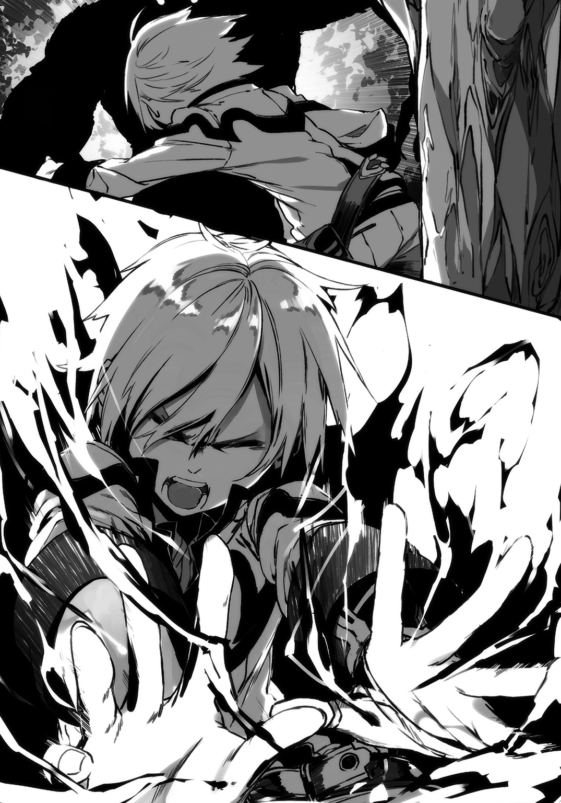

| 英雄世界の英雄譚（オリジナル） | |
| 空埜一樹 | |
この本は縦書きでレイアウトされています。
また、ご覧になる機種により、表示の差が認められることがあります。
 ダッシュエックス文庫DIGITAL
ダッシュエックス文庫DIGITAL
英雄世界の英雄譚
空埜一樹
第一章 始まりの震動
何かの夢を抱く者は、多い。
実現することを目指して走り続ける者もまた、多いだろう。
だが歳をとるごとに気付いてしまうことがある。
ひょっとして、自分は永遠にそこに辿り着けないのではないだろうかと――。
グレン゠カザカスもまた、その一人だった。
「【土槍】！」
宣言と共に出現した土の塊が、瞬く間に先を尖らせ向かってくる。
「ら、【雷壁】！」
グレンが手を翳すと、閃光が走り、目の前に黄金色の壁が出来上がった。空気の焦げる匂いが漂う。雷によって出来た盾だ。
しかし、土で出来た槍はいとも容易くそれを破り、容赦なくこちらを撃った。
全身に痛みが走り、思わずうめき声を上げる。先程作り上げた盾によって幾らか攻撃は弱まっているが、焼け石に水のようなものだ。グレンはたまらずに倒れ込んでしまった。
視線の先に青空が見える。起き上がろうとするが、指先一つさえまともに動かなかった。
「おいおい、大丈夫か？ グレン」
前方から声が聞こえてきた。心配しているように聞こえるが、その実、まるで感情がこもっていない。それどころか面白がっているようなフシさえあった。
「ひっ......！」
怯えた声を上げたグレンだったが、逃げる為に這うことすら出来ない。しばらくすると、顔を覗き込まれた。尖った顎に鋭い目、乱雑に切った髪を搔き上げて、その男――ジーク゠ティナーは口端を歪める。
「まさか喰らっちまうとはな。魔力は相当弱めてたはずだぜ。何せこいつは、訓練だからなぁ」
噓だ。いや、魔力を弱めていたというのは本当だろう。だが、初めからこちらに当てるつもりで放ったのだ。
ジークは分かっているはずだった。グレンが自分に比べれば、本当に笑えるくらいに低い魔力しか有していないことを。それこそ、彼にとって最底辺の魔法が、余裕で通じてしまうほどに。
「勘弁してやって下さいよ、ジークさん。これじゃイジメに見えちゃいますよ」
背後から別の声がする。ジークの仲間――いや、彼に従う子分たちといった方がいいだろう――が発したものだ。
「ま、それもそうか。悪かったな、グレン」
ジークは変わらない嫌味な笑みを顔に貼り付けたままで言った。
「何せお前は、階級すら与えられない『無印』の落ちこぼれ魔法使いだからな」
途端に沸き起こる笑い声。からかい。罵倒。
グレンは何も返せなかった。全てその通りだったからだ。
「あのよぉ、グレン。こいつはお前の為を思っての忠告なんだけどよ」
しゃがみこむと、ジークはこちらを見下ろしながら、
「お前、もう魔法使い辞めろよ。見苦しいんだよ。同じ村出身の幼馴染として、恥ずかしいわ」
「......そ、そんな。でも、オレだって......」
「オレだって？ なんだよ？」
やりたいことがあるんだ。そう言いたかった。だが、言えなかった。
ジークの目に見つめられると、喉に物を突っ込まれたように、言葉が出なくなる。
「な、なんでもないよ......」
ようやく声を出せたが、口元が痙攣するように震えた。更には無理やりの笑みを浮かべる。相手を怒らせないよういつの間にか身についてしまった、卑屈な処世術だ。
「ま、続けるのは自由だけどよ。お前がいつまでもそのままだと、俺の『訓練』は永遠に終わらないからな」
感覚が戻り始めた体に、強烈な衝撃が走った。ジークが蹴りを放ったのだ。
抵抗することすら出来ずに転がるグレンを見て、また、嘲りの声が上がった。
ジーク達は倒れたままのこちらに飽きたのか、しばらくするといなくなる。
ようやく動けるようになったグレンは、体を起こすと、ため息をついた。
「......落ちこぼれ魔法使い、か」
改めて自分の口から出た言葉が、胸を突き刺す。
グレンは頭を振って、立ち上がった。
いつまでも落ち込んでいても始まらない。こういう時は気分を切り替えるべきだ。
未だふらつく足取りのままで、グレンは歩き出した。
聖リディア王国。周辺諸国を支配下に置く、大陸の中でも随一を誇る巨大国家である。
その人口は数百万の規模を誇り、世界経済の中枢を担うところでもあった。
その証拠に、グレンが住んでいる首都には高い建物が並び立っており、整備された道路には、最新鋭の自動魔導力車が走っている。
魔力――古来より人体に宿る不可思議なエネルギーは、意識を集中することで体外に放出、様々な現象に転化させることが出来た。
魔導力車はもちろん、街灯や冷蔵庫やコンロ、ラジオ等も全てが魔力を応用して使えるように作られていた。
しかし魔力の扱い方として一番に挙げるとすれば、やはり『魔法』だろう。
訓練を受けるだけで、あらゆる自然現象を誰でも自在に使いこなすことが出来るのだ。
魔法を使う者、即ち魔法使いは聖リディア王国だけでなく、世界全ての国家にとって重要な兵力となっていた。
「現実は、厳しいよなあ......」
聖リディアの中心にある広場で、グレンは独りごちる。
見上げた先には、三つの銅像が飾られていた。
一つは女性を象ったもの。見目麗しい様には隠しきれない気品が漂い、見ているだけで魂が抜かれてしまいそうなほどの魅力に溢れている。
一つは、男性だ。凜々しい顔に体格の良い体は威風堂々とした態度を表しており、その目は何処までも真っ直ぐ彼方を見つめていた。そしてもう一つ、傍らには、幼い少女を思わせる別の像が寄り添っている。
「グレンー！」
ぼんやりとしながら三つの銅像を見つめていたグレンは、聞き覚えのある声に振り返った。
遠くから手を振って駆け寄ってくる人物がいる。ふわふわした髪を持つ少女だ。丸く大きな目が特徴的な、可愛らしい顔立ちをしていた。
「ああ、シエル......」
手を上げると、近くまで来た少女、シエル゠ハイナートは笑みを浮かべる。
「朝から城で姿を見かけなかったから、探してたんだよ。中庭で演習あったのに、参加しなかったの？」
「しなかったんじゃなくて、できなかったんだよ」
グレンは頭を搔いた。
「無印は必要ないし、邪魔になるから来るなってジークに言われてさ」
「え、なにそれ。......って、あ、どうしたの、怪我してるよ！」
顔に手を伸ばされて、グレンは反射的にそれをかわす。
「なんでもないよ。別に大したことない」
「......またジークにやられたの？」
「いや、別に――」
「やられたんだね？」
シエルの口調に強さが込められた。こちらに向けてくる眼差しから、誤魔化すことは許さないという彼女の意志を感じる。
「......うん、まあ」
「あいつは本当に......！ わたし、ちょっと言ってくるから！」
「いいよ、そんなことしなくて」グレンは駆け出そうとするシエルの手を摑まえた。「演習に参加しない代わりに、訓練の相手してくれてたんだから」
「なにが訓練なの！ ただグレンを一方的に痛めつけてるだけじゃない！」
シエルは眉を吊り上げて、我がことのように怒る。
「昔からそうだよ。ジークはグレンのことばっかり目の仇にして......！」
「仕方ないよ。ジークは強いから、弱いオレが気に入らないんだろ」
グレンは自嘲気味に笑った。そう、どうしようもないことなのだ。才能のある人間からすれば、自分など我慢ならないほどの愚図に見えるだろう。
「そんなの、グレンのせいじゃないよ。魔力の高い低いなんて、生まれつきなんだから」
「......まあね」
グレンは苦笑するしかなかった。
魔力は人によって強さが違う。
単純に強ければ強いほど強力な魔法を使え、弱ければ弱いほどに威力も低くなる。
魔法使いは国に仕える兵士だ。現在では大きな戦争は起こっていないが、有事の際には国家の為に戦うことになる。
そうでなくても国内の治安維持に活動することもあるのだから、有能な者が優遇されるのは当然なことだ。
逆に言えば、そうでない者の扱いは推して知るべし、ということである。
「でもさ、オレが国にとって役立たずなのは事実だよ。ジークは『銀』の魔法使い。シエルだって『鋼』だ。それなのにオレは称号さえ与えられていない」
言ってグレンは、自身の右腕に嵌められた器具を触った。
丁度、昔の騎士がつけていた手甲にも似ている。手首の部分には半透明のガラスが嵌め込まれていて、内部には複数の鉱石が金属の筒によって繫がれていた。
『魔導器』と呼ばれる道具であり、グレンをはじめとした全ての魔法使いはこれがあるおかげで魔法を使うことが出来ていた。
だが全ての人間が同じ強さの魔法を使えるわけではなく、魔法使いにはその能力によって階級がある。それぞれ一番上から『白銀、金、銀、鋼、銅』だ。
『金』にもなれば魔法使い達で編成された部隊の隊長を任せられるようになる。ジークの『銀』はあと一歩というところで、十七歳という年齢を考えればありえないほどの待遇だった。それほど彼の力は優れているのだ。
変わってグレンの『無印』とは正規採用ではなく、人手が足りないなどの事情が無い限り基本的に魔法使いとしての仕事は与えられない。
第一線に出なくて済む代わりに、まるで使い走りのように雑用を言いつけられる上、給料も相当に低かった。加えて、周囲から無能扱いされ、侮られる環境に耐えなければならない。
はっきり言えば、無印に魔法使いを続ける意味はなかった。
烙印を押された魔法使いの多くが採用を辞退するか、もしくは働き出して間もなく辞職を願い出ているのがその証拠である。
「それなのにオレはまだ魔法使いって仕事にしがみついてるんだから、ジークからすればいい加減にしろって思うのも無理はないよ」
「だからって、度々グレンにこんなことして、許せないよ！」
本気で自分の為に憤ってくれているシエルを、グレンは有難く思った。もう一人の幼馴染である彼女がいるからこそ、まだ自分はぎりぎりのところで現状に耐えられているのかもしれない。
「いいんだ。オレは魔法使いでいられれば、それで」
そうであるからこそ、今自分が生きている意味があるのだ。
「......まったく。相変わらずなんだから」
腰に手を当てて、不満そうにこちらを見ていたが、やがてシエルは諦めたように首を横に振った。
「それにしても、あなた、この場所が好きだね。しょっちゅういるじゃない」
シエルはグレンと同じ方を向いて告げる。
「うん、好きだね。オレの原点だから」
どんなことがあっても、ここにくれば、また頑張ろうと思えた。
正確には広場ではなく、この三体の銅像があるところに限定されるのだが。
「初代女王リディアリス様と【白銀の英雄】かぁ......。わたしはリディアリス様が好きだけど、グレンは白銀の英雄の方なんだよね？」
「リディアリス様も好きだけどね。やっぱり白銀の英雄だよ」
グレンは懐から一冊の本を取り出した。題名には『リディア王国建国記』とある。
「出た！ グレンの愛読書！ 昔からいっつも持ち歩いてるよね」
「オレにとって世界で一番大切な本だからね」
「あんまり読み過ぎるんで隠したことあったわ」
「あの時は本気で泣いたよ......」
村中を叫びながら探し回ったので、何事かと随分な騒ぎになった。
「ごめん、ごめん。でもさ、グレンにこんなこと言うのもなんだけど、白銀の英雄って本当にいたのかな？」
「ん、どういうこと？」
「いや、確かにその本には存在が書かれてるけど、いたっていう具体的な証拠は何もないわけじゃない？ そもそも名前すら分からないわけだし......専門家の間では、複数の人間が諸々の問題を押し付ける為に作り上げた、架空の英雄って説もあるくらいだよ」
「確かにそういう見方をしてる人もいる。だけど、それはちょっと極論過ぎるよ。実際に聖リディア王国が建国される前に起きた様々な事件の背景には白銀の英雄が拘わっているし、彼に関しての証言も多くある。その中には政治的に関係のない、無辜の人間による証言もあるんだ。それにオレから言わせれば具体的な証拠がないっていうことの方が不可解なんだよね。ここまでの実在が証明されている以上、なくちゃいけないのに、存在していない。つまりそこには白銀の英雄に対しての何らかの権力的配慮が行われた結果であって、実際に『リディア王国建国記』にはそれを思わせる記述が――」
「あ、ああ、うん、分かった、分かったから。熱くならないで。わたしが悪かったよ」
早口で喋りながら本のページをめくっていたグレンを、シエルが慌てたように止めてきた。
「本当に、普段は大人しいのに、白銀の英雄に関係することだとグレンは人が変わるよね」
「......ごめん、つい」
我に返り、悪い癖だと思いながら、グレンは頭を搔く。
だが、白銀の英雄はいるはずだ。そうでないとならない。
何せ彼は――自分にとっての、夢そのものなのだから。
リディアリス女王は、今から遡ることおよそ百年前に、聖リディア王国を建国した人物だ。
後の世に【聖女】と謳われるほど美しく、聡明で、気品と慈愛に満ちた女性だったらしい。
そして、そんな彼女の傍らには常にある人物がいた。
【白銀の英雄】と呼ばれる男であり、リディアリスに仕え、強大な魔力を武器に彼女の相棒として活躍した魔法使いだ。
ただ、その存在は多くの謎に包まれており、彼が何者なのか、どこから来てどこへ消えたかすら分かってはいない。
グレンの持っている『リディア王国建国記』はリディアリスが聖リディア王国の成り立ちを書いたものだが、その中でも白銀の英雄についてはほとんど触れられていなかった。無論、彼女自身の口から語られたこともないらしい。
唯一判明しているのは、英雄の二つ名の由来ともなっている『髪の色が見事な白銀色だった』ということだけ。この銅像の姿もほぼ想像で出来ているらしい。
だが彼の英雄譚は数多くの本で書かれ、その人気は凄まじく、未だに白銀の英雄のようになりたくて魔法使いを目指す者は多かった。かくいうグレンもまたそうだ。
だが自分は他の人と少し違い、彼に運命的なものを感じたのが憧れるきっかけだった。
「グレンも英雄と同じ髪の色だったから、魔法使いになろうと思ったんだものね。そりゃ、いてくれなくちゃ困るよ」
少しからかうような物言いで、シエルが微笑む。グレンは自身の前髪をつまんで頷いた。煌めく色に、太陽の光が通る。
「そうだよ。白銀の英雄は絶対にいる。オレはいつか、彼みたいな魔法使いになりたいんだ」
子供の頃、初めて白銀の英雄についての絵本を読んだ頃からの目標だった。
「......まあ、今のオレじゃ、望み薄だけどね」
何せ白銀の英雄とは程遠い、最底辺の魔法使いだ。彼の足元どころか、地中に埋まってもまだ及ばない。
「ダメだよ、そんな弱気になっちゃ！」
シエルがこちらの背中を叩いてきた。想いのほか、強い力だったので、グレンは咽せる。
「白銀の英雄が残した有名な言葉があるよね？」
「え？ あ、ああ、うん」
「なんだっけ。正しい者だけが英雄になる、だっけ？」
グレンは首を横に振った。
「違うよ。『真の正しさを持つ者だけが英雄になる』――だ。敵を前にして、白銀の英雄が言ったことらしい」
建国記にも載っているが、それを意味するところは作中で語られてはいない。
「『詳細をここで記すのは簡単です。しかし私はあえてそれを書こうとは思いません。人から与えられる答えに意味はないと思うからです。これを読んだ各人が考え、自分なりに生み出したものこそが真実となりえることでしょう』。そう、リディアリス様は言ってる。白銀の英雄の中でも特に意味深で興味深い言葉だし、何より、格好良いよね！ だからオレも大好きなんだ」
「そうそう。それだよ、グレン。英雄になるには魔法が使えなきゃダメだ、なんて英雄本人は言ってないわけだよね？ だから、魔力が低くてもやりようはあるよ。要はグレンの諦めないことが肝心ってこと！ 頑張ってよ！」
「......う、うん、そうだね。やってみるよ」
幼馴染の励ましに元気づけられて、グレンは口元を緩めた。
「その意気、その意気！ わたしもリディアリス様のように素晴らしい女性になるよう、日々努力を重ねてるんだから」
「それはちょっと難しいんじゃ......」
「あぁ？」
「なんでもないです」
シエルは基本的に愛嬌のある女の子だが、たまに恐い。
「......そういえばさ、こっちがリディアリス様で、こっちが白銀の英雄なのはいいとして。英雄様の隣にいるのは誰だっけ？」
「ああ、神魔だよ」
「じんま？」
首を傾げたシエルに、グレンは説明した。
「尋常じゃない魔力の持ち主が魔法を使おうとするとね、放出された力が形を持って意志を宿すことがあるんだって。それを神魔っていうんだ」
「あ......そっか。そっか。思い出した。前に何かの本で読んだな」
「と言ってもほとんど前例がなくて、リディア王国でも白銀の英雄以外は確認されてないはずだ――」
よ、と言って締めくくろうとした瞬間だった。
突如として、地面が揺れる。
「あ......あれ？」
眩暈かと思ったグレンだったが、隣のシエルもまた動揺したように周囲を見回していた。
「な、なにこれ。地震？」
「みたいだ。しかもかなり大きい！」
とてもではないが立っていられない。シエルがふらついて尻もちをついた。
と――そこに、大きな影が迫った。
銅像だ。地面に亀裂が走り、傾いた二つの像がゆっくりとシエルに向かって倒れ掛かっていく。
「シエル！ 危ない！」
地面を蹴ると、グレンは幼馴染を突き飛ばした。代わりに自分が転んで仰向けになる。
「グレン――ッ！」
シエルの叫び声が鼓膜を揺さぶった。グレンの目の前に銅像が迫ってくる。どう考えても避けられなかった。
（噓だろ、こんなところで......ッ！）
死んでしまうのか。
巨大な化け物が唸りを上げるような地響きが聞こえてくる中、グレンは無駄だと分かりながら、咄嗟に腕で自分の身を庇った。
直後、銅像がこちらに覆い被さってきて――。
視界が、闇に閉ざされた。
鳥の声が聞こえてくる。穏やかな風が体を撫でていった。
ああ、自分はやはり命を落としたのだ。ここはきっと死に逝く者が辿り着くとされる冥界と呼ばれる場所なのだろう。
グレンは絶望しながら、ゆっくりと目を見開いた。
緑一色の景色がある。
しばらくして、ようやくそれが、生い茂った木々であることを悟った。
上体を起こして周囲の状況を確認する。
体の下は地面だ。草が生えている。
陽の日差しがそこかしこに光を落とし、薄闇に満ちた空間を少しでも照らそうとしていた。
「森......？」
間違いなく、そうだ。ここは森だ。
「......どういうことだろう。さっきまで王都にいたはずなのに」
眉間を押さえて、意識を失うまでのことを思い出そうとした。だが、どう記憶の棚を引っ搔き回しても、銅像が倒れてきたところまでのものしかない。
あれから誰かにここに運ばれたということだろうか。しかし何の為にだろう。
いや、そもそも、ここは一体どこなのだ。
グレンは立ち上がった。自分の体を見下ろすと、右腕にはしっかりと魔導器がつけられている。少しだけほっとした。
「すみません。こちら、グレン゠カザカスです。どなたか応答願います」
手首辺りに向かって呼びかけた。魔導器は通信機能も兼ね備えており、魔力を使って遠方と連絡を取り合うことが出来る。周波はリディア王都の魔法隊――魔法使いによって構成された国家所属の組織――の本部に合わせてあった。
が、返答はない。それどころか通信自体が機能していないようだった。
「おかしいな......故障したのかな」
魔導器に目を近付けてみたり、振ったりしてみたが、素人の自分にはさっぱり見当がつかない。
（場所も分からない、連絡も取れない......もしかして割と今、とんでもない状況？）
気付いた途端に、凄まじく不安になってきた。グレンは背筋を冷や汗が伝うのを感じながら、落ち着け、と自分に言い聞かせた。
（そ、そうだ。気分を鎮めるために『リディア王国建国記』を読もう......！）
お気に入りの本さえあれば、どうにか冷静になれるはずだ。懐に手を入れ、その存在を確かめようとした。......が。
「あ、あれ？ あれ......あれ!? ない!?」
どこをどう探してもない。上着を脱いではたいてみたが、落ちてくる気配すらなかった。
「う、噓だろ。失くしたのか!?」
大切なものだったのに。地震の衝撃でどこかにいってしまったのだろうか。
「あ、あああああ......そんな」
絶望的な気持ちになって、グレンは膝をついた。内容は全て頭に入っているとはいえど、自分にとっての守護神を失ってしまったかのような気持ちである。
しばらく放心状態になったままで、時が過ぎた。
「......いや。でも、いつまでもこうしてはいられない」
じっとしていたところで、事態が改善しないのであれば、とりあえず前に進むべきだろう。仕方がないので、グレンは人里に出るまで森を進むことにした。
周囲は時折わずかな物音と動物の声が聞こえてくる以外は、不気味なほどに静まり返っている。
いささかぞっとするものを感じながら、しばらく歩いていたその時だった。
「......なんだろう？」
離れた場所から何か音が聞こえてくる。獣が出す鳴き声などではないようだ。まるで爆発するような響きがあった。
もしかすれば誰かいるのかもしれない。グレンは足先を変えてそちらに向かった。
音は徐々に近づいてくる。発生源との距離が縮まっているようだ。
しばらくすると、不意に、眼の前が開けた。
と同時に――目の前を火球が通り過ぎていく。
それはある地点に着地すると、爆発、火柱を上げた。
「ひぃっ!?」
驚いて、グレンは咄嗟に、傍にあった木陰に身を隠す。
開拓されたらしい不自然に広い場所には何軒かの家屋があった。村とはいえないまでも何人かで暮らしていたのだろうか。
しかしそこは今、正しく戦場と呼ぶにふさわしい空間になり果てていた。
火や雷や土、風や水流が息つく間もなく飛び交い、大地を抉り、木々を焼き、薙ぎ倒していく。
それらを繰り出しているのは、いずれも人間だ。彼らは次々に掌から様々な自然現象を生みだしていた。
（魔法......!?）
間違いなくそうだ。しかし一体どういうことだろうか。
魔法と魔導器には大雑把にいって二つの種類がある。戦闘用と一般用だ。
一般用は魔力によって動かす機械や車に使うもの。戦闘用はグレンのように武器として扱うものだ。
だが現在、戦闘用魔法は治安維持や特別な理由がある場合を除いて、その使用を禁じられている。
それを破ればグレンがつけている魔法使い用の魔導器――戦闘用魔法を使う為に開発された、一般用より大きなもの――を没収され、解雇される規則になっていた。
（魔法使い同士の演習......？）
そういうことであれば、戦うことは許される。ジークがグレンに対して魔法を使うのを『訓練』と称していたのはその為だ。
しかし、どうやら違うようだった。
ここには二種類の人間がいた。暗色のローブを着用している者と、そうでない者だ。
魔法を使っているのは前者のみである。後者は剣や弓、槍などの武器を手にしているものの、全員が肉弾戦で挑んでいる。
（どういうことだ。魔法使いが一般人を襲っている......？）
ありえないことであるし、許されないことでもある。
聖リディア王国においてその行為は極刑に値すると、初代女王の頃から決められていた。
（しかもあいつら、魔導器をつけてない）
遠目ではあるが、ローブの集団はいずれも腕に何も見当たらないのが確認できた。
（魔導器無しで魔法を使う......全くありえないことじゃないけど......）
いずれにしろ、何が起こっているのかさっぱり見当がつかない。
グレンは頭が混乱してくるのを感じながら、眼前で展開されている出来事を、ただ見つめていた。
直後、一人の魔法使いが火の魔法を繰り出す。それは槍のように尖りながら、ある一点に向けて走った。
辿り着く先にいるのは少女だ。自分と同じ歳程度だろうか。足が竦んでしまったのか動けていない。顔は恐怖で真っ青になっていた。
「あ、ああ、ま、まずい！ どうしよう！」
頭を抱える。このままでは彼女は最悪、命を落としてしまう。ただ、助けにいくと自分がこの騒動に巻き込まれてしまう恐れがあった。そう思うと足が動かない。
（で、でも、オ、オレも魔法使いなんだ。魔法使いが一般人を攻撃しているのを見過ごすわけにも......！）
グレンは逃げ出そうとする自分と葛藤し、その結果、
「ああ、もうっ！」
どうにでもなれ、という気分で飛び出した。
突然の乱入者に全員が硬直する。しかしそれには構わず駆け抜けると、グレンは少女を抱き締めると、すぐさま横に飛んだ。
すぐ後ろを灼熱の塊が走る。髪が焦げて嫌な臭いを立てた。正しく間一髪だ。
「......あ、あ、危なかった！ き、君、大丈夫？」
心臓がばくばくと鐘打つのを感じながら、少女に呼びかけた。彼女は驚いたように目を丸くしながらも、ゆっくり頷く。
よく見れば、小柄で線の細い可愛らしい子だ。思わず守ってあげたくなるような雰囲気がある。
「なんだ貴様は。こいつらの仲間か！」
背後から声がかかり、グレンは振り返った。
「た、ただの通りすがりです。でも、どういうことですか。魔法使いがそうでない者を一方的に、それも魔法で攻撃するなんて。こ、この人たちが何をしたにしろ、違法行為ですよ！」
言えた。なんとか言えた。自分を褒めてやりたい、とグレンは胸を撫で下ろす。
「......なんだと？」
と、ローブ姿の者達が、怪訝な顔を見せた。中の一人が鼻を鳴らす。
「何を言っている。我々が行っているのは駆除だ。国にも認められている」
「駆除......？」
「そうだ。国を這い回る鼠共を残さず駆逐せよとの命を受けているのだよ。その為に一番効率の良い方法を使って何が悪い」
「そんな......噓でしょ」
ありえない。聖リディア王国のみならず、どの国でもそんなことが行われるはずがない。
「そこをどけ。で、なければ貴様も鼠として処分するぞ」
せせら笑うローブの集団は、言って手を翳した。
中空にあらゆる現象が巻き起こり、一斉にこちらに向かって牙を剝く。
「うわっ!? ちょ、ちょっと待って下さい。話し合いをしましょうよ、話し合いを！」
グレンは腰が引けた状態で制止するように手を振ったが、相手はまるで聞く耳をもってくれなかった。
「ほざけ。汚らしい溝鼠と会話など出来るか」
あくまでも殺意を剝き出しにし、魔法を発動する。無数の自然現象が、群れを成してこちらに襲い掛かってきた。
「ひぃっ！ あ、ああ、もう！」
なんだか良く分からないが、ここまで来たら、退くわけにもいかなかった。
正直言えば何もかも放り投げて遠くへ走り出したい気分だが、後ろにいる少女を見るとそれも出来ない。
グレンは、魔導器を装着した手を向ける。
「【雷壁】ッ！」
ジークに使ったのと同じ、黄金色の壁が作り上げられた。
しかし複数の魔法が衝突すると、それはあっという間に砕け散る。
グレンは少女を抱いたまま、急いで下がった。
威力が軽減されたのか、地面に当たった魔法はそれほど範囲を広げることなく消滅する。
（ああ、でも、やっぱりオレの魔力だけじゃダメか......）
相手があまりに多過ぎた。ここは襲われている人たちに呼びかけて逃げるべきだろう。
そう算段し、グレンが声を上げようとしたところで、
「......おい、どういうことだ」
何故かローブの集団はざわめき始めた。魔法も使わずに顔を見合わせる。
「今のは魔法だぞ。ということは、奴は魔法使いなのか？」
「馬鹿な。なぜ魔法使いが非魔力を庇うような真似をする」
「そうだ。ありえるわけがない！」
「だが現に今、奴は魔法を使った！ どうする!?」
「想定外だな......くそ」
グレンとしては彼等が何に困惑しているのかまるで理解できなかった。
しかし訝しげに思っているうちに、先頭に立っていたローブの男が手を上げる。
「一旦立て直すぞ――撤収だ！」
他の全員も異論はないらしく、それぞれに頷くと、悔しげにこの場から立ち去っていった。
「......なんなんだ？」
まるでこちらが魔法使いであること、その上、一般人を守ったことに驚いているようだった。
ただ、とにかく、状況は解決できたようだ。グレンは胸を撫で下ろした。
「何とかなりましたね。皆さん、お怪我はありませんか――」
振り返って様子を確かめようとしたグレンだったが、
「ハアッ！」
突然、後頭部に衝撃と痛みを感じた。
「......へ？」
全く予想のつかない結果が訪れたことに、間の抜けた声を漏らしたその後で。
グレンは再び意識を失った。
鈍い頭痛と共に、少しずつ五感がはっきりとしてくる。
グレンが目を開けると、自分が床に座らされていることを知った。
場所は森ではなく、どこかの家の中だ。
室内には何人かの男女がいて、こちらをじっと見つめている。
どう考えてもその眼差しには、友好的なものが感じられなかった。
「あ......良かった。目が覚めたんですね。大丈夫ですか......？」
唯一心配してくれたのが、傍らにいた少女だ。記憶が混濁しているのか最初は分からなかったが、すぐにあの時助けた人物であると気付いた。
「大丈夫......だと思うけど」
答えながらグレンは顔をしかめる。ずきりと後頭部の辺りが痛みを訴えた。心なしか熱を持っている気がする。コブが出来ているのかもしれない。
「いささかやりすぎでしたかな。下手をすれば死んでいたかもしれません」
そばにいた男性が口を開いた。年齢は六十歳程度だろうか。後ろで短くまとめた髪にはわずかに白が混じっており、その顔には年齢にふさわしい程度の皺が刻まれている。ただし作りそのものは端整なので、若い頃は大層、異性に人気があったことだろう。
胸と肘、膝に革製の防具をつけているところを見ると、戦闘の心得があるのだろうか。
「そうですね。判断のしようがなかったとはいえ、少々手荒い真似をしてしまったかもしれません」
答えたのは中央にいた女性だ。彼女は恐らく、自分と同じ歳程度だろう。
と、いうことはともかく――。
「............」
グレンは思わず、少女に見惚れてしまった。
燃えるような赤い髪を腰の辺りまで長く垂らしている。胸が高く押し上げるほどに大きい割に腰が細く、足が長い。その上、切れ長の目に白磁のような肌を持つ、驚くほどに整った顔立ちをしていた。
あまりにも、現実離れした美貌の持ち主である。
加えて服装自体はややみすぼらしいが、それでも尚、不思議なほどに、どこか気品溢れる雰囲気を漂わせていた。
（......あ、あれ？ この人、どこかで見たような）
ぼうっとなっていたグレンはふと我に返って、そんなことを思った。しかし、具体的に思い出すことは出来ない。
「素性も知らねえ怪しい奴だったんだ。あれぐらいやった方がいいんすよ」
と、女性の言葉を受けて肩を竦めたのは男。年齢は十七、八程度だろうか。ぼさぼさの髪が目を隠してしまっている。ひょろりとした体つきで腕も足も棒のように細いので、案山子のようだった。
「ロッティ、そういう言い方はよくありません。私達を助けて下さったのですから」
「......まあ、そうっすね」
ロッティと呼ばれた男は、女性の言葉に頭を搔く。
「それよりも――私はこの方と少し話をしてみます。皆さんは外で休憩なさっていて下さい」
女性は振り返って、周りにいた人々に話しかけた。
「しかしお嬢様、この男が何をするか分かりませんよ。人は多い方がいいのでは？」
うちの一人が問い掛けると、女性は全員ににこりと笑いかける。見ている者が惚けてしまうほどに魅力的な表情だった。
「先程も言いましたが、彼が私達の敵を退けて下さったことに変わりはありません。あまり警戒し過ぎるのも無礼に当たるでしょう」
「それは、そうかもしれませんが......」
「信頼関係を築くのであれば、まずは私達からそれを示すべきです。私はこの方が善なる者であると信じますよ」
食い下がっていた者達は、女性のその言葉で、顔を見合わせる。
「安心しろ。私達が残る。何かあれば対処しよう」
次いで、初老の男が告げると、
「......オウルさんがそう仰るなら」
納得したように頷き合って、彼等は小屋から出ていった。やがて、場には赤髪の女性とグレンが助けた少女、それにオウルという名を持つらしき男と、ロッティだけが残る。
「さて、人払いは済みましたな」
オウルが呟いて、改めてこちらに向き直った。
「......あのー。状況がよく摑めないんですが」
グレンは身動きをとろうとして、あることに気付く。両手が後ろに回され、更には縄できつく縛られていた。いや、手だけではない。足もだ。
「オレはなぜ、こんな目に遭っているんでしょうか......？」
おかしい。自分は確か、横にいる少女を助けたはずだ。別に礼を求めているわけではないが、本来なら感謝されて然るべきではないだろうか。
「あなたに質問があります」
「へ？」
女性が近付いてきて、こちらを見下ろした。
「どうしてうちのターニャを助けたのですか？」
ターニャ、とは、恐らく自分を心配そうに見守る少女のことだろう。
「どうしてって。別に理由なんかありませんが......」
「理由もなく、人を助ける為に飛び出したということでしょうか」
「ええ、まあ」
「そうですか。随分と、正義感が強いのですね」
女性が微笑みかけてくる。まるで絵画に描かれる女神のようだ。グレンは自分の心臓が激しく高鳴るのを感じた。
「いや、そ、そういうわけでもありませんが......目の前で困っていたら、誰だってああすると思います」
美女に褒められ、グレンが照れくさい気持ちで答えると、彼女は更に笑みを深める。
「そう、誰だって、ですか。素晴らしい考え方ですね。フフフ」
「は、はあ。あ、あはははは」
「フフフフフフフ」
「あはははははは」
「――んなわけないでしょうがこのど間抜けがァッ！」
グレンの真横を風が駆け抜けた直後、どごんっ、という凄まじい音がした。
女性の繰り出した蹴りが後ろの壁を打ち破ったのだ。
「ええええええええええええっ!?」
一体何が起こったのか全く理解できなかった。目の前の美女が突如として豹変した気がするも、多分、気のせいに違いない。そうに決まっている。だってありえない。先ほどの神聖さすら醸し出していた人物が、今では屈強な男ですら震え上がりそうなほどの迫力を迸らせているだなんて、到底信じたくはなかった。
「とっとと白状しなさいこの悪党！ 目的は何!? うちの内部崩壊でも狙ってんの!? それとも情報収集の為!?」
「うひいいいいいいいいいいいい！」
が、どうやらこれは間違いなく現実のようだ。訳が分からずにグレンは慌てて答えた。
「なななななな何のことですか知りませんというか一体何がどうなってるんですかこれ!?」
なぜ自分がいきなり捕まって縛られてあまつさえ同じ歳程度の女性に、尋問めいた真似をされなければならないのだろうか。
「と、と、というかあなた、さっきと全く性格変わってませんか!?」
「んな些細なことはどうでもいいのよ、このドグサレがぁッ！」
「ぜ、全然些細なことじゃないですううううう！」
グレンは悲痛な声を上げた。どこからどう見ても、先程と同一人物であるとは思えない。寧ろ真逆だ。恐怖を感じるほどに正反対だった。
「フン。あくまでとぼけるってわけね......なかなか良い度胸してるじゃない」
壁から足を離し、女性が気品さの欠片もなく、不敵に笑った。
「大体、なによ、その変な服は。見たことないわ。あなた、どこの国の人間？」
「変な服って......こ、これのことですか」
グレンは自分の体を見下ろす。今、自分は、リディア王国所属の魔法使いに与えられる制服を身に纏っていた。
「魔法使いなら誰でも着てると思いますが」
「噓つきなさいよ。魔法使いは皆、趣味の悪いローブ姿なのよ？」
なにを言っているんだと思ったところで、グレンは頭の中を過ぎるものがあるのを知った。
「そういえば随分と前はそうだったと聞いたな......。で、でも、それを言うならあなたの服装だってそうじゃないですか」
「あたしの服がなんだっていうのよ」
「かなり古臭い作りをしてますよね。今時、そんな時代錯誤な服、誰も着ませんよ」
「......ほほう。随分と遠回しな悪口を叩くのね」
少女の口元がぴくぴくと動いた。感情が昂っているらしい。
「つまり、あたしの服を選ぶ感覚が鈍いって言いたいわけ？」
「そういうことじゃなくて、まるで博物館にでも飾ってあるような服だから――」
「もういいわよ！」
こちらの言葉をさえぎって、女性が続けた。
「大体、ふざけるのもいい加減にしなさいよ。魔法使いが人助け？ それとも非魔力のあたし達を？ んなことありえるわけないでしょうが」
「ど、どうしてありえないんですか！」
「あなた達魔法使いは、そうでないあたし達なんて全員、家畜か奴隷扱いじゃないの。死のうが生きようがどっちだっていいんでしょ。代わりなんていくらでもいるんだから」
「なんて恐ろしい考え方をする人なんだ......」
「あなた達のことでしょうがっ！」
どごんっ、ともう一発。今度は左の壁に穴が空いた。
「ど、どうでもいいですけどちょいちょい蹴るのやめて下さい！ 当たったらただじゃ済みませんよ、それ！」
「ただじゃ済まなくしてもこちらとしては一向に構わないんだけど？」
「えええええ、どうしてそういうことを平然と言えるんだこの人......」
どういう育て方されたらこんな風になってしまうのか、とグレンは慄いた。
「と、というか、ですね。魔法使いだからって別にそうじゃない人を下に見たりしませんよ。そんなもの、なりたければ誰だってなれるんだから」
「あぁ？」
滅茶苦茶怖い目つきで睨み付けられ、グレンは「ひっ！」と怯える。ついさっきまでいたはずの美人で上品な女性に帰ってきて欲しかった。
「なにそれ、魔法使いの間で流行ってる冗談？ 全く笑えないんだけど」
「へ？ え、でも、今の時代、誰だって訓練さえ受ければ魔法使いになれる......」
「なれないからこんな腐れた世界になってるんでしょうが！」
どごんっ！ どごんっ！ どごんっ！
猛烈な勢いで壁に穴が空いていく。
「怖い怖い怖い！ だ、だからそれやめて下さい！ というかどうやったら蹴りだけで壁を砕けるんですか！」
「すごく頑張ったのよ」
明快な回答だった。
「お嬢様、落ち着いて下さい。私にはどうも彼が噓を言っているようには見えないのですが」
見かねた様子で、それまで控えていたオウルが告げた。
「そう？ あたしは吹かしこいてるようにしか見えないけど」
「どの辺で判断してるんすか、それ」
「勘」
質問したロッティに対して女性は即答する。恐ろしいにも程がある。
「まあ、仮に彼が王国側からの間諜だとしても、ですね。つくならもっとマシな噓をつくとは思いませんか」
オウルが女性をとりなすようにして続けた。
「魔法使いが何の理由もなしに非魔力を助けるとか、下に見ていないとか。そんなもの、すぐにバレてしまうでしょう」
「......それもそうね」
顎に手を当てて、女性が考え込む。
「でも、あたし達がそう思うだろうということを見越して、あえてそうしているという可能性は？」
「あ、それがありましたな」
「ちょ、ちょっと！ そこで納得しないで下さい！」
味方に突然裏切られた気分で、グレンは叫んだ。
「あの......お嬢様。差し出がましい真似をするようですが......」
そこで、おずおずとターニャが手を上げた。
「ん、どうしたの。いいわよ、言ってみなさい」
「はい。先程、助けて頂いた時のことなのですが、こちらの男性に庇って頂かなければ、私は敵の魔法をまともに受けてしまっていました」
「それも作戦の内だったかもしれないわよ。こっちの信用を得る為のね」
「ええ......ですが、こちらの男性もまた、相当に危うい状況だったと思います。何かが少しでも違えば、私の代わりにこの方が命を落とされていたかもしれません」
「......そうなの？」
「はい。本当に、瀬戸際でした。ですので、お嬢様の仰る通りだとしても、非常に分の悪い賭けであったように思えるのですが......」
そうだったのか。今聞いて初めて、グレンはぞっとした。ほとんど反射的に動いていたのでそこまで考えていなかったのだ。
「......なんか、そこまで考えてなかったって顔してるわね」
いきなり女性から図星を突かれて、グレンは「はぐっ」と奇妙な声を出してしまう。
「そうなの。だとすれば、ちょっとおかしいわね。本当に向こうから送られてきた間諜だったら、もっと上手くやるはず」
女性は伏せていた視線をこちらへと向けてきた。
「あなた、本当に敵の刺客じゃないの？」
「だ、だから、そう言ってるじゃないですか......」
「でも、だったら、尚更に変よ。どうして魔法使いが非魔力の為に戦ったりなんかするのよ」
「あの、そ、そこが変なんですよ。オレからすれば、どうして魔法使いが一般人の為に戦っちゃいけないんですか」
「......どうにも、彼と我々の間にズレがあるようですな」
オウルが眉間に皺を寄せる。
「彼の言い分を聞いていると、まるで今の時代が魔法使いと我々の共存している社会であるかのようです」
「へ？ そ、そうじゃないんですか？」
「んなわけないでしょ。だったらあたし達なんて要らなくなるじゃない」
呆れたように、少女がため息をついた。
「あたし達が、何の為にオルニアスと戦ってると思ってるの？」
「......オルニアス、だって？」
何かの聞き間違いかと思い、グレンは問いかける。
「オルニアスって、あの、オルニアス？ オルニアス王国？」
「そうに決まってるでしょ。クソオルニアス以外に同じ名前をもつ別のものがあるなんて、あたしは聞いたことないけど」
「お嬢様、口が悪いですよ」
オウルがすかさず注意する。
「ああ、そうね。うんこオルニアスね」
「いや、そういうことではなく」
「排泄物王国？」
「もっと嫌な何かになりましたな......」
二人のやりとりを聞きながら、グレンは眉を顰めた。
「......いや、あの。ありえないと思うんですが」
「なにがよ。蹴るわよ」
「け、蹴らないで下さい。でも、その、オルニアスなんて国はもうありませんよ」
「オルニアスが、ない？」
「ええ。とっくの昔に滅びてしまったじゃないですか」
「......オルニアスが、滅びた？」
少女が目を見開いた。いや、彼女だけではない。その場にいた全員が信じられないものでも前にしたかのようにしてこちらを見る。
「え、ええ」どうしたのかと当惑しつつもグレンは続けた。「オルニアスは百年前に滅びましたよ。初代女王リディアリス様率いる『解放軍』によってね。その後に聖リディア王国が出来たんです」
子供向けの本にすら載っているほど、リディア王国では、いや、世界的に見ても常識的な歴史的事実だ。
「オルニアスがなくて......あるのが、聖リディア王国......」
「初代女王、リディアリス......」
少女とターニャが同時に呟いた。
直後――室内にけたたましい声がこだまする。
大人しいターニャを除く全員が、腹を抱えて笑っていた。
「おいおい、あんた、面白いこと言うっすね。近年聞いた中でも最高の冗談っすよ」
「確かにそうだな。なかなかにひょうきんな人物であるようだ」
「まあ、悪くないけどね。こっちとしては良い気分だわ」
ロッティ、オウル、女性から続けて言われて、グレンはきょとんとする。
「な、なんのことですか......？」
「そのリディア王国とやらの初代女王がリディアリスという名であったなら、貴君、なかなかに貴重な場面に立ち会っていることになる」
オウルに言われて、グレンが眉を顰めていると、彼は少女に向かって恭しく頭を下げた。
「かくも恐れ多い。ここにおわします方こそが聖リディア建国の立役者――リディアリス様であるぞ」
「......は？」
一体何を言っているのか。固まるグレンに女性は腰に手を当てた。
「あたしの名前はリディア。――リディアリス゠エアーナ゠クイスよ」
周囲の時間が停止したかと思った。
が、それは、自分自身の思考が完全に機能しなくなったのだ。
ということに、気付いて間もなく――。
「ええええええええええええええええっ!?」
グレンは生まれてから今まで出したことのない素っ頓狂な声を上げた。
「リ、リディ、リディアリス!? あなたが!?」
「そうよ」
いや、確かにそうだ。ようやくグレンは思い出した。地震が起こる前にシエルと見ていたリディアリス像と彼女はよく似ているのだ。ただ、あの銅像は女王の後年の姿を元に作られたものなので、まだ若いこの女性からではすぐに気付けなかった。
（で、でも、まさか......そんな......）
「そんな、バカな!?」
思わずグレンは口に出していた。
「なんで、バカな、なのよ」
「だ、だって、だって、リディア......リディアリス様は！ 聡明で！ 清楚で！ 気品と慈愛に溢れていて！ まるで女神のようで！ だから『聖女』って呼ばれてて！」
「全部当たってるじゃない」
「そんなわけないですよ!?」
「喧嘩売ってんなら買うわよ、コラ」
グレンはリディアに襟首を摑まれ、凄まじい力で持ち上げられる。
「いやああ！ ご、ごめんなさい！ で、でも、リディアリス様はこんなことしない！」
「するのよ、リディアリスは。だってあたしなんだから」
「う、噓ですよ！ いいですか、『リディア王国建国記』の発刊に当たって編集した人間はこう語っています！」
グレンは記憶の中にある文章をそらんじた。
「『リディアリス様は年齢にそぐわぬ知性と類まれなる美貌を持ち、それを鼻にかけぬ謙虚さと誠実さをも持ち合わせていた。その身から漂わせる空気は出会う者全てが自然と頭を垂らすほどに気高く、正しく神の化身と呼ぶに相応しい人物である』――って！」
「なかなか良い文章じゃない。どう考えてもあたしのことだわ」
「さっきまではそうでしたけど、い、今は全然違うじゃないですか！ それに第一、あ、あなた、オレと同じ歳くらいでしょう!? リディアリス様は百年前の人物だ！ 随分と前に亡くなってますよ！」
「うっせえわね。勝手に殺さないでよ。誰がなんと言おうとリディアリスはあたし。他にいないわ」
「......どういうことなんだ」
リディアから手を離され、床に腰を落としながら、グレンは必死に頭を働かせた。
（オルニアス王国が健在で、魔法使いによる一般人の差別が横行していて、しかも目の前の子がリディアリス様......？ これじゃ、まるで）
到底ありえない話だが。そうでなければ、説明がつかなかった。
（これじゃ、まるで――百年前に、戻ってしまったようじゃないか......！）
「何とも奇妙な話ですな。この少年の話を信じるなら、彼は遥か先の世界から来たようです」
オウルが興味深げな表情を作る。
「時間を転移してきたってこと？ そんな魔法、聞いたことないけど」
「いまいち胡散臭いっすよねえ。やっぱり何かの作戦なんじゃないっすか？」
リディアとロッティは、こちらの様子を観察しながら、言い合っていた。
「あの......あなた、お名前はなんと仰るんですか......？」
未だ現状を把握できないでいるグレンに、ターニャがしゃがみこんで、話しかけてくる。
「え？ あ、ああ。グレン゠カザカスって言います」
「そうですか......。グレン様、あなたの御事情は私どもには何やら難しくて分かりませんが、帰るところはあるのですか？」
「帰るところ......王都に魔法使い用の宿舎はありますけど......」
しかしその王都が、最早あるのかどうかすらも不明になっていた。
もしここが百年前の世界であるなら、恐らく、存在はしていまい。
「......そうか。オレ、宿無しになったのか」
時間を転移するなどよりも、そちらの方がよほど、現実的な危機感を覚えた。
「......あの、お嬢様」
ターニャは立ち上がり、ロッティやオウルと話し合っていたリディアに呼びかける。
「グレン様には行くところがないようです。助けて頂いた御恩もありますし、しばらくこちらでご面倒を見ることは出来ませんか......？」
「え、こいつを解放軍に入れるってこと？」
リディアは逡巡するような顔つきになった。
「でもねえ。魔法使いがいるってなると、色々と警戒する奴もいるだろうし......」
「ですが、困ってらっしゃいますし......」
じっとリディアを見つめるターニャ。なぜだろうか。何も言わないのに、彼女の眼差しには妙な迫力があった。
「......そうね。分かったわ。あなたがそこまで言うならうちに入れることにしましょう」
ため息交じりに言って、リディアはこちらを睨んでくる。
「ただし、面倒をかけたらすぐに放り出すわよ。たださえ、うちは最近色々あってピリピリしてるんだから」
「は、はあ。でも、オレ、どうすればいいんでしょう？」
どこに行って、何をすればいいのか。皆目見当もつかなかった。
「そんなモン、自分で考えなさいよ。他人にどうこう言われて生き方決めてたら、いざという時に何も出来なくなるわよ」
「......なるほど」
グレンは言葉を重く受け止めて、己のこれからを思索する。
（とにかくここにいつまでいても仕方ない。動かなきゃ状況も分からないままだ）
ここが本当に百年前の世界なのか、そうでないのか。
それもまた、行動していればいずれ分かってくることだろう。
今はリディア達に従っておくのが適当であるように思えた。
「分かりました。あなた達の仲間に加えて下さい。よろしくお願いします」
「そう。素直で宜しい。ま――あなたが何者かは置いておいて、魔法使いが戦力に加わるというのは僥倖だったわ」
リディアは髪を搔き上げて、微笑んだ。
「さて、そうと決まればいつまでもここにはいられないわね。オルニアスの魔法使いどもに場所が知られちゃったみたいだし。出発しましょう」
「御意。グレンのことも合わせて、皆に知らせてきます」
オウルが立ち上がって、リディアに深々と頭を下げた。
「説明が長くなりそうっすねえ」
頰を搔きながら、ロッティもまた家を出て行く。
「ああ、それと。仲間になったんだから、敬語は良いわ。歳も同じぐらいみたいだしね。オウルとターニャは幾ら言っても聞かないから、もう好きにさせてるけど」
「あ、はい......じゃなくて、う、うん。分かった」
グレンが言うと、リディアは軽く頷いた。
「それじゃ行くわよ、ターニャ」
踵を返し、リディアが歩き始める。
「あ、ま、待って！」
グレンは慌ててリディアを呼び止めた。
「......縄、解いてくれないかな？」
第二章 リディアリスという人間
【魔導器】があれば、訓練を受けることで、誰でも魔法を使うことが出来る。
しかしそれは逆を言えば、魔導器がなければ、限られた人間にしか魔法を扱えないということでもあった。
実際、百年前――つまりは初代女王リディアリスの時代がそうである。
当時、魔法はごく一部の人間だけのものだった。
故に魔法使いは特別な存在として認知されており、彼等は高い地位に置かれ、絶対的な支配権を有していたのだ。
そして、魔法使いによる非魔力、即ち魔法を使えぬ者達への差別的行為が平然と罷り通っていた。
非魔力は魔法使い達に従うだけの価値のない者。
今では考えられぬほどの酷い考え方が、その時代、常識となっていたのである。
（その現状を変えようと立ち上がったのが、リディアリス様......それに彼女の考えに賛同し、集まった『解放軍』）
彼等は『全ての者に平等であれ』という大義を掲げ、魔法使い達への報復活動や襲撃を繰り返していた。
結果的に、リディアリスは旧オルニアス王国を滅ぼし、今日に至る聖リディアを建国した。
しかし恐らく、初期の解放軍の活動では、リディアリスが革命を成し遂げることはなかっただろう。
彼等はある時、とてつもない武器を手に入れ、それを使うことで劇的に力を増したのだ。
「ふうん。で、それが、あなたのつけてる魔導器ってわけ」
リディアが首を傾げたので、グレンは首肯する。
グレンが今いるのは、目が覚めた森からしばらく進んだ先の草原だった。昼食を兼ねた小休止中で、そこかしこに人がいて、思い思いの姿で疲れを癒やしている。
あれからグレンはリディアから紹介され、一時的に解放軍へ所属することが決まった。
彼女の予想通り、魔法使いが加わることに反発する者は少なからずいたのだが――。
リディアが「私が全ての責任を持ちます」とはっきり言い放つと、途端に静まり返り、渋々といった様子であったが受け入れられた。それだけ彼女の影響力が大きいということだろう。
（オレと同い年なのに、すごい人だな......）
解放軍全ての人物から敬意を払われ、信頼を得ていることが、今までの道中でよく分かった。
規模としては数十人ほどといった小さなものだが、それでもこれだけの人を従えるというのは並大抵のことではないだろう。
ただ確かに、リディアは魔法を使うことが出来ないなどということが、どうでもよいと思えるほどに堂々としていて、威厳がある。集団の先頭に立つには相応しい人物と言えた。
（......まあ、それでも、文献に載ってるリディアリス様とは大違いなんだけど）
そこだけは納得がいかないままだ。
「なに不満そうな顔してんのよ」
気持ちが面に出ていたのか、リディアに頰を思い切りつねられた。
「ひへはい。なんでもふぁいふ」
「大体なに考えてたんだか分かるけど。で、その魔導器ってどういう仕組みになってるの？」
「ひえははひはひふは」
「ふんふん、なるほど。なに言ってるか分からないわ」
「......ひへはは」
頰を離して欲しい、と伝えると、リディアはようやく指を離してくれた。悪戯っ子そうな顔で笑っているところを見ると、知っていてやったらしい。
「いたた......。魔導器のことを説明するなら、この時代に誤解されていたことをまず言わなきゃいけないんだけど」
「あくまでも未来人設定を貫くわけね」
「せ、設定って言わないでよ......」
「いいから、いいから。気にしないで続けて」
まったく、と思いながらグレンは話を再開させた。
「まずこの時代、魔力というものは限られた人間にのみ宿るものとされていたんだ」
「違うの？ だったら、どうして魔法を使える人と使えない人がいるのよ」
リディアは昼食用の干し肉を齧りながら訊いてくる。美人に似合わず、山賊のような乱暴な仕草だ。
「それは正確に言えば魔力は『初めから使える者とそうでない者がいる』ということだからなんだ。つまり、大多数の人は魔力を持っているけど使えない、体の中に眠っているような状態になっているということ」
「じゃあ、その眠っている状態の魔力を起こしてあげればいいわけ」
「うん。そして、それを実現するのがこの魔導器」
グレンは自分の腕にある道具を叩いた。
「魔導器の仕組みは簡単だよ。『魔鉱石』と呼ばれる特殊な鉱石を金属で繫いでいるだけ」
「まこうせき？」
「鉱石の一つなんだけどね。不思議な力を持っていて、人の体に触れるとその者がもっている魔力を覚醒させるんだ。一つ一つは小さくて意味をなさないけど、金属で連結させることで効果を発揮する」
「......では、その魔導器を使えば私でも魔法を使うことが出来るようになるということでしょうか？」
リディアに水を持ってきたターニャが興味深そうに尋ねてきた。
「もちろん。多少の訓練は必要だけど、誰にだって魔法を使うことが出来る。オレだって魔導器がなければ魔法は使えないんだ」
「ふうん。本当かしら。上手く騙そうとしてるんじゃないでしょうね」
疑いの眼差しを向けてくるリディア。
「そ、そこを突かれると辛いなぁ。オレには証明する手段がないよ。魔導器は悪用されない為に、装着登録した人間以外は使えないようになってるし」
正直に言うとリディアは口元を緩めた。
「冗談よ。ま、本当に噓をついてるならあたしにこう反論されることも想定しているでしょうしね。信じてあげましょう」
「助かるよ」
「だけどすごい道具ね。魔鉱石なんて聞いたこともないし。魔導器を発明した人はきっと天才ね」
「......自分で言うと恥ずかしくない？」
「へ？」
「魔鉱石を発見したのも、魔導器を開発したのも、リディア、君だよ」
指差すとリディアは面食らったような顔をした。自分が神の生まれ変わりとでも言われたような表情だ。
「発見も開発もしてないわよ、あたしは」
「まだね。でも後にそうなる」
「なんで分かるのよ」
「オレが百年後から来たから。ちゃんと歴史書にも書いてある」
魔導器の開発と量産に成功したからこそ、リディアリス率いる解放軍は大きな力を手に入れ、オルニアスを滅亡にまで追い込んだのだ。
「リディア王国建国記曰く。『魔鉱石という奇跡を手にしてからというもの、解放軍の活動は目覚ましいものがありました。オルニアスに対する圧倒的な勝利を手にすることが出来たのも、全ては石があってこそです。仮に世に運命と呼ばれるものがあるならば、正にあの瞬間、それはこちらの味方となったのでしょう』......だよ」
「あなた、この前も思ったけど。その......あたしが書いた建国記、だっけ。内容、全部覚えてるの？」
「もちろん。何百回も読み直したからね」
グレンは誇らしげに胸を張ったが、なぜかリディアは顔を引きつらせるだけだった。
「......ま、いいけど。それにしても、なんか腑に落ちないわね」
それはそうだろう。グレンは心の中でそう思った。もし同じことが自分の身に起きても、きっと似た反応をする。
「まあ、でも......魔導器っていうのをあたし達が手に入れるのは、良い案ね」
言って、リディアはターニャから受け取った水を一口飲んだ。
「その魔鉱石というのは、どこにあるんですか......？」
ターニャが可愛らしく小首を傾げるのに、グレンは「え」と声を出す。
「そうよ。魔鉱石ってのを手に入れたら、魔導器を作れるんでしょ？ そうなったらこっちの戦力は倍増どころの騒ぎじゃないわ。場所を教えなさい」
「......し、知らない」
グレンが答えると、リディアは「は？」と目を丸くした。
「なんで知らないのよ。あなた、百年後の未来から来たんでしょ」
「そうだけど、魔鉱石が採掘されるところなんて知らないよ。考えたこともなかったし」
「ちょっと！ 肝心なところじゃない！ どうしてそうなるのよ！」
勢い良く立ち上がって怒られたので、グレンは体を竦める。
「し、仕方ないよ。それなら逆に訊くけど、君は鉄や銅がどこで採れるか把握してるの？」
「......。あの。あれよ。洞窟とかよ」
「どこの？」
「どこかのよ！ 山の洞窟とか、適当に探せば、出てくるのよ！」
「じゃあ、その辺の洞窟で探してみてよ。出てきたら謝るよ」
「ぐぬぬぬぬぬぬ！ 行ってやろうじゃない！」
飛び出そうとするリディアをターニャが慌てて押さえた。
「お、お嬢様、グレン様の仰る通りです。普段使っているものが、何で出来ているか分かっていても、それがどうやって作られるのかは、私達も存じ上げません......」
「......まあ、その通りね」
負けを認めたらしく、リディアは頰を膨らませて再度、座る。
「にしても役に立たないわね。あなた、何の為に未来からきたのよ」
「それはオレも知りたいよ......」
ぼやきながらも、グレンは、あることを思い出した。
「そういえば......シエルなら覚えてるんじゃないかな」
「ん？ 誰？」
「オレの幼馴染だよ。頭が良くてね。色んな本を読んでいて博識なんだ。魔導器についても詳しかったから、彼女なら魔鉱石の採れる場所も知ってるかもしれない」
「それよ！ その人、どこにいるのよ」
「百年後の王都」
「連れてきなさいよ」
「君、無茶苦茶言うよね......」
本当に聖女リディアリスと同一人物なのか、ますます疑念は強くなる一方だった。
「あー。もういいわ。仕方ない。これから行く拠点の近くに街があるから、明日、訊いてみましょう。珍しい鉱石のある場所とか誰か知ってるかもしれないわ」
「そうですね......そう致しましょう」
ターニャが手を合わせて、慎ましい笑みを浮かべる。
その後、休息を終えたリディアをはじめとする解放軍は、再び移動を開始した。
なんでも解放軍はリディア王国――もとい、オルニアス国のあちこちに隠れ家のようなものをもっているらしい。グレンが、彼等との魔法使いとの戦いを目撃したのもその一つだったのだ。
「それでは皆様、参りましょう。道中、十分に気を付けて下さい。あなた方がいてこそ『解放軍』たりうるのですから」
リディアが周りの者達に微笑みかける。そこには先程までの、ともすれば粗野とも思えるような振る舞いは微塵もない。正しく史実通りのリディアリスそのものがいた。
「......よくもあんな風に演技が出来るなあ」
ほとんど女優並である。
「リディア様が仰っていたことの受け売りですが......。多くの人間を率いるには、理屈や実質的な実入り以外にも、目に見えないものが必要になります」
隣にいたターニャが小声で話し始めた。
「それは、ともすれば自分自身が危うい目にあろうとも、その人の為に忠義を尽くそうと思うような――いうなれば、信仰心とも呼べるものです」
「つまりリディアは、それを集める為にあえてああいう風にしているということ？」
ターニャは頷いた。
確かにリディアを見つめる解放軍の眼差しからは、崇拝に近い感情が読み取れる。
（つまり、後の世で伝えられているリディアリス像は、こういうところから来ているということか......）
彼女は極々親しい人間の前以外では、ああして理想的な指導者として振る舞っていたのだろう。それはそれで、凄まじく精神力のいることだったに違いない。特に素の彼女を知っている身としては、余計にそう思った。
（............。それにしても、さっきから気になってけど）
リディア率いる集団の後ろを歩きながら、その様子を眺めていたグレンは、あることを思った。
（白銀の英雄は、どこにいるんだろう？）
様々な髪の色を持つ者はいるが、それらしき人物は見当たらない。
ここが本当に百年前の世界で、しかもリディアがリディアリスだというのであれば、一緒に白銀の英雄もいなければおかしかった。
「どうかしたのか、グレン」
考え込んでいると、オウルから声をかけられる。
「皆に馴染めなくて辛いか。まあ、突然に魔法使いが仲間になったとしてもすぐに受け入れられるものではないだろう。お前が何か手柄を立てれば、彼等も認めてくれるかもしれないが」
「ああ、いえ、そういうことではなくてですね」
そちらも気になると言えば気になるが、と思いつつ、グレンは訊いてみた。
「解放軍に白銀の髪を持つ人はいますか？」
「白銀？ いや、いないな。お前の知り合いか？」
「いいえ。ただオレの時代では【白銀の英雄】と呼ばれる人がリディアと一緒に行動していたという記録があるんです」
「そうなのか。それは一体、どんな人物なのだ」
「魔法使いでありながら、そうでない人達の為に戦った人です。すごいんですよ。何の益もないというのに、自分の身を犠牲にして革命に尽力したんです！」
グレンは熱を持って答えた。
「『その者は大いなる力を持ちながらも弱き人々の為に戦ったのです。持つ者が持たざる者の心を理解せず、ただ我が奴隷であるかのように扱う中、正しく希少な人物であったと言えるでしょう。彼のような人間がいたことこそが、かつての世が過ちであったことを示す証左でもありました。間違いはいつも正されるのです。真実を知る者によって』......建国記での白銀の英雄に関する一文です。いやぁ、まさに英雄に相応しい存在ですよ。格好いいです。最高です！」
「ふむ。なるほど、確かに優れた人物のようだな」
「ええ、オレもそう思います」
力強く頷きながらも、オウルの口振りだとやはりいないのだろうか、とグレンは肩を落とす。リディアがリディアリスだと知った際、白銀の英雄に会えるかもしれない、と胸が躍ったのだが、その夢は叶わなかったようだ。
尤も、リディアと白銀の英雄が出会った時期は正確に分かってはいない。もっと後のことなのかもしれなかった。
「ふむ。白銀の髪を持ち、魔法使いでありながら、そうでない者の為に戦った......か」
オウルは顎に手を当てて、こちらの言葉を反芻していたが、
「なんだ。なんということはない。それはお前のことではないか？」
「へっ？」
「グレン、お前も白銀の髪だ。加えて魔法を扱えるにも拘わらず、私達の為に戦ってくれた」
そういえば、そうだ。グレンは言われて初めて気が付いた。
「い、いえいえ、でも、ありえないですよ」
「なぜだ？」
「白銀の英雄は無茶苦茶強いんです。歴史上で最強と呼ばれた魔法使いなんですよ。オレなんかが、そんな。比べようもないです」
「なんだ、お前は強くないのか」
「......え、ええ、まあ」
自分で認めるのは嫌だったが、隠していても仕方ない。
「オレは魔法使いの中でも下っ端中の下っ端なんです。階級すら与えられてなくて、正式にそうと認められたわけでもない。最底辺なんです。白銀の英雄とは大違いです」
「なんだ、あなた、弱かったの」
会話を聞いていたのか、前を歩いていたリディアが下がってきた。
「そういえば、あの時もオルニアスの連中の魔法を防ぎきれてなかったわね」
「うっ。......そ、そうだね」
気まずくなって、グレンは頰を搔く。
「はは......情けなかったよね、あの時は。偉そうに助けに入ったのにさ」
「そ、そんなこと、ありません......！」
リディアの傍にいたターニャが、小さな手を強く握った。
「ご自分が死ぬかもしれないという時に誰かを守るなんて、簡単に出来ることではありません......！」
「......ありがとう、ターニャ」
「まあ、無謀ともいえるけどね」
せっかく良い雰囲気になったというのに、リディアが全てを台無しにする。
「お、お嬢様......」
「なによ。なにか間違ったこと言った？」
「......いや、リディアの言う通りだよ」
無我夢中であったとはいえ、迂闊な真似といわれればそれまでだった。グレンは反省する。
「ま――そういう奴は、嫌いじゃないけどね」
その時、リディアがぼそりと呟く。が、グレンはよく聞き取れなかった。
「なにか言った？」
「なんでもねーわよ」
リディアが手を振る。少し頰が赤かった。
「しかしな、グレン。私は英雄とは力の強さのみを指すのではないと思うぞ」
不意にそれまで黙っていたオウルが口を開く。
「力の強い者が英雄と呼ばれるのだとすれば、それを以て他を蹂躙する者もそうなって然るべきだろう」
確かに、そうだ。シエルも話していた。白銀の英雄とて、力を持つ者が即ち英雄というわけではないと言っている、と。
「だが、彼等は普通、悪党とされる。英雄との違いはなんだ？」
「それは......力を誤ったことに使わないというか......正しいことに使うというか......」
「では、正しいとはなんだ？」
続けて問われて、グレンは言葉に詰まる。
「......なんでしょう」
「難しいこと言うわね、オウルは」
リディアが腕を組んで唸った。彼女もまた答えが出せないらしい。
「その意味を知っている者が英雄の資格を持つのだと、私は思う。考えてみるが良い」
オウルは楽しそうに笑った。
真の正しさを持つ者だけが英雄となれる――。
白銀の英雄も言っていたことだ。
しかし幾ら頭を捻っても、これだと思うものは見つからなかった。
そうこうしている内に、解放軍は夕刻頃に山の中へと入り、ある場所に辿り着いた。
簡単な造りの家屋が幾つか並んでいる。ターニャが教えてくれたところによると、リディア達が協力して建てたらしい。
「皆様、お疲れ様でした。今日はこの辺りにして、夕食と致しましょう」
リディアが指示すると、全員が三々五々、散っていった。
それぞれが思い思いに過ごす中、グレンは所在なく佇むだけだ。
打ち解けようと何度か話しかけたが、綺麗さっぱり無視されてしまった。
どうにもまだ警戒されているらしい。
「ちょっと、そこの仲間外れ」
居場所がなくて切り株に腰かけていると、リディアから声をかけられた。周りに人がいないので元の口調に戻っている。
「も、もう少し言葉選んでもらえるかな......」
無駄に傷ついてしまう。
「なんであなたに気を遣わないといけないのよ。あたしに付き合いなさい」
見れば傍らには、オウルとロッティもいた。
「別にいいけど、どこ行くの」
「夕食の材料を探しにいくのよ。人手が足りないの。無駄飯喰らいを養うつもりはないから、働きなさい」
グレン達の時代では、集団で遠出をして野宿をする際には、それぞれが缶詰などを携帯するのが普通だ。
しかし百年前ともなるとそういった便利なものはまだ無い為、現地調達するしかないのだろう。
よくよく見れば、当然の話だが携帯コンロなどもなく、皆、木を組み合わせて火を熾していた。
色々大変だな、と思いつつ、グレンは「分かった」と返事をして立ち上がる。
見れば他の仲間も数が少なくなっていた。同じ理由で山の中へと入ったのかもしれない。
リディアは先頭に立って山を奥へと進んでいく。
彼女は腰から細身の剣を下げていた。そういえば森で会った時にも同じ武器を使っていた気がする。
見ればオウルは長剣を、ロッティも身に着けた胸当てやベルトに何本もナイフを差していた。
「しっかし魔法使いっていいっすよね。重い武器とか防具を持つ必要ないんでしょ？」
ロッティが羨ましそうにこちらを見てくる。確かにグレンは何も武装していない。
「まあ、攻撃も防御も魔法で出来るからね」
「便利っすよねえ。おれも魔法使いてえなあ。火とか水とか雷とかばりばり出せるっしょ？」
「そんな都合良くはいかないよ。適性っていうものがあってね。一人の魔法使いにつき、一つの属性魔法しか使えないんだ」
「そうなんすか？」
「うん。オレは雷だけど、人によっては火や水や土が相応しいってこともある」
加えてそれらは、魔力の強さによって威力も変わってくる。
「そういうもんっすか。おれが魔法使えたら、なんになるかなあ」
「ロッティならそうね。水じゃない」
リディアが倒れた木を避けながら言った。
「水っすか。なんで水なんすか？」
「なんか泥水とか出しそうだから」
「失礼じゃないっすか!?」
「そうですよ、お嬢様。ロッティならきっと、もっと良いものを出します」
オウルの言葉に、ロッティは「そ、そうっすよね！」と何度も頷く。
「雨水とかでしょうな」
「やっぱり失礼じゃないっすか!?」
リディアがけたたましい笑い声を上げるのに、ロッティはむくれた。
「......と、無駄話してる場合じゃないわね。この辺かしら」
立ち止まり、リディアは辺りを見回し始める。
「そういえば夕食の材料って、なにを探すの？ キノコとか木の実とか？」
今更ながらにグレンが尋ねると、リディアは肩を竦めた。
「そういうのは他の連中が探してるわ。あたし達が求めてるのは主食になるもの」
「主食？ それって――」
その時。
不意に、重い地響きが聞こえた。
何事かと音の方向に振り向いたグレンは、あるものを目撃する。
こちらを見下ろすように、なにか大きなものが立っていた。
全身に黒い毛がびっしりと生えており、巨大な両手の先には鋭い爪が生えている。
太い首の上には小さく、しかし確かな殺意を宿した目があり、強靭な顎とびっしり生え揃った牙が生えていた。
「こ、これは......災獣!?」
グレンは驚愕する。
災獣――獣の中でも人に害をなす者の総称だった。魔法使いの任務の一つにこれを倒すものもあり、人手が足りない時にグレンも駆り出され、実際に遭遇したことがある。
「しかも、【黒刃猿】じゃないか......！」
百年後の未来にも同じものがいた。災獣の中でも特別凶悪として知られ、犠牲になった者も数知れない。
「は、は、早く逃げようよ！ 危険だ！」
リディア達に呼びかけて、踵を返したグレンだったが、すぐに後ろから襟首を摑まれた。
「ぐえっ」
「どこに行くつもりよ。夕食はどうするのよ」
リディアが至って冷静な口調で告げてくる。
「ど、どうするって、そんなこと言ってる場合じゃないよ!? とりあえずこの場は離れよう！ 夕食の材料ならまた後で探せばいいし！」
「だから。その夕食の材料から逃げてどうするのって言ってるの」
「......は？」
彼女の言葉から導き出される答えは一つだった。
「か、狩るの!? 黒刃猿を!?」
「狩るのよ。黒刃猿を」
「む、無茶だよ！ 生身の人間が敵う相手じゃない！」
「だからあなたを連れてきたんでしょ、魔法使い」
「いやいやいやいやいやいやいや！ 無理無理無理無理無理！」
「魔法使えるんだからなんとかなるでしょ」
「買い被りだよ！ オ、オ、オレなんてほんと、底辺中の底辺だから！ クズここに極まれりだし！ 救いようがないほど無力だし！ その辺の虫より弱いし！」
「怒濤の如く自分を卑下してきたわね......もっと自信持ちなさいよ」
持ったところで勝てる相手ではないのは明白である。
「しょうがないわね。そこで見てなさい。あたし達が相手するわ」
「えええええええ!? む、無理だって！」
「最初から無理って決めてたら、なんだって無理なのよ」
リディアはグレンから手を離し、剣を抜いた。
向こうでは黒刃猿が敵意をむき出しにし、威嚇のために唸りを上げている。
「行くわよ、オウル、ロッティ」
「承知しました」「あいよー」
オウルとロッティはそれぞれ、己の得物を抜いた。二人とも恐怖心を持っている様子は欠片もない。
人間達が怯えるどころか向かって来ようとすることに怒りを覚えたのか、黒刃猿は高く咆哮した。空気が震え、グレンは己の肌が痺れるのを感じる。
まず初めに踏み出したのはリディアだった。剣を持ったまま、躊躇いなく前に向かって走る。
すかさず、黒刃猿の鋭い一撃が振り下ろされた。しかし、既に彼女の姿はそこにない。地面が大きく抉れ、砂埃が舞い上がった。
かと思えば、血飛沫が舞う。いつのまにか黒刃猿の傍を駆け抜けていたリディアが刃でその横腹を薙いだのだ。凄まじい速度と反射神経だった。
続いてロッティが飛び上がり、二本のナイフを投げた。双牙は真っ直ぐ飛び、黒刃猿の両目に突き刺さる。
視界を塞がれて相手がよろめいた隙を狙い、最後に飛び出したのはオウルである。彼は柄を両手で握り、切っ先を相手の胸へ突き立てた。
くぐもった声が上がる。黒刃猿の苦鳴だ。
見事な連携だった。打ち合わせもしていないのに、それぞれが的確な動きをしている。
並外れた腕と積み上げられた経験がなければ出来ない芸当だった。
（これが伝説の解放軍か......）
グレンとしては圧倒されるばかりだ。
しかし、黒刃猿はそれでも倒れなかった。ナイフを抜き取ると、鮮血で染まった目をそのままに、縦横無尽に手を振り回す。
リディアは刃の腹でそれを凌いでいたが、やがては堪え切れずに後ろへと下がった。
それを追って、黒刃猿が彼女に迫る。
オウルが横手から攻撃を仕掛けるが、爪で受け止められ、逆に一撃を喰らって吹き飛んだ。咄嗟に防御をした為に致命傷を負ってはいないが、すぐには動けない。
ロッティはナイフを投擲し続け、それは次々と黒刃猿の体に突き刺さるが、相手は物ともしない。驚異的な体だ。
「グレン、魔法を使え！」
オウルから指示が飛んできた。しかし、グレンは無言で首を勢いよく横に振る。
「こ、こ、こんなのを相手に戦えないよ！」
恐怖に支配され、体が完全に硬直してしまっていた。心臓がうるさいほどに音を立てている。
「なに言ってるんすか、あんた、魔法使いなんすよね!? ばしっとやっつけてくださいっすよ！」
ロッティにせがまれるも、グレンは頷けなかった。正直なことを言えば、ここから急いで逃げ出したいほどなのだ。立ち向かうなど、出来るはずもない。
「む、む、む、無理！ 絶対に無理！ 嫌だって！」
及び腰になって、何歩か下がっていく。
そうこうしている内、黒刃猿の鋭い爪が、オウルに向かって振り下ろされた。
その、直後。
「ぐだぐだ言ってないで――とっとと、行けっつうのよっ！」
グレンは、後ろから思い切りリディアに蹴られた。
「うわぎゃあっ！」
体が吹き飛び、自分の意志とは反対に凄まじい勢いで黒刃猿に迫っていく。間近に来ると相手はこちらへと目標を変え、襲いかかってきた。
「う、うわあああああああ！ ああああああああひいええええええええええ！」
泣きながら、やけになってグレンは手を翳し、大きく叫んだ。
「ら、ら、ら、ら、ら、【雷槍】！」
空気中に紫電が舞い、黄金色の槍が形成された。それは激しい音を立てながら飛び、黒刃猿を突き刺す。
絶叫が迸った。電撃を浴びた黒刃猿は体勢を崩し、その間にオウルは退避する。
グレンは地面に手をつくと無理やりに止まり、その場に座り込んだ。完全に腰が抜けている。
「やるじゃない、魔法使い」
そんなこちらの気持ちを知ってか知らずか、リディアが笑って声をかけてきた。
「や、や、やめてよ！ なんでああいうことするの!? 下手したら死んでたよ!?」
「死なないわよ。多分」
「確信もって行動してくれないかな!?」
「うっさいわねぇ。あなたがぐずぐずしてるからでしょ。ビビりはうちに要らないわよ。ほら、立ちなさい。まだ終わってないわよ」
リディアは告げて、こちらの手を引っ張った。
実際、黒刃猿は再び体を起こす。グレンの魔力ではやはり、大した傷は与えられていなかった。

「もう少しよ。あたし達が揃って仕掛ければそれで止め。何か隙を作る手はある？」
「え、えええええ。またオレがやるの？ リ、リディア達だけでなんとかならない？ なりそうな気がするんだけど......」
「何の為にあなたを連れてきたと思ってんの。タダ飯喰らいは追い出すわよ。やらないならまたさっきみたいに気合を入れるけど、それでもいいの？」
リディアが足を上げた。
「ひぃっ！ わ、分かった！ 考える、考えるから！」
必死に頭の中で作戦を練りながら、グレンは魔導器を触る。
魔法は極めれば極めるほどその使い方は多岐に亘るものの、基本としては大きく分けて三つの形がある。
『集中』、『防御』、『拡散』だ。
集中とは先程の『雷槍』のように魔力を凝縮させて一撃を放つもの。威力は一番高いが、その分、範囲は狭く外れやすい。
防御は『雷壁』のように魔法を盾にして攻撃を防ぐ技である。
そして、最後の『拡散』は――。
「そうだ。ら、【雷弾】ッ！」
グレンは丁度、球を投げるつもりで手を前に振った。
すると、稲光と共に頭上へ幾つもの光の球体が浮かび上がる。それらはてんでバラバラの軌道を描きながら、黒刃猿を襲った。
四方八方から攻撃を仕掛けてくる雷球に翻弄され、黒刃猿は無我夢中で手を振るう。当たっても大した傷にはならないが、相手を攪乱するには十分だった。
「い、今だ！ やって！」
「――了解！」
リディアと共にオウルとロッティが走り出した。
三人は中央と左右に分かれ、それぞれの角度から得物を相手に向ける。
しかし黒刃猿は雷球を追い払うのに夢中でそのことに気付いていない。
やがて、三本の刃がほぼ同時にその巨体に突き刺さった。
けたたましい声が響き渡った直後、黒刃猿は沈黙し――やがてはゆっくりと仰向けに倒れる。
どうやら、断末魔だったらしい。それ以後、全く動こうとはしなかった。
「フン、なかなか手こずらせてくれたわね。......よし。あなたの肉は無駄にしないわ」
リディアは目を閉じて、黒刃猿に頭を下げる。
やがてオウルがその巨体に縄をくくりつけると、皆で引きずりながら帰路へとつくことにした。
「いやあ、すごかったっすね、さっきの魔法。さすが魔法使いっすよ」
ロッティが憧れの眼差しを向けてくる。
「そ、そうでもないよ。あんなの、初心者が使うような魔法だから......。もっとすごいことが出来る人は沢山いるし」
たとえばジークなどは、こちらが想像もつかないような現象を起こすのだ。
「んなことはどうでもいいのよ。肝心なのはあなたのおかげであたし達が美味しい夕食にありつけるということ。違う？」
リディアが言うのに、グレンは少し戸惑ったものの、やがては頷いた。
「なら、それでいいじゃない。活躍したんだから、素直に喜びなさいよ。成果は大小じゃなくて、やったかやっていないかよ。ありがとね、グレン」
「う、ううん。......でも、なるほど。そうだね」
そうかもしれない。グレンはなんとなく、納得してしまった。
それでようやく、己の中で達成感が湧き始める。
あれだけ無能だと罵られていた自分が、誰かの役に立った。
その事実が、不思議であると同時に、無性に嬉しかった。
「お腹減っちゃったわ。さっさと夕食にしましょ。今日はご馳走よ」
満足そうに言って、リディアは顔を綻ばせる。
（......不思議な人だな）
彼女の言葉には妙な力があった。知らない内に元気づけられるというか、前向きにさせてくれるというか。
（リディアリス様......か）
少しだけ、似ているところはあるかもしれない。
ようやく、グレンはそう思えるようになっていた。
拠点へと帰ったリディア達が獲物を放り出すと、解放軍の皆は歓喜し、盛り上がる。
しかもそれがグレンの助力に依るものだと知ると、急に、こちらへ向ける感情が和らいだ。
夕食作りを手伝っていると、何人かにどんな戦いだったかを尋ねられるようになったほどだ。
――お前が何か手柄を立てれば、彼等も認めてくれるかもしれない
オウルの言葉を思い出した。彼の言う通りになった、ということだろう。
黒刃猿は解体され、スープの具になった。グレンは配られた皿を持って、適当な倒木の上に腰かけると、一口飲んだ。
「美味しいな......」
肉と野菜にキノコが上手く調和し、見事な味を作り上げていた。色々あった後の疲れをじわりと癒やしてくれるようだ。
ふと向けた視線の先では、仲間達と話し、微笑むリディアの姿があった。相も変わらず先程とはまるで違い、気品溢れる仕草が様になっている。
「グレン様、パンをどうぞ」
いつのまにか傍に立っていたターニャが籠に入ったパンを二つ手渡してくれる。中身が空になったところを見ると、自分の分で最後らしい。
ありがとう、と礼を言って受け取り、グレンはパンを齧った。
「......それにしても、すごいね、リディアは」
パンを飲み込んだ後で、なんとなく、ターニャに話しかける。
「オレと同い年でこれだけの人達を率いて。とても真似できないよ」
「そうですね......。凄いお方です」
ターニャが同じ方向を向きながら、答えた。座っていいよ、と体をずらすと、彼女は頭を深々と下げながら、隣に腰を下ろす。
「そういえば、ちょっと訊きたいんだけど......。皆はリディアのことを、名前だったりお嬢って短く呼んだりするよね。でも、オウルやターニャだけは『お嬢様』だ。なにか理由とかあるの？」
特にターニャは解放軍に入って戦うような、いわゆる過激なことをするような人間には見えなかった。故に余計気になるのである。
「ええ。私とオウル様は、昔からお嬢様のことを存じ上げております。オウル様など、幼い頃から良く見知ったお方です」
そうなのか、と思いつつ、それがどうして『お嬢様呼び』に繫がってくるのかは、分からなかった。
「......すみません。これ以上は話すことが出来ないんです」
「どういうこと？」
「私やオウル様とお嬢様の関係を話すことになれば、お嬢様ご自身の過去について触れなければなりません。そして、それは、解放軍の皆――私達の仲間にしか語ることが出来ないことなのです。......お分かりになられるでしょうか、グレン様」
ターニャがこちらを向いた。透き通った瞳がグレンの姿を映している。
「お嬢様についてお知りになりたいのであれば、グレン様も本格的に解放軍へと加わり、魔法使いとの戦いに身を投じなければなりません。今のようにあくまでも協力して頂いているという立場ではなく、その命すら危険にさらす状況に陥ることもあるでしょう。そのご覚悟が――ありますか？」
「え......い、いや、それは」
思ってもみない問いを投げかけられて、さすがに戸惑った。
女王リディアリスが歴史に現れるのは、彼女がオルニアスに対して本格的な行動を開始してから――即ち、魔導器を発明した後のことだ。
それ以前についてはほとんど知られておらず、リディアリス自身がどういう出自であったかも謎に包まれている。様々な資料はあるものの、いずれも憶測の域を出ておらず、正確なところは不明なままなのだ。
よって、気になると言えば気になるが、そんなことを言われてしまってはどう返せばいいか、分からなくなる。
「それは......その」
言葉を濁していると、やがて、ターニャは控えめに笑った。
「ご安心ください。加わって下さいと申しているわけではありません。そういうことなのだと、ご説明しているだけですから」
「あ......そ、そういうことか。それなら、無理に言わなくてもいいよ」
安堵して、グレンは首を横に振った。
「でも、オレと同い年ぐらいでこれだけの人を指揮してるんだ。よほどの事情があるんだろうね」
「そうですね。とても......とても深い御事情があってのことです」
不意にターニャが俯いた。その横顔には陰鬱な感情が宿っている。
しかし、彼女はすぐに顔を上げると、話を変えた。
「ところで、グレン様は百年後の未来からいらしたということですが、そちらではどのような世界になっているのでしょう？」
「どのようなって、そうだなぁ。まず、魔法使いによる一般人の差別はなくなってるよ」
「そうなのですね......少し前に話されていましたが、未だに信じられません」
「魔導器が量産されるようになって、誰でも魔法を使えるようになったからね。一部の人間による特権は意味をなくしたんだよ。で、リディアリス様が女王になってからしばらくして【魔法差別撤廃法】が施行された」
「まほうさべつてっぱいほう？」
「要するに魔法の能力有無で誰かに差別的行いや言動をしてはいけない、という決まり事だよ。もしすれば、即座に逮捕されるんだ」
「まあ。その法令をお嬢様が？」
「うん。魔導器の発明と法律の制定が、リディアリス様のやった中でも特に大きなことかな」
「素晴らしいですね。さすが、お嬢様です」
スープの皿を膝の上に置くと、手を合わせて、ターニャは愛らしく微笑んだ。
「後は、そうだな。皆が魔力を使えるようになったから、それを利用した魔導力車とか、魔導冷蔵庫とか、そういう便利なものが出来た」
「なんでしょう。想像もできません」
「ううん。この時代だと徒歩以外の移動手段ってなにになるのかな」
「馬とか、馬車とか、そういうものですね」
「じゃあ、魔導力車は物凄く速く走る馬車みたいなものかな。しかも馬と違って魔力で動くから疲れなくて、ずっと走っていられる」
「夢のようですね......れいぞうこ、というものは？」
「どんなものでもずっと冷やしておける箱かな。そのおかげで、遠くから新鮮な魚を腐らせずに持ってこられるようになったんだ」
「すごいですね......！」ターニャが目を見開く。「どのような構造になっているのでしょう」
「構造か......ううん。どうだったかな。魔鉱石の発見で、他にも色々特殊な力を持つ鉱石があることが分かってね。確か、氷属性の魔法をため込んで、周囲の温度を下げる鉱石を使ってるんだったかな。だから、定期的に魔法を供給しなきゃいけないんだよ。冷蔵庫そのものが高いから、もってる人はまだ少ないけどね」
「そうなのですか......本当に色々とあるのですね」
「うん。魔法を使える人が増えるとその利用方法も色々と試行錯誤されてね。単に誰かを攻撃するだけの使い方じゃなくなってきてるよ」
魔力の使用が日常的になってから、リディア王国の法令で、七歳以上の児童には様々な教育を受ける義務が制定された。その為に建てられた学校と呼ばれる施設で小型の魔導器が支給され、基本的な魔力の扱い方を教えられるのだ。
「では、本当に魔法使いと非魔力の私達が協力し合っているのですね。......早くそのようになってくれれば良いのですが」
願うように、ターニャは言った。
「正確には全員が魔法を使えるようになってる社会、ということなんだけど。......でも、ターニャはオレが百年後から来たって信じてくれるんだね」
「え？ 噓をおつきになられていたのですか？」
「いや、そういうわけじゃないけど」
衝撃を受けたような顔をしたターニャに、グレンは慌てて手を横に振る。
「ただ、まあ、突拍子もない話だからさ。オレもまだ完全に受け入れられてるわけじゃないし。噓って思われても仕方ないかなって」
「グレン様は、噓をおつきになられるような方ではありませんよ」
ターニャが、口元を緩めた。
「私には分かります。だから、信じますよ」
「そ......そっか。うん。嬉しいよ。ありがとう」
その真っ直ぐな言葉と、彼女の笑顔に、グレンは胸が高鳴るのを感じる。
「なにをニヤニヤしてんのよ、この男は」
しかし、いつの間にか前に立っていたリディアから見下ろされているのに気づいた時は、別の意味で鼓動が早まった。
「べ、べ、別にニヤニヤなんかしてないだろ」
「してたわよ。心の助平という怪物が姿を覗かせているようだったわ」
リディアは立ち上がったターニャに近付くと、彼女を自分の傍に抱き寄せる。
「ターニャが可愛いからってちょっかいなんか出すんじゃないわよ。即座に切り刻むから」
「し、しないよ！」
「ターニャを愛でるのはあたしだけの特権なんだからね。フフフ」
リディアはターニャを自分の豊満な胸に埋め、その頭を撫で始めた。
「お、お嬢様......」
「くるしゅうない、くるしゅうない。ええ子じゃのう」
だらしない笑みを浮かべながら、リディアはそのまま、照れて顔を真っ赤にするターニャを可愛がり続ける。
「自分の方がよっぽど助平な顔してるじゃないか......」
「なんか言った？」
小声で呟いたのに、しっかりと聞かれていて、グレンはリディアから思い切り睨まれた。
「い、いえ、なんにも」
「そ。ところで、あなた、百年後から来たとか言ってたけど。帰る当てはあるの？」
「......ないよ。全然」
「じゃあ、どうやって時間を遡ってきたのよ。来たのなら帰れるはずでしょ」
「そんなこと言われても。地震が起きて気絶して、目が覚めたらこの世界だったし」
もう一度、地震が起これば元の時代に戻れるのだろうか、と思ったが、保証はない。
「百年後から来たのは、あなた一人なの？」
「分からないよ。他にもいるかもしれない」
「そう。いずれにしろ、あなたの話が本当だとすれば、面倒なことになったものね」
まったくだ。グレンはため息交じりに頷いた。
「でも、未来が分かるならこれから先のあたし達の行動も知ってるわけ？」
「おおざっぱには。ただ、どうなのかな。今の君の姿を見ていると、史実の大部分が創作なんじゃないかと思えてきたよ」
「どういう意味よ」
割とそのままの意味だよ、と思ったが、もちろん、口には出さなかった。
「まあ、いいわ。話さなくても。先を知っても面白くないし。知ったら知ったで変えたいと思っちゃうでしょうし」
「君なら、やりそうだね。じゃあ、黙っておくよ」
「そうしてくれると助かるわ。なにはともあれ、今日のところは寝ましょう。明日、街に行って情報集めよ」
リディアは言って、もう一度、ターニャを抱き締める。
大きな胸に包まれるターニャが少し羨ましくなったが、どうにか、グレンは感情を面に出さずに済んだ。
次の日。あまり大勢で動いては厄介なことになるかもしれないと、リディアは少数の人間だけを連れて、拠点の近くにある街へ赴いた。
構成は、グレン、ロッティ、オウル、ターニャだ。
オウルやターニャはともかく、なぜロッティなのかとそれとなくリディアに訊くと、
「あいつは助平だし、だらしないし、金に汚いし、あと顔も悪いけど、身が軽くて気配を隠すのが上手いのよ。つまり、正面からいくのとは違う情報収集が可能ってこと」
という、納得の答えが返ってきた。本人は「前半、言い過ぎじゃないっすかね」とぼやいていたが、華麗に無視される。
「ひとまず、中央広場まで行ったら、そこを集合場所に決めて、適当にバラけて情報を集めましょう。ターニャはあたしと行くわ。あとは、一人ずつでお願い」
リディアから指示されて、グレン達は頷いた。
「しかしその前に少し申しておきたいことがあります、お嬢様」
歩き出そうとしたところで、オウルがリディアに声をかけた。
「私達は解放軍。つまりは、王国に逆らう意思を持つ者達です。そのことを自覚した上で行動して頂けると助かります」
「それは、つまり、こういうこと？ あたしが気をつけなきゃ、敵に目をつけられるようなことをする奴だと」
「察しが良くて助かります」
「失礼ね。あたしだって自分の立場ぐらい分かってるわよ」
「それならば宜しいのですが。お嬢様は時折、お忘れになられるようですので」
「引っかかる言い方するわね......そんなことあった？」
リディアが眉を顰める。
「何度か。お知りになりたいのであればつぶさにお話ししますが。あれは二月ほど前のことでしたか。街でご婦人にちょっかいをかけている男どもを見かけた途端に飛び出して、大立ち回りを」
「......そんなこともあったわね」
「あと、これは、三月ほど前になりますか。盗みを働いて逃亡していた悪漢を街中、叫びながら追いかけ回して捕まえたことも――」
「あー。あーあー。あー。ねー」
「他にですと、確か四月ほど前に――」
「あー！ もう、分かったわよ！ 気をつければいいんでしょ、気をつければ！」
つらつらとオウルの口から出てくる話を、リディアはうるさそうに遮った。
「というか、ほぼ毎月じゃないか......」
オウルも大変だ、とグレンは同情する。
「お嬢は口より先に手が出るタイプっすからね。毎回止めるのが大変なんすよ」
ロッティが肩を竦めるのに、リディアはむっとしたような顔をした。
「なによ、偉そうに。それじゃあたしが喧嘩っ早い、暴力女みたいじゃない」
「そこまでは言わないっすけど、近いもんがあるんじゃないっすか？」
「あなたも生意気なこと言うようになったわね。いいわよ。見てなさい。この街にいる間は、ずっと大人しくしていてやるんだから！」
宣言し、リディアは大股で前を歩いていった。
グレン達は顔を見合わせ、少し息をつくと、その後ろをついていく。
が――広場へ行く途中、ある騒ぎを目にした。
「貴様、ふざけているのか！」
道端で男が怒声を上げている。傍らには若い女がいて、不愉快そうな表情をしていた。
二人の前には、泣きじゃくる子どもと、母親らしき女性がいる。
「貴様の餓鬼が不用意に前へ出るから、馬車が揺れて、妻の服が汚れてしまったではないか！」
男の言う通り、すぐ近くには馬車が停まっており、隣の女の服が濡れていた。飲み物か何かを零してしまったらしい。
「申し訳ありません、わたくしの不注意で......」
母親は地面に手をついて頭を下げていた。子どもは男の迫力に怯えきっており、彼女の服の裾を摑みながら震えている。
「......おい、あれ、ザウダー様の部下だろ」
「ああ。そうだな。まずいことになったもんだ」
夫婦と親子連れを遠巻きに眺める野次馬達が、そんな会話を交わしていた。
「ありゃ、絡んでる方は魔法使いだな......」
ロッティが呟く。
「どうして分かるの？ ローブを着てるから？」
「それもあるっすけど、二人の格好を見て下さいよ。ローブに星の紋章が縫われてるでしょ」
グレンの質問に、ロッティは男女を指さした。確かに、どちらも黒と赤のローブの、胸の辺りに線で形作った星型の模様がある。
「あれがあるローブは、魔法使いにだけ着用を許されてるんす」
そういえば、とグレンは思い出した。リディア達と戦っていた魔法使いにも同じような模様があった。白銀の英雄についての書籍でも、何度か目にしたことがある。
「許されることではないな。餓鬼はこの場で処刑する」
ロッティと話しているうちに、魔法使いの男はとんでもないことを言い出す。
「お、お許しください！ わたくしから良く言って聞かせますから！ どうかお慈悲を！ お願い致します！」
母親がすがりついたが、男は彼女を容赦なく蹴り飛ばした。
「汚い手で触るな！」
歪んだ笑みを浮かべ、男が手を翳す。
「あ、ああ！ 何卒、何卒、お許しください！ この子の代わりにわたくしを！ わたくしを殺して下さい！」
子どもを抱き締めて懇願する母親に、妻が鼻を鳴らした。
「安心なさい。あんたもやってあげるわ。二人揃って死ねばいい」
まるでゴミでも始末するかのような軽さをもつ言葉に、グレンはぞっとする。
「それはいい。抱きしめたまま焼いて、しばらく見世物にでもしてやろう」
男の前に、赤々と燃える火球が現れた。それを放つと、母親の服に火がつく。
「ああ！ あああ！ ああああああ！」
必死に転げ回って、母親は、自分の体で燃え盛る炎を消そうとした。その様子を見て、男と妻は楽しそうに笑う。
どうやら弄ぶ為だけに弱い魔法を放ったらしい。母親の火が消えたところを見計らって、男は再度、魔法を繰り出した。先程よりも大きな火球が生まれる。
「さて、余興は終わりだ。死ね」
男が言うと、抱き合う親子は、絶望的な表情を見せた。
「酷過ぎる......」
グレンは奥歯を嚙み締める。人間のやる所業とは思えなかった。
「魔法使いは特権階級だ。非魔力の人間には何をしても許される」
オウルが告げる。無表情だが、それは逆に、彼もまた何らかの感情を押し殺しているのだということを示していた。
「......魔法使いにとって、私達、非魔力は奴隷や家畜と同じなんです。都合が良いように使って、用が無くなれば殺す。それだけの存在なんです」
ターニャは見ていられないというように、視線を逸らす。
（確かに歴史書にはそう書いてあった。オレも知ってる）
だが、文字で読むのと実際に目にするのとでは大違いだ。
こんなことが許されていいはずがない。グレンは憤りと共に、胸が酷く痛むのを感じた。
「全員、動くなよ」
するとこちらの気持ちを見透かしたように、オウルが忠告する。
「目立っていけないのは何もお嬢様だけではない。お前達もまたそうだ」
「分かってるっすよ。でも、なんとかならないんすか......？」
ロッティが悔しそうな顔で言った。
「気持ちは分かるが、耐えろ。ここでもし、騒ぎを起こして我々が捕縛されでもしてみろ。解放軍は終わりだ」
「......そうっすね」
ロッティは拳を握り、何かを堪えるように俯いた。
「それでいい」その様子を見て、オウルは頷く。「酷なようだが、大義の為だ。お嬢様も必死で堪えていらっしゃるのだから――」
と言いかけた瞬間、オウルの傍を、誰かが風のように駆け抜けた。
「この、ドクズがぁ――ッ！」
赤い髪をなびかせながら、リディアが地面を蹴って跳躍。男目掛けて、思い切り飛び蹴りを喰らわせる。
「ぐぼあっ！」
完全に油断していた男はまともにそれを受け、遥か向こうに吹っ飛んでいった。
「......堪えてないみたいですけど」
グレンの指摘に、オウルは目を瞑り、額を押さえる。
「な、なによ、あんたは！」
「悪党に名乗る名前はない！」
リディアは剣を抜き、動揺している妻に切っ先を突きつけた。
「あなた達のような奴が息をしているというだけで腹立つわ。今すぐ切り刻んで泥沼にでも撒いてやる！」
「ふ、ふざけないでよ！ この――ッ」
妻が魔法を使おうと動いたが、それより先にリディアが剣を振る。
小さな音と共に、妻のローブが真っ二つに裂け、肌が露出した。
「きゃっ......！」
慌てて自分の体を抱き締めて、体を隠そうとする妻に、リディアは言い放つ。
「とっとといなくならないと、今度は真っ裸にするわよ」
妻は顔を赤くしたままで、リディアを睨みつけた。
「ど、どういうつもりなの。わたしは魔法使いよ。こんなことをしていいとでも――」
「申し訳ないけどね。あたし、頭悪いの。自分が何をしでかしてるかも分かってないわ」
剣を握ったまま、リディアは不敵に笑う。
「だからあなたが誰だとかどういう立場だとか、どうでもいいの。やると決めたら、やるのよ」
その言葉に本気を見たのだろう。妻は血の気の引いた顔で下がると、そのまま踵を返し、夫の傍に駆け寄った。
「あ、あなた、帰るわよ！ こいつ、どうかしてるわ！」
「い、いや、しかし......」
ようやく起き上がった夫が妻に渋るが、
「いいから、早くしなさい！ わたしの言うことが聞けないの!?」
厳しく命令され、驚いて、急いで馬車に乗り込んだ。
二人はそのまま、逃げ去っていく。
周囲は静まり返っていた。誰もリディアを称賛する者はいない。
「......とんでもないことやりやがったぞ、あの女」
「どうなっても知らないわよ」
「ザウダー様の怒りに触れたらどうするんだ。余計な真似してくれやがって」
囁きあう人達は、しかし、リディアに鋭い視線を向けられると、蜘蛛の子を散らすようにいなくなった。
「あ、ありがとうございます......」
母親が立ち上がって、リディアに頭を下げる。
「別にあなたの為にやったことじゃないわよ」
リディアは顔を背けた。
「......え？」
「虫の居所が悪くてね。相手は誰でも良かったのよ。あたしはそういう女なの。だから、あなたも感謝しなくていい。それどころか無関係よ」
「で、ですが、助けて頂いたことは事実ですし......」
「うるさいわね。虫の居所が悪いって言ったでしょ？」
リディアは手に持った剣を、今度は親子に向けた。
「とっとといなくならないと、今度はあなたを斬るわよ」
「ひっ......！」
母親は顔を引きつらせ、子どもの手を引くと、慌ててどこかへ走っていった。
その後ろ姿を見送りながら、リディアはようやく剣を鞘に納める。
「リディア、なにもあんな言い方しなくても......」
グレンが口を開くと、ターニャが服の裾を引っ張った。
「いえ、これでいいんです」
「......どういうこと？」
「ああ言っておけば、お嬢様が勝手に暴れたことになります。あの親子もきっと、魔法使い達に責められた時に、そう言い訳することが出来ます」
そういうことだったのか、と、グレンは感心する。猪突猛進に飛び出していったように見えて、色々と考えていたらしい。
「それはともかく。お嬢様はどうやら、私の申したことをすぐに記憶から消してしまわれたらしい」
オウルから言われて、リディアは体を竦ませた。
「いや、だって......」
「だって、ではありません。もし先程の行動が悪い結果を生み出していたらどうなさるつもりだったのですか。あなたは解放軍を取り仕切る立場にあられるのですよ」
「悪かったわよ。でも、見過ごしたくなかったの」
「大事を前にするのであれば、多少の小事からあえて目を背けることも、時には重要なのです」
「そんなのは、嫌よ」
「お嬢様――」
「オウルの言いたいことも分かってるつもり。でも、嫌なものは嫌なの」
リディアは、きっぱりとオウルの注意を跳ね除けた。
「あたしの大事は、沢山の小事が積み重なって出来てるの。それを無視して目標を達成しても、胸を張ることは出来ないわ」
腰に手を当て、リディアははっきりと述べる。
「出来るだけ目立つことは避ける。でも、必要なら動くわ。迷惑をかけることになったら、それは、ごめん」
「......もしそれで、あなたの夢を叶えることが出来なかったらどうするのですか」
「それは、困るわね。でも......あの親子を助けなかったら、あたしが今の活動をしていることそのものが意味をなくすの」
しばらく、リディアとオウルは目を合わせていた。まるで互いの中にある譲れないものを、確かめるように。
だがやがて、オウルは息をついて、首を横に振った。
「分かりました。これ以上、苦言は呈しません」
「悪いわね、わがままで」
「お嬢様ですからな。もう慣れました」
オウルが少し口元を緩めると、リディアもまた微笑んだ。
（......堂々としてるな）
グレンは胸中で感嘆とした。
何処までも自分の夢と想いに真っ直ぐで、しかも、それを貫く為にどうすればいいのかという考えをしっかりと持っている。
目指すべき道の為にやるべきことと、やってはいけないことを、見極めているのだ。
（オレみたいに、ただ漠然と英雄に憧れてるんじゃない）
夢を現実の延長線上にあるものとして認識し、生きているように思えた。
リディアなら――彼女なら、本当にリディアリスになるかもしれない。
そう思えるほど、自分にとっては眩い存在だった。
「よし。じゃ、とっとと街に散らばるわよ。このままここにいたら、魔法使いどもが来るかもしれないしね」
リディアが手を打ち、グレン達は、情報収集のために動くことにする。
それから幾らかの時間、グレンは街の住人達に色々と聞いて回った。
しかし、結果はかんばしくない。
珍しい石があるところを知らないかと尋ねても、皆、一様に首を傾げるだけだった。
しばらく経っても有益な話を何も聞くことが出来ず、グレンは一旦、広場へ戻ることにする。
そこには、他の三人も戻ってきていた。
「どうだった？ なにか分かった？」
グレンが訊いたが、予想通り、全員が否と答える。
「まるでちっとも分からないっすね。質問して別れた後にもこっそり盗み聞きしたっすけど、井戸端会議に上りもしないっすよ」
ロッティが眉間に皺を寄せた。
「こっちもね。皆、見たことも聞いたこともないって感じよ」
リディアが悔しそうに頭を搔く。
無理もないかもしれない、とグレンは思った。自分の時代にこそ魔鉱石は世界中の至るところで採れるし、鉱山も多く存在するが、リディアリスが発見するまではほぼ知られていなかったのだ。
「仕方ありませんな。まだ夕暮れまで時間はありますし、もう少し探ってみましょう」
オウルが言って、「それはそうと」と続けた。
「お嬢様、あなたは湯浴みをなされた方がいい」
「湯浴み？ なんでよ？」
片眉を上げるリディアに、
「以前に街に寄ってから随分と経ちます。その間、沐浴はなされていましたが、本格的に体を洗ってはいないでしょう。特に最近は移動が多く、埃や砂で汚れることが多い。この辺りで一度、さっぱりなさってはどうです」
「えー。面倒くさい。別にいいわよ」
「いけません。幸いこの街には公衆浴場があるようですから、ターニャを連れて行って下さい。私とロッティはその間に更なる情報を探しておきます」
「え、おれも!?」
ロッティが信じられないといった風に両手を上げた。
「......あなた、覗こうとか思ってたんじゃないでしょうね」
リディアの指摘が図星だったのか、ロッティはそっぽを向いて、わざとらしく口笛を吹く。
「お前は私と一緒に来てもらうぞ。逃げ出さないようにな」
鋭い眼差しをオウルから向けられ、ロッティは肩を落とした。
「お風呂なんて別にいつでも入れるんだから、今じゃなくてもいいじゃない」
リディアはまだ不満そうにむくれている。
「『今じゃなくていい』と言ったお嬢様の『今』が訪れたことは、過去に一度もありません。いつも私が無理やりに行かせているではありませんか」
「......分かったわよ」
唇を尖らせ、リディアはオウルに頷いた。
そういえば、とグレンは思い出す。自分のいる時代になって、一般家庭にも風呂が入るようになったものの、百年前にはまだ一部の権力者達以外には浸透していないはずだ。その代わりに今いるところのようにそれなりの規模のある街には、風呂屋と呼ばれる大型の浴場が存在していた。
「行くわよ、ターニャ。さっさと済ませたいから」
リディアが、やれやれといった感じで歩き出すと、ターニャがその後を慌ててついていく。
「グレン、お前も行って来い」
「オレもですか？」
オウルからの思わぬ呼びかけに、グレンは目をしばたたかせた。
「自覚していないかもしれないが、随分と埃っぽいぞ」
自分の体を見下ろして、初めて気づく。確かにそうだ。慣れない森や山の中を歩き通しだった為だろう。
「でもそれはオウルさんだって、そうなんじゃ......」
「交代制だ。お前が戻ってきたら私が行く。拠点で待っている皆には悪いが、これは街に出てきた者への褒美だな」
オウルはわずかに口元を緩めた。なるほど、それならばとグレンは礼を言って、リディア達を追う。
「なんであいつが先なんすかー！ あいつがお嬢やターニャの裸を覗かないって保証はあるんすか！」
「少なくともお前よりはある」
後ろで抗議をしていたロッティは、にべもなくオウルに断言されていた。
街をしばらく進むと、向こうに大きな四角い建物が見えてきた。煙突があるところを見ると、公衆浴場なのだろう。
「あれ、あなたも来たの」
振り返って、リディアが口を開いた。
「うん、まあ。オウルさんに言われて」
「そ。何なら一緒に入る？」
「うえ!?」
唐突な誘いにグレンは一気に自分の体温が上がるのを感じる。
「噓に決まってるでしょ。純情ね、あなた」
くすくすと笑われて、リディアは先に公衆浴場へと入っていった。
「弄ばれた......」
恥ずかしさが頂点に達し、グレンは顔を両手で覆って蹲る。
「あ、あの、グレン様、元気を出して下さい......」
ターニャはおろおろと励ましてきたものの、出来ればそっとしておいて欲しいと思うグレンだった。先に行って、と彼女を促す。
しばらくして気を取り直し、グレンもまた建物へと足を踏み入れた。
吹き抜けになった天井の下を行くと、受付があり、左右にそれぞれ更なる入り口がある。右が男用で、左が女用らしい。
料金を払おうとしたところで、はたと気付いた。
（しまった。オレが持ってるお金で通じるのか......？）
グレンの財布に入っているのは、聖リディア王国が発行している通貨だ。しかし今いるところがオルニアス王国だとするならば、当然、使えないことになる。
だが、オルニアス通貨など、今やほとんど幻の品だ。
たまに古物商などの間で出回っているらしいが、目が飛び出るほどの値段がついているらしい。
いずれにしろ、グレンの手持ちには存在しているわけがなかった。
「ど、どうしよう......」
困っていると、受付に座っていた女性が言った。
「ああ。料金なら先に来た子が払っていったよ」
グレンはほっとして、胸を撫で下ろす。さりげない気遣いがリディアらしいと思った。
「......ちなみに、払ったお金を少し見せてもらっていいですか？」
そう訊くと、女性は怪訝な顔をしながらも手渡してくれる。
銅で作られた硬貨には、雄々しく飛び立つ鷹が彫られていた。
間違いない。白銀の英雄に関する文献を漁っていた時に見たことがあった。オルニアスを示す紋章だ。
（つまり、ここは本当にオルニアス王国ってことか......）
女性に硬貨を返しながら、グレンは感慨深く思った。ここにきて、ようやく自分が百年前の世界に来たという確信に至る。
（改めて、とんでもないことになっちゃったなぁ）
元の時代に戻れるのだろうかと考えながら、男用の入り口を通った。
脱衣所で服を脱ぎ、浴場へと入る。
程よく混んでいる中を潜り抜け、湯を体にかけると、湯船に浸かる。
少し熱めの風呂ではあったが、全身の疲れが溶けていくかのようだった。
「......はあ。落ち着く」
足を伸ばしてくつろぎながら、グレンは息をつく。
色々なことが起こった為に、ごちゃごちゃになっていた頭の中が、少しずつ整理されていくようだった。
（しかし、思えば確かに、リディアリス様はどうやって魔鉱石を見つけたんだろうな）
『リディア王国建国記』の中において、リディアリスは魔鉱石発見のきっかけをこう語っている。
『ある有益な情報によって、私達は魔鉱石という大きな力を得ることが出来ました。と同時に、打倒オルニアスへと大きな一歩を踏み出すこととなったのです』
だが『有益な情報』が、誰からのものだったのかの記述まではなかった。
そもそも、そういったものだと認識していた為に今まで流していたが、リディアリスの言葉はいつもどこか足りないのだ。
重要な部分についてはなぜかぼかしてしまっていて、詳細は書いていない。
だからこそ、白銀の英雄についてもその実在が疑われてしまうことがあるのだが。
（なにか理由でもあったのかな......？）
リディアがリディアリスだとすると、彼女が何の訳もなくそうするようには思えなかった。
しかし、それならば何故、と考えるが見当もつかない。
「......うーん」
湯気が立ち込める中で、グレンはただひたすらに唸っていた。
「ああ、ちょっと失礼するよ」
考え込んでいると声がして、閉じていた目を開くと、二人組の男が湯船に入ってくるところだった。
「っと、すみません」
場所を空ける為に移動すると、男達は隣に腰を下ろす。
「あー。仕事が休みの時の昼風呂は、やっぱりいいやね」
短髪の男が言うと、頭がすっかり禿げ上がった一人の男が同意した。
「そうさなあ。それに近頃は何かと面倒事が多いから、風呂入ってる時ぐらいにしか落ち着けねえや」
「だなあ。ザウダーの税金は毎年、上がる一方だし」
「おいおい、んなこと言っていいのかよ」
「かまやしねえよ。魔法使い様はこんな古臭い風呂屋になんか来やしねえ」
「ちがいねえやな」
二人の男は会話を交わしながら、げらげらと笑い合う。声が大きく、風呂中に響き渡るかのようだった。
（ザウダーって、さっき揉めてた時にも聞いたな。この辺の領主か何かかな......？）
どこかでその名を目にしたことがある気がする。
自分の記憶を探りながら、グレンはなんとはなしに男達の話を聞いていた。が、
「面倒ごとって言えばよ、聞いたかよ。この街におかしな女が現れたって話」
「ああ？ なんだそりゃ」
「なんでも自分のことを、魔法使いだ、なんて言ったらしくてよ。なのに魔法は使えないんだと」
「はは、そいつは確かにおかしな話だな。なんでそいつ、そんなこと言ったんだ？」
「しらねえよ。俺も酒場で聞いただけだからな。『自分は聖リディア王国に所属している魔法使いだ。王都に連絡を取って欲しい』とか言ってたらしいぜ」
とんでもない言葉を聞いて、思わず彼等を見る。
「わけわかんねえな。で、そいつ、どうなったんだ？」
「どうなったも、こうなったもねえさ。魔法を使えもしねえのに魔法使いを名乗ったんだぜ。あっという間にザウダーの部下に連れていかれちまったよ」
「殺されたのかね？」
「いや、だったらその場でそうしただろうよ。随分と可愛らしい顔をした女だったらしいからな。ザウダーの屋敷で、良いように扱われるんじゃねえか」
「へえ。そいつは可哀想に。ま、自業自得だがな」
「ちげえねえや」
再び起こる笑い声。
だが、グレンにとっては気が気ではなかった。
「聖リディア王国......ねえ。そういや、このところ、あちこちで噂になってる解放軍って奴らの頭がそんな名前の女じゃなかったか」
「ああ、そういえばそうだったな。ってことは、なにか、そのリディアって奴が王様の国ってことか？」
「はは、冗談にもなりゃしねえよ。大体、解放軍ってもん自体が大したことねえよ。反魔法使い活動だかなんだかしらねえが、やってることは大したことねえ」
「確かにそうだな。魔法使いの屋敷を襲撃して、食料だのお宝だの盗み出してるそうじゃねえか」
「盗賊と変わりゃしねえよ。どうせ馬鹿ばっかりだぜ」
「まあな。魔法使いに逆らって何も良いことなんてねえよ。大人しく従ってる方がいい」
「余計なことばっかりして、こっちに迷惑だけはかけねえで欲しいよな」
耳障りな大声で話しながら、男達は口々に解放軍の悪口を言い合う。
「今日あったっていう騒ぎもそうだぜ。馬鹿な餓鬼が魔法使いの怒りを買って始末されそうになったところを、庇ったやつがいたらしくてな。おかげでザウダーはお怒りだそうだ」
「本当かよ。......ったく、そんなモン、放っておきゃいいのによ。どうせ考え無しに動いた間抜けだろうよ」
「実行した奴の他に何人かいたらしいけどよ。そいつらも同じようなモンだろうな」
「逆らっちゃいけない相手も分からない、揃って間抜けの大間抜けだ」
好き放題な言い方に、グレンは少しずつ、腹が立ってきた。
知らない人間に口を利くのは苦手だが、何か反論してやりたくなる。
「あ、あの、何も知らないでそういう言い方は――」
決意して、そう二人に声を掛けようとした。
「随分と面白いこと言ってるじゃない」
直後。頭上から声が聞こえて、グレンは視線を上げた。瞬時に硬直する。
男湯と女湯は簡易的な壁で分けられており、上の部分が少し空いているのだが、そこからリディアが顔を覗かせていたのだ。
しかも、あろうことか彼女はそのまま勢いよく身を乗り出し、こちら側に降り立った。
当然だが何一つ身に着けていない。素っ裸の状態だ。
こちらに向かって歩き出す度に、豊満な胸が自在に揺れ、グレンは目を奪われた。
「な、なんだお前！」
「こ、ここ、男湯だぞ!?」
男達から指摘されるもリディアはまるで気にすることもなく、均整のとれた体つきを隠そうともせずに、湯船に入ってくる。
当然だがグレンの視界には、彼女の全て、見てはいけない部分ですらもはっきりと映っていた。湯の温度以外の原因によって、自分の体温が急速に上がってくるのを感じる。
「リ、リ、リディア、ちょっと......！」
呼びかけるが、リディアはグレンのことをちらりと見ただけで、すぐに男達へと視線を戻した。
「仲間のことを馬鹿にされて、黙って聞き過ごすことは出来ないわね」
意味が分からずに恐れ慄いている男達を見下ろし、リディアは息を吸い込んだ。
そして、次の瞬間、
「明らかにおかしい体制に流されてるだけならまだしも、それを変えようとしてる奴等のことを笑う資格が、あなた達にあるの!?」
大声と共に足を振り上げると、勢いよく落とした。
鈍い音と共に、浴場の壁に皹が入る。
グレンの時のように穴までは空かないが、物が石材で出来ていることを考えると、十分にとてつもないことである。
いや、それより前に足を大きく開いている為に、とんでもない状態になっているのだが、リディア自身はまるで気にしていなかった。
「魔法使いにへいこらして、目の前で人が殺されかけたのに何とも思ってないあなた達の方が、あたしにはどうかしてると思うけど？」
年端もいかない少女から鋭い眼差しを向けられて、最初こそ怯えていた男達だったが、その言葉にむっとした表情を作った。
「うるせえな。そいつらは運が悪かったんだよ。死んで当然だ」
「そ、そうだ、そうだ。こっちに飛び火しなきゃそれでいいんだよ！」
あんまりな言い方に、リディアのこめかみに青筋が浮かんだ。
まずい、と思ったグレンは立ち上がる。
「あなた達ねえ......ッ！」
「ま、待った！ 暴力は！ 暴力はダメだって、この人達、何もしてないんだから！」
拳を振り上げた彼女を後ろから羽交い締めにした。
「放してよ、グレン！ こういう風に自分達だけが賢い生き方してるって思い込んでるヤツ見ると、苛々するのよ！」
「気持ちは分かるけど、落ち着いて！ そ、それに、この人たちのおかげで、重要な情報を手に入れたから！」
「......なんですって？」
顔をこちらに向けたリディアに、グレンは頷く。
「直接的なものじゃないけど、もしかしたら、魔鉱石を見つけられるかもしれないよ」
「本当に？ 確かなのね？」
「た、多分。オレの考えが当たってればだけど......」
グレンの言葉に、リディアは無言になった。何かを熟考しているかのようだ。
「......なるほど。分かったわ。じゃあ、まあ、この場は収めてあげましょう」
「そ、そう。良かった」
「ええ。だからそろそろ放してくれない？ なんていうか、さっきから当たってるから」
「え？ なにが？」
「あなたが股間に持ってるもの」
言われて初めて、グレンはリディアに密着していたことに気付いた。
「うわ、ちょ、ご、ごめん！ わざとじゃないから！」
慌てて離れると、リディアは少し笑う。
「分かってるわよ。まあ、そうと決まれば上がりましょう。オウル達にも報告しないと」
「そ、そうだね。そうしよう」
グレンはリディアの体から目を逸らしつつ、湯船から出た。
その直後、
「お、お嬢様！ いけません、そちらは男湯です......っ！」
ターニャが浴場に入ってきた。しかも、よほどリディアの行動に動揺していたのか、彼女もまた何も身に着けていない。
「タ、タ、ターニャ!?」
「......え？ あ、グレン様。――あ、きゃあっ！」
こちらに気付くと同時に自分の状態を認識したらしく、ターニャは己の体を抱き締めて蹲った。
しかしグレンの記憶にははっきりと残っている。彼女の滑らかな肌、それにリディアに比べると成熟してはいないが、微かに膨らんだ形の良い胸と、その下に至るまでが、全て。
「なにじっと見つめてるのよ、助平」
腕を摑まれて、グレンはそのまま、リディアに引きずられた。
「ご、ご、誤解だよ！ たまたま偶然、あれは事故みたいなもので！」
「いいから、さっさと行くわよ。見物料は払ってもらうから」
「いたいいたいいたい！ 分かった！ 分かったから、放して！」
横目で耳まで真っ赤にしたターニャの姿を見ながら、グレンは公衆浴場を出たのだった。
第三章 ザウダー邸事件
「あなたの幼馴染が？」
リディアが確認をとってくる。
公衆浴場を離れて、グレン達は、近くの酒場へと入っていた。
オウルとロッティは合流した後、公衆浴場へと行ったので、今はターニャを入れて三人だけだ。彼等には後で話をすることにした。
「多分だけどね。そうなんだと思う」
グレンは蜂蜜酒の入った杯を傾けながら言った。水で薄めた酒に蜂蜜を多く入れたもので、あまり酔わない為に、昔から男女問わず幅広い年代の人々に愛されている。今の味を知っているグレンからすると雑味があるものの、十分に美味しい。知った味に再会できて、感動してしまうほどだった。
ちなみにリディアは同じ飲み物に、幾つかのつまみを、ターニャにはラズベリーパイが出されている。全てこちらの奢りで、金はリディアが払ったものの、後で労働によって支払うことになっている。しっかりと『見物料』を徴収されたというわけだ。
それは一向に構わない。ただターニャがまだ恥ずかしいのか、頰を朱に染めたまま決してこちらと目を合わせてくれないのが、どうにも気になるグレンだった。
「前に話したよね。シエルだよ。オレ以外にこの時代で『聖リディア王国』なんて言葉を使う人がいるとは思えないんだ」
「まあ、確かにそうかもしれないわね。でも、どうしてその、シエルって娘だと思うの。あなたと同じ時代の別の誰かかもしれないじゃない」
「そうだね。ただ......まあ、あくまでも勘なんだけど。オレは地震が起こってこの時代に飛ばされた。だったら同じ場所にいた彼女もそうなんじゃないかと思うんだよ」
「なるほど。無いとは言えないかもね」
薄く切ったパンに肉の煮込みを乗せたつまみを、美味しそうに食べながら、リディアはそう返してきた。
「いずれにしろ、オレと同じ時代から誰かがやってきたんだとすれば、魔鉱石の場所も知ってるかもしれない。賭ける価値はあると思わないかな」
「そうね。闇雲に訊いて回るよりはありかもしれないわ。でも、いいの？」
「いいって、なにが？」
「情報を聞き出すにはその人を助け出さなきゃいけない。つまり、魔法使いの屋敷に乗り込むのよ。ただじゃ済まないわ」
グレンは言葉に詰まる。その通りだった。
「あなたは今、解放軍にいる。でもあくまでも一時的なもので、ちゃんとあたし達の仲間になったわけじゃない。あなたの話を信じるなら、魔鉱石はあたし達にとって必要なもの。でも、あなたにとってはそうじゃない。以上のことを考えると、グレンが協力する必要はないってことになる」
「......そ、それはそうだね」
「どうする。拠点で待ってる？ あたしはそれでも構わないわ」
リディアが首を傾げると、ようやくターニャが顔を上げる。
「わ、私も、そうされた方が良いかと思います。危険ですし......」
グレンは蜂蜜酒の入った杯を置き、じっとテーブルの木目を見つめた。
（ど、どうしよう。本音を言えば待っていたい。魔法使い相手に、それも大勢と戦うなんて、考えただけでも恐過ぎる）
もしジークと同程度、いや、それ以上の実力を持つ相手がいたら、自分など到底敵うはずもない。そうなったら終わりだ。無惨に殺される未来がありありと見える。それは嫌だ。
（......でも、本当にそれでいいのかな）
大切な幼馴染がいるかもしれないのに、恐怖心に負けて安全なところに逃げるなど、あまりに情けない選択ではないだろうか。英雄になりたい、などと公言しながらそんな有様では、馬鹿にされても仕方がない。
（そ、そうだよ。ダメだ、そんなんじゃ。よ、よ、よし、やろう。やるぞ。やってやるぞ！ やれ、オレ！）
必死で自分を鼓舞し、何度も決意したところで、グレンはようやく顔を上げた。
「い、行くよ。オレも」
「どうして？」
「シエルが危ない目に遭っているかもしれない。そうじゃなくても、同じ時代の人がいるかもしれない。だったら――だったら、オレだけ無関係を決め込むわけにもいかないよ」
「......結構、厄介なことになるかもしれないわよ」
「わ、分かってるよ。でも......君といると、この先しょっちゅう、そういうことが起きそうだよね。だったら、早めに経験を積んで慣れておいた方がいいと思って」
かなり無理しながら、それでも何とか軽口を絞り出す。すると、リディアは朗らかに笑った。
「面白いこと言うわね。まるでこれから長く一緒にいることを覚悟しているみたい。あなた、適当なところでうちを出て行くと思ってたんだけど、違うの？」
「......ん。あれ。そういえば、そうだね」
確かに先程の言葉は、これからも自分が解放軍にいつづけるということを前提にしたものだった。何故だろうか。
行くところがないということもあるが――いや、今はそれだけではないように思えた。
ひょっとすれば――無意識的に思っていたのかもしれない。
リディアと出会い、その生き方を知って、見てみたいと。
彼女がこの先、どうやって『リディアリス女王』になるのかを。
「変な奴ね、あなたって」
リディアが目を細めたので、グレンは頭を搔いた。
「ご、ごめん」
「別に謝る必要はないわよ。好きにしなさいな」
頷いて、リディアは続ける。
「まあ、それじゃ、一緒に行きましょうか」
「よ、宜しくお願いします、グレン様」
ターニャが拳をぎゅっと固めて、言ってきた。
「......うん。よろしく」
グレンもまた頭を下げ、頑張ろう、と決意を固めるのだった。
その後、グレン達はオウル達と再び会い、全てのことを話す。
彼等もまたこちらの考えに同意を示し、捕まったという女性を助け出すことに賛成した。
それから、改めて街で情報を集めたところによると、ザウダーはやはりこの辺り一帯を支配している領主らしい。
この街から少し離れた場所に大きな屋敷を構え、そこに家族や護衛や部下と共に住んでいるとのことだった。
夜更けを待ち、グレン達は件の場所へと赴く。
今度は自分達だけでなく、大勢の仲間も一緒に来ていた。魔法使いの屋敷に侵入するのだし、もしものことを考えると、人手は多い方がいい。
ただし最初に忍び込むのは、やはりグレン達、五人だ。少人数で目標の人物を救出した後に大勢を一気に突入させてから敵を混乱させ、その間に脱出するというのがリディアの作戦だった。その為、彼等は少し離れた場所で待機している。
最初に事を起こすと当人を隠されてしまう可能性はあるが、助けた際に騒ぎが起きると、少人数では逃げるのが難しくなる、と考えた上での判断である。
宵闇の中、掲げられた灯火に照らされて、ザウダーの屋敷が薄く浮かび上がっていた。
「あ――そうか」
目の前の光景を眺めていたグレンは、電撃に撃たれたかのような衝撃を受ける。
「今から起こるのは、ザウダー邸事件だ！ 街の様子が変わってたから気付けなかった......！」
屋敷の全景を絵にしたものが、以前に読んだ歴史書に載っていた。
「どうしたのですか？ 突然に」
リディアが皆の前にいるからか、『リディアリス様』の口調で怪訝な顔を向けてくる。グレンは興奮しながらまくしたてた。
「解放軍が魔法使いに対して起こした幾つかの革命の内の一つだよ。ザウダーは当時いた魔法使い特有の選民主義者の中でも、特に悪辣で知られてるんだ。だから彼に対して解放軍が行ったことは、後にオルニアス国内における非魔力、つまりは一般人の間で広く称賛されることになったんだ。『リディア王国建国記』によると『ザウダーの所業は許し難いものがあり、魔法使いによる非魔力の解放を謳う私達としては見逃すわけには参りませんでした。そこで解放軍の皆と協力し』――もががっ」
続きを話そうとしたグレンは、オウルに口元を塞がれた。
「静かにしろ。敵にこちらのことが知られる」
押し殺した声で耳元に囁かれ、グレンは無言で頷く。
「......あなたって、この手のことになると饒舌になるわね」
リディアに小声で呆れたように言われ、グレンは「面目ない」と頭を搔いた。
だが、これから歴史的事件を実体験するのだと思うと、どうしても気持ちが昂るのは仕方がないと言える。
落ちつくように深呼吸して、グレンは改めて屋敷の様子を確かめた。
門の前には、槍を持った二人の男がいる。
「ま、番人をつけるのは当然だけど......魔法使いではないのが幸いかしら」
木の陰に隠れながら、リディアが抑えた声を零した。
「どうするんすか？ 強行突破しちゃいます？」
ロッティの問いかけに、オウルが首を横に振る。
「それでは少人数で行く意味がない。すぐに通報されて騒ぎになるのがオチだ」
尤もだった。リディアが考え込むように顎へ手を当てる。
「......あたしに任せて」
しかし、すぐにそう呟くと、身に着けていた上着を脱いだ。
「ちょ、ちょっと、なにしてるの」
グレンは驚いたが、リディアは気にせずに、肌着一枚になった。体の曲線が艶めかしく浮かび上がる。更に彼女はボタンを幾つか外し、胸元を露にした。
「オウル、外套を貸して下さい」
要求にオウルは何も言わず、纏っていた外套を外して手渡す。彼はリディアが何をしようとしているのか察しているようだった。
「リディア様、何を為さるおつもりで？」
解放軍の一人が心配そうに尋ねると、リディアは振り向いて微笑んだ。
「大丈夫です。私に任せて下さい。行って参ります」
頭からすっぽりと外套を被ると、そのまま彼女は、門番たちの下へと向かう。小走りに急ぐ様は、何者かに追われているかのようだった。
「すみません、た、助けて下さい」
声をかけられて、男二人は、警戒するようにリディアを睨む。
が、彼女が息を切らし、焦った様子を見せていると、表情を訝しげなものへと変えた。
「なんだ、どうした」
槍を構えたままで尋ねる門番の一人へと、リディアは呼吸を整えながら言う。
「さ、先程、そちらの通りで見知らぬ男性に襲われまして......あわやというところで逃げ出してきたのです。ただ、まだ私のことを追ってきているようで」
「なに。本当か。それは......その、災難だったな」
もう一人の門番が、ちらりとリディアの胸元に視線を下ろした。明らかに鼻の下が伸びている。恐らく、露出した谷間を見ているのだろう。
「どうか助けて下さい。このままでは殺されてしまいます」
「......おい、どうする？」
一人が相棒に訊くと、問われた方は難しい顔をした。
「面倒ごとは困るぞ。それに我々には職務がある。余計なことは出来ない」
「しかし、このまま放っておくというのもな......」
懊悩している様子の門番たちに、リディアはじわりと目元に涙を浮かべる。
「お願い致します。何卒、お慈悲を。助けて頂けるなら、なんでも致します」
「......な、なんでも？」
その言葉に魅惑的な響きを感じたのか、門番の一人が頰を紅潮させ、口の端を上げた。
「おい、本当になんでもするのか？」
「は、はい。その......でも、痛いことは」
「はは。安心しろ、そんなことはしない。寧ろ気持ちよくさせてやるさ」
にやにやとしながら、門番の一人がリディアの手を摑んだ。
「よせ。なにを言ってるんだ。こんなこと、ザウダー様に知られたらどうなるか......」
もう一人が止めたが、相棒は既に高揚した様子で訊く耳を持っていなかった。
「バレやしないって。この時間には部屋で酒を飲んでお楽しみの最中さ」
「......ザウダー様が？」
リディアが尋ねると、門番の男は屋敷のある場所を指さした。
「ああ。あそこにな。今日、おかしなことを言う女が連れ込まれたようでな。しかしなかなかの上物ということで、ザウダー様はご自身のものにされたそうだ。そろそろ奥方様がお休みになられるから、おっ始めてる頃だろうさ」
「べらべら余計なことを喋るなよ......」
「気にするなって。そんなわけで、ここにザウダー様が来られることはない。だから姉ちゃん、安心して向こうの物陰に行こうぜ。なぁに、なにかあっても守ってやるよ」
男の一人が、リディアを物陰へ連れて行こうとする。その瞬間だった。
「色々教えてくれて、ありがとうございます」
リディアはにっこりと魅力的な笑みを浮かべ、男の手を自分の側へと強く引いた。突然のことに相手が体勢を崩したところで、股間を思い切り膝で打つ。
「ごっ......」
男は白目を剝くと、そのまま倒れ込んだ。
「な、なんだお前――ごほっ」
もう一人が顔色を変えて動こうとするが、その前に彼は、リディアから同じ攻撃を喰らって崩れ落ちた。
「皆様。もう宜しいですよ」
振り返って、こちらに手を振ってくるリディア。
「......こ、恐い」
グレンは自分の出す声が震えるのを感じた。あまりに手慣れ過ぎている。加えて上手く男達の立っている場所や角度を利用して、自分達以外の解放軍の面々には見えないようにしているのも巧みだった。
「さすがお嬢っすね......あんなもんやられたら、一生、心に傷を負うっすよ」
ロッティも青ざめつつ、同意した。
オウルに関しては特に驚くこともなく、リディアの元へ向かうと、上着を渡して代わりに外套を受け取った。門番の男達を持ってきた縄で手際よく縛ると、持ち上げてどこかへ連れて行く。
「リディア様、一体どうやってあいつらを気絶させたんです？」
運ばれていく門番たちを見ながら、解放軍の一人が不思議そうに訊いた。が、リディアは唇に指を当て、上品そうな微笑みと共に「秘密です」と答えるだけだ。完璧な演技が更にグレンの寒気を誘った。
「......ザウダーの部屋はあそこか。となると、二階から入った方が良さそうだな」
解放軍の面々を屋敷の外へと置いて、庭へと足を踏み入れた後。オウルが、建物を見上げながら言った。
「あの、その前に少しいいですか」
グレンは手を上げる。
「ターニャがここにいるんですが、彼女も一緒でいいんですか？」
「なによ、ターニャだけ置いてけぼりにするつもり？」
リディアが非難するように訊いてきた。
「そ、そういうことじゃなくて。危険なんじゃないかって」
「ああ。別に心配いらないわよ。その子、結構強いから」
「そうなの!?」
思わずターニャを見ると、彼女は顔を赤らめて俯いた。とてもそうは見えない。
「試しに襲おうとしてみなさいよ。投げ飛ばされて失神するから」
「ええええええ」
「そ、そのようなことは致しません！」
「本当かなぁっ！」
ロッティがターニャに飛びかかった。直後、
「きゃあっ！」
ターニャはロッティの襟首を摑むと、彼をそのまま勢いよく投げる。
「ごぶすっ」
奇妙な声を上げて、ロッティは地面に顔を衝突させた。
「......すごい」
あまりの華麗さに、思わず小さく拍手をしてしまうグレン。
「伊達にあたしのお付きはしてないわよ。そこらの男なら敵わないくらいの護身術を習得してるんだから」
リディアの言葉に、なるほど、とグレンは感心した。
「お、お恥ずかしいところをお見せしました......」
スカートの裾を両手で摑むと、ターニャは頰を朱に染めたまま、顔を伏せる。
「お遊びはその辺りにしておけ。ロッティ、頼むぞ」
冷静なオウルから指示をされ、ロッティは土で汚れた頰を擦りながら「ふぁい」と立ち上がった。
「出来そう？」
リディアの問いかけに、ロッティは壁の様子を確かめていたが、やがては頷いた。
「まあ、なんとか。引っかかりが多そうなんで」
言うが早く、ロッティが壁の石材に手をかけると、そのままするする登っていく。
「うわ。見事だな」
たとえは悪いが、まるでヤモリのようだ。
「こういうところが奴の特技でな。うちでも重宝している」
オウルの言葉を、リディアが繫ぐ。
「まあ、逆を言うとこういうところがないと、とっくにうちから追い出してるけどね」
厳しい考えだが、先程のようなロッティの行動を見ていると、さもありなんとも思うグレンだった。
そんな彼は、間もなく二階へと辿り着き、窓の様子を確かめる。
やがて、何かをいじっていたかと思うと、窓を開き、中に入り込んだ。
待っていると、上から縄が垂らされ、ロッティが顔を覗かせた。
「鍵、開いたっす。異状ないんで、上がってきて下さい」
「すごいね、ロッティ」
グレンは目を見開く。手先が器用などという段階ではない。まさに一瞬の出来事だった。
「まあ、これくらいなら任せて下さいっすよ」
「よくやったわね。じゃ、行きましょ」
リディアが先頭になって、全員で二階へと登る。
降り立つと、暗い廊下が二手に分かれて続いていた。
「ザウダーのいるという部屋は右だな」
オウルが剣の柄に手をかけながら、慎重に歩き出す。残りの四人も続いた。
月明かりでおぼろげに照らされる中を進み、ザウダーの部屋の前までくると、一旦立ち止まる。
「......声はしないな」
扉に耳を近付けていたオウルが眉を顰めた。ロッティに視線で合図をし、彼と交代する。
ロッティはしゃがみこむと、取り出した針金のようなもので、扉の鍵をすぐに開けてしまった。
五人は顔を見合わせ、無言で頷き合う。
そして――オウルを先頭にして、一気に部屋へと踏み込んだ。
広い室内には、巨大なベッドと高級そうな家具や調度品が並んでいる。
しかし、肝心のザウダーの姿は何処にも無かった。
「どういうこと？」
リディアがベッドに近付いて、シーツに触れる。
「......冷たい。ということはどこか他のところにいるってことね」
「門番の方が、噓をつかれたのでしょうか......」
ターニャが首を傾げるのに、グレンは唸った。
「どうだろうね。そんな感じはしなかったけど。もしかして、もう少し後なのかな」
「後、ですか？」
「あー。えと。なんていうか。お楽しみを始めるのが、だよ。まだ準備してるのかもしれない」
「準備って、なによ」
リディアが眉間に皺を寄せる。
「オレに言われても。とにかく、その為に別の場所へ移動したのかも。前に読んだ歴史書には、屋敷のどこかに地下室があったって書いてたんだけど、そこかな」
「地下、ね。具体的な場所が分からないと、どうしようもないわね。下手に動く訳にもいかないし」
腕を組み、リディアは考え込んだ。
「こうなれば誰かに教えてもらうしかないな」
オウルが息をついた。
「教えてもらうって、どうやってっすか？」
「無理やりに吐かせるしかないだろう」
ロッティは、オウルの答えを聞いて、渋い顔をする。
「相手は魔法使いっすよ？ 結構、無茶なような」
「そうでもないわよ。こっちにだって魔法を使える人間はいるしね」
リディアの言葉に、全員の視線がグレンに集まってきた。
「ええ!? いや、そんな、期待されても」
「こういう時に役立たないで、なにが魔法よ」
無茶苦茶なことを言ってくるリディア。
「あ、あのね。魔法を便利な道具か何かのように思ってないかな？ あくまで魔力で操れるのは自然現象だけ。誰かに無理やり秘密を吐かせるなんて出来ないよ」
「そこをなんとか、頭を使ってもらえないっすかね。おれらみたいな非魔力には思いもつかない方法とか、あるでしょ？」
「難題押し付けてくるなぁ......」
ロッティに手を合わされて、グレンは首をひねった。
「うーん。......出来ないことはないけど」
「お、さすがね。じゃあ、それでいきましょ」
リディアは指を鳴らした。
「い、いや、でも、成功するかどうかは分からないよ。大変なことになるかも。他の方法を考えない？ もっと安全で確実なやつがあるかもしれないよ？」
「なら、もっと安全で確実なやつを言ってみてよ」
「......えーと。その。数刻も貰えれば思いつく気がするんだけど」
「そんな時間はねーわよ。思いついたやつでいきましょ」
「ええええええ。もうちょっと慎重に行動した方が。失敗したらどうするの!?」
「ああ、もう、いちいち慎重というか、臆病ねえ。その時はその時よ。なんとかするわ」
至極気軽な調子で言ってのけて、リディアは部屋を出て行った。
「なんとかって......妙なところで行き当たりばったりなんだよなぁ......」
大丈夫だろうかと思いながら、グレンはついていく。
そのまま五人は、誰にも見つからないように気をつけながら、巨大な階段を降りていく。
降りた先は玄関ホールで、人気はなかった。だが階段裏に隠れていると、ローブ姿の男が部屋から出てくる。
欠伸を嚙み殺しながら、どこかへ向かって歩いていった。よくよく見れば、昼間に親子連れに酷い仕打ちをしようとしていた人物だ。
「あいつなら丁度いいんじゃない？ 魔法使いだし、知ってるかも」
「......う、うん。そうだね。じゃあ、やるよ」
グレンは意識を集中し、掌にわずかな雷を作り出した。それを男に向かって放つ。
猛速度で走る魔法が当たった刹那、相手は小さな声を漏らした。
そのまま膝をついた彼は、何が起こったのか分からない顔で目を白黒させている。
「あ......成功した。これで彼はしばらく動けなくなるはずだよ」
グレンが言うと、リディアはこちらの肩を軽く叩いて親指を立てた。
「ほら。なんとかなった」
「......そ、そうだね」
結果論のような気もするがと思いつつ、グレン達は全員で男の元へと向かう。
「な、なんだ貴様らは......むぐっ」
リディアによって口を掌で押さえられた男は、引きずられるようにして、先程からグレン達が身を潜めていた階段裏へと連れ込まれる。そこならば玄関ホールからは完全に死角になっていた。
「大人しくしろ。体の自由が利かなくなっているはずだ。魔法を使おうとしても無駄と思え」
オウルの言葉が事実であることを、男も理解しているようだった。自分の体を見下ろして、驚愕している。
「なにをされたのですか、グレン様......？」
不思議そうな顔をしているターニャに、グレンは説明した。
「魔法で首から下だけを限定して痺れさせたんだ。あんまり長くはもたないけど、少しでも動けばもう一度、同じことをするよ」
「へえ、器用なことするわね。やっぱり魔法って便利じゃない」
リディアが感心しながら、ロッティから借りたナイフを、男の首筋に当てる。
「いい？ 少しでも大声を出したら、あなたの首をかっ斬るわよ」
脅迫へ、男はすぐに頷いて応じた。昼間の態度が噓であったかのような殊勝さだ。魔法を使えない魔法使いなど、この程度のものであることを、グレンは自分を通して知っていた。
「いいわ。じゃあ、こちらの質問に答えてもらうから」
リディアが手を放す。すると男は、
「貴様ら、どういうつもりだ。わたしを誰だと思っている。こんなことをして......っ！」
ひゅんっ、という風を切るような音が鳴った。男の頰を、リディアのナイフが掠めたのだ。
「余計なことをくっちゃべっても斬るわよ。あなたは許されたことだけ喋ってればいいの」
凍てつくような目をしたまま、リディアが酷薄とした口調で言った。
「......はい。すみませんでした」
完璧に委縮した様子で、男は項垂れる。
「じゃ、質問。今日、ザウダーが連れてきた女がいるでしょう。今、どこにいるの？」
「それは......知らない」
「噓をつきなさい」
「ほ、本当だ。わたしは何も知らない」
「そう。なら仕方ないわね」
リディアはふっと息をついて、微笑んだ。
「ならそんな下らない舌は必要ないから、切って捨てましょう」
「すみません知ってます......！」
見事な腕である。しかし、標的にされていないグレンですら、寒気がするようなやりとりだった。
「お嬢様も、随分と立派になられたものですな」
「こういうの、立派っていうんすか？」
「ど、どっちかというと、間違った方向に育ってるような......」
オウル、ロッティ、グレンがぼそぼそと話していると、
「そこ。黙ってなさい」
鷹のような鋭い眼差しをしたリディアに注意され、揃って「はい」と答えて従った。
「あ、あの女なら、ザ、ザウダー様と一緒に下にいるはずだ」
「......下？ 地下室のこと？」
「ああ。奥方様に見つからないように、地下室へ閉じ込めてあるんだ。ザウダー様は女好きだが、奥方様は大層、嫉妬深いお方でな。いつもそうしている」
「いつも、ね。じゃあ、今日が初めてってわけじゃないのね」
「その通りだ。街で気に入った女がいれば、難癖つけて屋敷に連れてきて好き放題に弄ぶ。全く、良い趣味をしてるよ、あのお方は。く、くくく」
「......歴史書通りだ」
グレンは呟いた。ザウダーは、非魔力の女性を何人も集めては監禁して暴行や凌辱を繰り返していたという。
「......場所は？」
リディアの問いかけに、男はある方向へ視線を向けた。すぐ傍にある部屋だ。
「貯蔵庫になっているが、地下へ続く扉が床にある」
「そう、ありがとう。もういいわ」
リディアによって首筋に思い切り手刀を叩きこまれ、男は蛙が潰されたような声を出して気絶した。
オウルは彼の手と足を縄で巻き、口を布で縛ると、そのまま床に転がす。
「全く。魔法使いって下種ばかりなのかしら」
男を見下ろしながら、リディアは自分の長い髪を払った。
「......オレは違うと思いたいよ」
苦笑するグレンに、リディアが肩を竦める。
「訂正するわ。百年前の、ね」
グレン達はそのまま、教えられた扉を開くと、中へと入った。
男の言う通り、見えにくいが床に切れ目があり、扉が存在している。
ロッティが鍵を開け、扉を開くと、長い階段が闇の奥へと続いていた。
「お嬢、おれはひとまず外に出て、仲間に声かけてくるっす」
「分かったわ。そのまま、仲間と一緒に屋敷に突入して頂戴」
リディアが言うと、ロッティは頷き、一人だけ部屋を出て行く。
グレン達は彼を見送ったすぐ後で、行動を開始した。
オウルが懐から小型のカンテラを出して、火を点ける。ほのかな光が灯り、足元が照らされた。
小さな足音を立てながら、延々と続くかのような階段を降りていく。
やがて辿り着いたのは、それなりに規模のある部屋だった。
家具も何もない、殺風景な景色がそこにはある。
「......妙ね。ただの地下室にしては広すぎるわ」
リディアが呟き、何かに気付いたかのように呼びかけた。
「オウル、カンテラを」
渡された照明を、リディアは高々と掲げる。
すると、それまでようとして知られなかった部屋の全容が明らかになり――。
「......これは」
グレンは、息を呑んだ。
部屋のそこかしこには、大勢の女性がいた。皆、ボロ布のようなものしか身に着けておらず、足には枷が取り付けてあった。鉄製のそれからは鎖が伸び、壁へと繫がっている。
彼女達は皆、生気を失ったような顔をしており、こちらを見つめる目も焦点が合っていなかった。全員、揃って露出した肌には目に痛いほどの赤黒い痣が幾つもあり、顔が腫れている者も大勢いる。
「ひどい......」
ターニャが唇を嚙み締め、リディアが吐き捨てた。
「全部、ザウダーが連れてきた女ってことね。救いようのない外道だわ」
「......この人たちが、何をしたっていうんだ」
グレンは憤るままに、強く手を握りしめる。
「あの男の話を信じるなら、何もしてないでしょうね。強いて言えば、ザウダーに気に入られたって、それだけ」
「そ、そんなこと......そんなこと、許されるはずがないよ！」
思わずグレンは大声を出した。
女性たちの中には倒れたまま、動かなくなっている者もいた。気を失っているだけかもしれない。ただ、部屋中に立ち込めるある種の臭気が、最悪の展開を想像させた。
こんな家畜同然、いや、それ以下の扱いを受ける道理が、あるわけもない。
「この程度、ずっと昔から、当たり前に行われてきたことよ。魔法使いは何をしても許されて、そうじゃない人間は何をされても仕方ない。それが常識なの」
「でも、魔法を使えるって、ただそれだけじゃないか......！」
「ただそれだけのことが、今は何よりも貴重なの。魔法使いが神で、非魔力のあたし達はその奴隷ってことね」
「......そんなの、間違ってる」
当たり前であろうがなんであろうが、こんなことはおかしい。ありえていいはずがない。
「この時代は――間違ってるよ、リディア」
文献で学ぶだけでは分からない、実感としての残酷さと、悲惨さが、ここにはあった。
「だから変えるのよ。あたし達がね」
はっきりとした言葉に、グレンはリディアを見る。
「間違っている、おかしいと、口で訴え続けても仕方ない。行動で示すの。自分の手で変えてやるのよ。この、腐れた世界をね」
何処までも真っ直ぐな瞳が、そこにはあった。リディアの――リディアリスの強い意志を示す、輝きが。
「......自分の、手で」
グレンは、自分の右腕を見下ろした。魔導器を嵌めたその腕を。
「......お嬢様。何か声が聞こえます」
その時、オウルが口を開いた。彼の目は部屋の奥へと向いている。
リディアがカンテラを差し出すと、そこには扉があった。
確かに何か言い争うような、くぐもった声が聞こえてくる。
「行くわよ、グレン」
リディアが歩き出したので、グレンは後を追った。
扉に耳を押し付けると、先程よりはっきりと声が聞こえてくる。
「この女......大人しくせんか！」
「触らないでよ！ この変態！」
一方は男のもの、もう一方は女性のものだ。
「わしは魔法使いだぞ。そのような反抗的な態度をとってもいいと思ってるのか！」
「だからどうしたっていうの！ わたしも魔法使いだよ！」
「噓をつけ！ 魔法も使えないくせに！」
「そ、それは、その、事情があって......！」
間違いない。噂になっていた人物だろう。
「グレン、そろそろ仲間が踏み込んでくる頃よ。行くけど、いいわね」
リディアからの確認に、グレンは戸惑いながらも、頷いた。
「ヒヒ、無駄な抵抗はやめろ。たっぷり可愛がってやる」
「ちょ......や、やめてったら！ 誰か――ッ！」
激しい音を立てながら、リディアが扉を蹴り開ける。
そこではランプに照らされる中で、でっぷりと太った男が、抵抗する少女に伸し掛かっているところだった。
ふわふわした髪に、大きな目。グレンははっきりと認識する。
「シエル！」
「......え、グレン!?」
彼女は驚愕の表情を浮かべた。
「な、なんだお前達は！」
太った男、ザウダーは、下穿きを急いで直しながらこちらを向く。
「うるせえわね。三流悪党みたいな典型的な台詞並べ立てるような野郎に、くれてやる名前はないわよ」
リディアは剣を抜いた。
「その娘、もらってくわよ。ついでにこの屋敷にいる女の子も全員ね」
「ふざけるな！ 誰か！ 誰かいないかっ！」
ザウダーは壁に横にあるパイプのようなものの蓋を開いて、叫んだ。恐らくはそれが屋敷のどこかに繫がっていて、何かあった時に連絡をとれるようになっているのだろう。
しばらくすると、
「ザ、ザウダー様ですか!?」
慌てたような声が聞こえてきた。
「そ、そうだ、わしだ。侵入者だ！ すぐに誰か寄越せ！」
「申し訳ありません！ 実は先程、屋敷に何者かが大勢で押し寄せてきまして、今、大暴れしているんです。護衛や部下はそちらの対処が精一杯で、すぐには......！」
どうやら、解放軍の仲間が上手くやってくれたようだった。オウルやターニャと目を合わせると、彼等は微笑む。
「くそっ！ いいから早くしろ！ わしにもしものことがあったら、お前達全員、殺してくれる！」
「しょ、承知しました！ すぐに！」
ザウダーは蓋を閉めると、奥歯を嚙み締めながらこちらを睨んだ。
「全てお前達の仕業か。自分が誰に何をやったか分かっているのだろうな!?」
「さっきも同じようなこと言われたわね。あなた達、それしか言えないの？ ちゃんと脳味噌使ってる？ 魔法の使い過ぎで溶けちゃったんじゃないの？」
リディアの挑発に、ザウダーは顔を真っ赤にした。
「うるさい！ うるさいうるさいうるさい！ 死ね！ 死ねぇ！」
こちらに向かって手を翳す。同時に、虚空へ幾つもの氷の塊が浮かんで、飛んできた。
「グレン、魔法！」
「わ、あわわわわわ、ら、【雷壁】！」
リディアから指示され、グレンは慌てて魔法で対抗する。雷によって形成された壁が立ち、ザウダーの氷を受け止めた。それ自体はすぐに砕けたが、攻撃自体は消滅する。
「な、なんだと。なぜ魔法使いが......!?」
あからさまに動揺するザウダーは、すぐに次の手を打てない。
「ほら、今よ。どんどん魔法を使う！」
「わ、わ、わかった。ええと、【雷槍】ッ！」
グレンが紫電を生み出すと、稲妻がザウダー目掛けて牙を剝く。
しかし彼もまた魔法使いだ。素早く氷の壁を使ってそれを防いだ。
「なんなんだ、お前達は！ 何者なんだ！」
ザウダーは手当たり次第に魔法を放ってきた。大小問わず、氷の礫が吹雪のように襲い来る。
「ひぇっ！ ちょ、待って！」
グレンは【雷壁】で対抗するも、全てを対処するのは不可能だった。加えて向こうの魔力の方が明らかに強く、防御がほとんど意味をなさない。思わず相手に背を向けて逃げ出した。
「ふん。なんだ、大した魔法使いではないな。お前も溝鼠どもと同じ弱者か！」
冷静さを取り戻したのか、ザウダーはこちらを嘲弄してくる。言い返したいが、完全に心が恐怖に負けてしまって、グレンは壁に背をつけ、ただ口を開閉させるだけだった。
「グレン、その子を助けて！ あたし達が牽制する！」
そんなこちらを見かねてリディアが飛び出すのに、オウルとターニャが続いた。
グレンは急いで頷き、足をもつれさせながらも、シエルの元へと駆けつける。
「だ、だ、大丈夫？ シエル」
「う、うん。でも、どうしてグレンがここに......」
「細かい説明は後にしよう。こ、こっちにきて！」
立ち上がると、グレンはシエルの手を引いて入口へと戻った。
「リディア、助けたよ！」
「了解！ このっ......ッ！」
リディアとオウルが左右から交互にザウダーを攻め立てる。
「小賢しい非魔力のゴミどもが！ 【氷槍】！」
しかしザウダーは強力な氷の魔法を生み出すと、彼等に仕掛けた。オウルはかわしたが、リディアは避けきれず、その体を氷の槍が掠める。
「くっ......」
肩を押さえ、リディアが膝をついた。指と指の間から、血が流れ出ている。
「お嬢様！」
「くたばれっ！」
オウルの叫びに次いで、ザウダーが再び魔法を放とうとした。
「リ、リディア！ ――【雷槍】ッ！」
咄嗟にグレンが雷で出来た槍を放ると、ザウダーは舌打ちして退いた。
（......オレの魔法じゃ、あいつは倒せない。どうすれば）
グレンはシエルに顔を向ける。
「シエル、君の魔法は!?」
「え？ あ、ご、ごめん、無理なの。魔導器が壊れちゃって」
言って、シエルが見せてくれた魔導器は、確かに硝子の部分が砕けて魔鉱石が粉々になっていた。これでは魔法は使えない。
「そうか......ええええ、じゃあ、どうすれば」
頭を搔いていると、いつのまにか近くにいたターニャが言ってきた。
「グレン様、少しだけでいいので、隙を作ることは出来ますか？」
「へ？ な、なにをするの？」
「説明をしている暇はありません。お願いします！」
ターニャに頭を下げられて、グレンは顔を引きつらせる。
「で、でも、オレなんかの魔法じゃ役に立たないし......全然、なんにもならないかもしれないし。ダメだよ、き、きっと無理だ」
もし前に出て逆にやられてしまったら、という不安から必死で言葉を並べ立てていると、
「――グレン！ 考える前にやりなさい！」
リディアの声が飛んだ。
「恐怖を克服する方法はね、勢いに任せて突っ込むしかないのよ！」
その言葉に、グレンは体を竦ませた。喉を慣らす。
（か、考えるな。考えるな。考えるな。考えるな！）
何度も繰り返し、グレンは震える膝を手で押さえた。しかし動けない。情けないと思うのに、全く体が言うことを聞いてくれないのだ。
そうこうしている内に、ザウダーが再び魔法を発動させた。もう時間がない。
（くそ、ああ、どうすれば！）
己の不甲斐なさに、とことんまで嫌気がさした時、
「......グレン。大丈夫」
傍にいたシエルが、そっとこちらの手を握ってくれた。彼女自身、訳の分からない状況であるというのに、安心させるように微笑む。
「グレンならやれるよ。きっと出来る」
気丈な幼馴染の態度に、グレンは胸を打たれた。泣きそうになりながら、奥歯を嚙み締めて、魔導器に触れる。
脳裏に過ぎった。まるで家畜のように繫がれ、生きる気力すら失くしてしまった女性達が。自分が今動かなければ、シエルも彼女達も助けられない。ずっとこのままだ。
（そんなこと......そんなこと......！）
グレンは前を向いた。恐怖はまだ自分の中にわだかまっている。
しかし、それでも――行かなければならないと思った。
「くっ......ああああああああああああああ！ こ、こっちだ、ザウダー！ 【雷弾】！」
無我夢中で横手に走り出しながら幾つもの雷球を放ち、一斉に向かわせた。
攻撃を放つ寸前であったザウダーはそれを打ち消すと、壁を作り出し、防ごうとする。
だがそれはこちらの仕掛けた罠だった。
一つだけ、独立した動きをさせていた魔法が、頭上から彼を襲撃する。
「ぐっ......っ！」
威力は相当に弱まっているものの、まともに喰らえばさすがに立っていることは出来ない。ザウダーの体勢がわずかに崩れた。
「ありがとうございます。参ります......っ！」
即座に、グレンが止める間もなく、ターニャが動く。
彼女は体を起こそうとするザウダーの懐に滑り込んだ。
「な、なにをするつもりだ、お前！」
ザウダーがターニャの身を摑み取る。しかしその直後、
「――ハッ！」
掛け声と共に、ターニャは、自分の倍以上もあるザウダーの巨体を物の見事に放り投げた。硬い床に頭を叩きつけられた彼は、そのまま微動だにしなくなる。
「......す、すごい」
流れるような動きに、グレンは感動する。
「逃げましょう、お嬢様！」
ターニャの呼びかけに、リディアは立ち上がり、グレン達は部屋から出た。
隣の部屋にいた女性達は、オウルが剣の一振りで鎖を断ち切って、救出する。こちらも並の腕ではない。
しばらく何が起こったか分からずに、呆然としていた彼女達だったが、
「なにしてるの！ 早くして！ 行くわよ！」
リディアの発破に目を見開くと、よろめきながらもついてきた。
「り、リディア、早くしよう！ 今日が歴史の通りなら、ザウダー邸はそろそろ危ない！」
グレンが言いながら、階段を上がっていると、
「お嬢！ 無事っすか！」
リディアの姿を見かけたロッティが駆け寄ってくる。
「なんとかね。というか、これは？」
ホール内を見回すリディア。屋敷は紅色に染まっていた。辺りからは熱波が押し寄せ、焦げた匂いが漂ってくる。そこかしこから火が上がっていた。
「戦闘中に魔法使いのバカが室内で火を放ったんすよ。あちこち燃え移ってまずいっす」
「そ、そうだよ。ザウダー邸は解放軍の襲撃を受けた後、火事で全焼するんだ！」
グレンの言葉に、リディアは頷く。
「そう、分かった。目的は果たしたから、全員、逃げていいわ」
了解っす、という返事を残してロッティは再びどこかへと消えた。仲間へ知らせに行ったのだろう。
グレン達は急ぎ、女性達を連れて屋敷を出た。
門を出てから振り返ると、屋敷は紅蓮の炎に包まれている。まるで持ち主の罪を浄化しているかのようだ。
「お嬢、皆、脱出しました。建物の中にいたザウダーの部下も、魔法使い含めて大体が屋敷から逃亡したようです。あとこれ、屋敷から持ち出してきた財産や食料です」
屋敷の近くに集まっていた解放軍の一人が言うと、何人かが前に出て、大きな袋を幾つか置いた。
「ご苦労様です。いつものように一割だけ残して、後は周辺の町や村に配っておいて下さい」
「分かりました。では、オレ達はこれで」
リディアの指示に、解放軍は全員で頭を下げると、去っていく。
「これじゃ、ザウダーは逃げ出せないね......」
屋敷の惨状を見ながらグレンは呟いた。焼け跡からザウダーだと思われる死体が見つかったと歴史書には書かれていたが、それが本当に彼であるかの確証はないそうだ。
「さあね。案外としぶとく生き残るかもしれないけど。どの道、助けに戻るほどあたし達も善人じゃないわ」
リディアがそっけなく返してくる。尤もだった。もしものことがあったとしても、因果応報というやつかもしれない。グレンはなんとも言えない気持ちを抱いた。
「お嬢様、助け出した女性達は如何しましょう」
オウルからの問いかけに、リディアは腕を組み、
「......そうね。それぞれの街や村に返してあげて。彼女達だけじゃ難しいだろうから、ついてあげてくれる？」
「承知しました」
オウルは慇懃な態度で一礼すると、怯えるように寄り集まっている女性達の下へと向かっていった。
「大丈夫でしょうか。追手がかかるのではありませんか......？」
ターニャが心配そうに、様子を見守る。
「多分、それはないわ。ザウダーが生きていたとしても、屋敷がこんな状態じゃしばらくはそれどころじゃないだろうし。加えて言うなら、どうせ適当に目を付けた女を搔っ攫っただけでしょ。住んでるところも名前も把握してやしないわよ。まあ、もしもの時を考えて手は打つけど」
「どんな手？」
リディアは、グレンの質問に鼻を鳴らした。
「『魔法使いザウダーが非魔力の連中に襲撃をかけられて、飼っていた女や財産を根こそぎ奪い取られた』って噂を流す。魔法使いなんて矜持だけはご立派な連中が多いからね。奴隷に報復を受けてやられたなんて、恥さらしもいいとこよ。助かった連中も、噂が本当だって思われないよう、表立って行動は出来なくなるはず」
「......なるほど。そういうこと」
色々と考えているものだ、とグレンは感心する。
「さて、あたし達もそろそろ行くわよ。長居は無用だわ」
リディアは踵を返し、
「......あのー。わたし、何がなんだか」
困惑しているシエルに告げた。
「後で説明するから。とりあえずついてきて」
拠点へと戻ってきたグレンは、シエルに全てを一から話した。
「こ、ここが、百年前の世界!? 噓だよね？」
当然だが、彼女はすぐには信じられない様子を見せる。
「うん、オレもそう思ったけどね。ただ、どうもそうらしいよ」
グレンは今日、公衆浴場でもらった硬貨のこと等を語った。
「......そんな。ありえない」
シエルは頭を抱えて俯く。
「君はいつ、この世界に来たの？」
「二日ほど前に目が覚めたの。そのまま行く当てもなくふらふらしてたら、あの街に辿り着いて、それで......」
どうやら、自分とは幾らか時間差があってこの世界に来たようだ。
「魔導器がいつ壊れたか分かる？」
「目覚めた時にはもう、この状態だった。何があったのかは分からないけど」
「そうか。......大変だったね」
慰めていると、シエルは息をついた。
「もう、本当、どうしたらいいの。別の土地に来ただけならまだしも、ここが百年前？ じゃあ、わたし達は、どうやって元の時代に帰ったらいいの？」
「今のところ、不明なんだよ。方法があればいいんだけど」
「そう、そうなんだ。困ったなぁ......」
シエルは盛大に肩を落とす。常に明るい彼女にしては、珍しいほど元気のない姿だった。
（無理もないか。いきなり百年前に来たとか言われたら）
ここはいつもシエルに応援されている身としては、励ましてあげなくてはならないだろう。グレンは気合を入れた。
「あ、あの、ほら、でもそんなに不安に思うことないよ。意外に簡単な方法で帰れるかもしれないし！」
「たとえば、どうやって？」
「それは......えと......急には思いつかないけど......」
ダメだ。まるで役に立っていなかった。グレンは焦る。
「すぐには帰れなくてもさ！ こう、こっちの世界はこっちの世界で楽しいよ！」
「でもグレン、友だちや両親、わたし達が知ってる人は周りに誰もいないんだよ。そんな状態で楽しくやれるの？」
シエルの問いかけにまたもグレンは言葉に詰まった。その通りだ。自分達はいわば、容易に戻ることは出来ないかもしれない異国に流されたようなものなのである。彼女の寂しさは推して知るべしだろう。
寧ろ、シエルに言われてグレンもその切なさに初めて気付いてしまった。
「そ......そうだよね。こんな環境じゃあな......」
頭を搔いて、グレンは黙り込む。
シエルは悲しげな色を宿した瞳で、地面を見つめていた。
それを眺めているうち――次第に、でも、という想いが自分の中に浮かんでくる。
「......でもさ。オレはやっぱりなんとかやれると思うよ」
「どうして？」
シエルが顔を上げた。グレンは笑みと共に告げる。
「だってオレにはシエルがいる。同じ時代の仲間がいるんだ。それって、すごく心強いことじゃないかな」
同じ悩みを共有できるということだけでも、たった独りでいるよりもずっと良かった。
「それは......」
シエルは何かを言おうとして声を途切れさせ、考え込むように再び顔を伏せた。
だが、すぐに視線を上げてこちらへと向けてくる。
「......そうだね。そうだよ。わたしにもグレンがいる。一人で百年後から来たわけじゃないんだ」
「うん。二人ならきっと何とかなるよ。いや、なんとかしようよ」
拳を握って力むと、シエルはようやく笑ってくれた。
「そだね。協力して元の時代に帰ろう！ ......へへっ、でも、なんだか妙な気分」
「どうして？」
「グレンが必死でわたしを元気づけようとするなんて、元の時代じゃあんまりなかったことだから。なんだか、頼りがいが出てきたね」
「......そ、そうかな」
無我夢中でやったことなので、改めて言われるとなんだか照れくさかった。
「一緒にこの時代に来たのが、グレンで良かったよ」
シエルがはにかんだ。その顔はほんのりと赤い。
「う、うん。オレもシエルと再会出来て良かった」
なんだか照れくさくなりながら、グレンは答えた。
たとえ百年前でも、この場だけは――シエルと共にいる時だけは、未来へ戻れた気がする。グレンは彼女と共に、笑い合った。
「あら、随分と仲が良さそうね」
そこでリディアがターニャを連れてやってきたので、グレンは「おひょっ！」と妙な声を出してしまう。
「あの、シエルさん、宜しければ温かい食べ物でも......」
ターニャから木製の器に入ったスープを手渡されて、シエルは「ありがとう」とか細く答えた。
「で、自分の置かれている状況は把握したわけ？」
「う、うん。なんとかね」
どうして気まずい思いをしているのだろうと思いつつ、グレンはリディアに返す。
「それはなにより。初めまして。あたしはリディア。リディアリスよ」
「......リディアリス？」
リディアから差し出された手を握っていたシエルが、きょとんとする。
「え。リディアリス？ 百年前の？ それって......」
「あ、うん。そうだよ。君の思ってる通り。彼女が、初代リディアリス女王だ」
「え......ええええええええええええええええええ!?」
グレンの言葉を聞いたシエルは、辺りに響き渡るような大声を上げた。
「噓!? 噓だよね!? リディアリス様!? この人が!?」
「そうよ。なにか文句あんの？」
リディアはむっとしたような顔をする。ありえないという反応をされたからだろう。
「だ、だって、リディアリス様って言ったら、聖女だよ!? 美しく、聡明で、おしとやかで、気品があって、慈愛に満ちていて！ 全ての女性の憧れ！ わたしの尊敬する人物！ それなのに！ ああ、ああああああ！ なんか！ なんか違うー！」
地面に手をつき、シエルはしきりに嘆いた。
「ああ、もう、うるさい。悪かったわね、あなた達の知ってるリディアリスじゃなくて。大体、そのリディアリス像はどこから来たものなのよ」
「色んな文献でそう言ってるよ。......君、書いてる人たちを脅したとかないよね？」
「殴り倒すわよ」
念の為にグレンが確認すると、リディアが射殺すような眼差しを向けてくる。
「リディアリス様は、殴り倒すとか言わないっ！」
涙目になりながら、シエルが抗議した。
「言うわよ。なによ。じゃあ、お殴り遊ばすとでもいえば宜しいのかしら？」
「それもなんか違ううううううう！」
リディアの言い方に、地面を叩いて、悔しさを表現するシエル。
「ま、まあ、まあ。何がどうなって百年後にそうなってるのか知らないけど、どうもこの人がリディアリス様みたいだよ。我慢しなよ」
「人のこと指して我慢しろとか、本気で舐めてんの？」
リディアから襟首を摑まれ、持ち上げられるグレン。
「め、滅相もないです」
「ううううう。リディアリス様はこんなに乱暴じゃない......わたしの目標とする人が、憧れの人がぁ......」
ぶつぶつと呟いていたシエルだったが、やがては暗い顔で起き上がった。
「......それで。じゃあ、ここは解放軍なの？」
「え、ええ、そうです。シエル様は、グレン様のお知り合いなのですか？」
戸惑いながらもターニャから問われて、シエルは頷く。
「うん。この子がおねしょしたベッドのシーツを干したこともあるよ」
「余計なことを言わないでよ......」
「もっと聞きたいわね」
「君も追及しないで」
グレンから止められて、リディアは「けち」と頰を膨らませた。
「あ、ところで、シエルに訊きたいことがあるんだけど。魔鉱石のある場所って知ってる？」
「魔鉱石のあるところ？」
小首を傾げるシエル。緊張の瞬間だった。彼女がもし知っていなければ、また一から探し直しになる。
「リディア王国のなら知ってるよ。でも、どうして？」
「本当なの!?」
リディアから肩を摑まれて、シエルは目を白黒させた。
「え、ええ。大体の場所なら、なんとか」
「やるじゃない！ ターニャ、ちょっと持ってきて」
リディアの指示にターニャはどこかへ走っていくと、すぐに大きな羊皮紙を持ってきた。
広げると、複雑な図形や記号が幾つも描かれた絵が現れる。
「これ、この辺りの地図よ。知ってるところはない？」
「え、あ、はい。ちょっと待って下さいね」
「お願い。あと、敬語はいいわ。同い年くらいでしょ」
シエルは「分かったよ」と頷きながら、地図を見始めた。
「ううん。これで見ると、百年後の聖リディア王国の首都がここにあるから......」
ある地点を指さしながら、ゆっくりと辿っていき、
「......うん。確かこの辺の洞窟で採掘されてたはず」
「間違いないわね？」
「わたしの記憶が確かならね。今いるところから一番近い場所でいうと、ここしかないよ」
「ありがとう！ グレンから聞いていたけど、あなた、本当に有能なのね」
シエルの背中を叩き、リディアは微笑んだ。
「でも、魔鉱石の場所なんか行って、どうするの？」
「採掘するに決まってるでしょ。そうすればあたし達にも魔法が使えるようになる」
「え、本気？ 魔導器を作るつもりなの？」
驚いたように、シエルはこちらを見てきた。
「そうなんだ。魔鉱石があればシエルも魔法を使えるようになるし、一石二鳥だと思って」
「それはそうかもしれないけど。でも、そんなことしちゃっていいの？」
何故か戸惑いを示すシエル。
「どういうこと？」
「だって......確かに魔鉱石を最初に見つけたのはリディアリス様だけど、その時にわたしやグレンが協力したなんて、歴史書のどこにも書いてないよ？」
「......あ、そういえば」
当たり前の話といえば、そうだ。
「勝手にそんなことしたら、歴史が変わったりとかしないかな？」
「う、ううん。でもさ、どうせ見つけるわけだろ？ それが早いか遅いかだけの違いじゃないのかな」
「だといいけど......。時間の流れってすごく緻密な気がするし。下手をすれば、リディア王国が出来なくなっちゃうかもしれないよ」
「......噓だろ」
そんな事態は、さすがに想定していない。
グレンは焦った。
「り、リディア、魔鉱石の発掘はやっぱりやめない？ なんていうか、自然の流れに任せるというか」
「なに言ってるのよ。使えるものがあるんだから、早めに使うに越したことはないでしょ。そうと決まれば早速、明日から出発よ。皆に言ってくるから」
気合を入れるように拳を固め、リディアはターニャと共に、その場を去っていった。
「......まずいな。止められないよ、あれは」
どうしたものか。このまま行かせてもいいのだろうか。
「まあ......本当に変わっちゃうかどうかは分からないし。こうなった以上は仕方ないね。なるようになるよ」
シエルは頰を搔き、曖昧に笑った。
第四章 英雄の資格
次の日、リディアは何人かを連れて、目的地へと向かった。
その面子には、オウル、ターニャ、ロッティはもちろん、グレンやシエルもいる。
シエルが覚えていた採掘場所は、拠点から数日程かかったところにあった。
途中まで街で馬車を借りて進み、そこからは歩きとなる。
「わたし、馬車なんて初めて乗っちゃった。あんまり乗り心地は良くないね」
街道を進みながら、シエルはこちらに、のんびりした話を振ってきた。
「ああ。そうだね......オレもそう思う」
一方、グレンはといえば、力の入らない声で返すだけだ。
「どうしたの？ 元気ないじゃない。風邪？」
シエルから顔を覗き込まれて、グレンは首を横に振った。
「ん？ う、ううん。別に。ちょっと考え事してて」
「考え事？ ......あ、分かった。昨日のことだよね。まあ、わたしもああ言ったけど、くよくよしたって何ともならないじゃない。前向きに行こうよ」
にこりと笑って歯を見せたシエルに、グレンは「あ、ああ、それはそうだと思うんだけど」と無理やりに口元を緩める。本当は別のことだったが、この場は上手く合わせておくことにした。
「なに、なにか悩み事でもあるの？」
前を歩いていたリディアが、下がってくる。他の皆とは離れたところにいるので、いつもの彼女の口調である。
「グレンがね、まずいことになったんじゃないかって」
シエルが答えた。
「まずいことって、なにが？」
「なんていうか、こう、大きな川の流れを明後日の方向に向かわせてしまったんじゃないかって」
「はあ？ なにをわけのわかんないこと言ってるのよ」
リディアはシエルに対して眉間に皺を寄せ、
「まあ、その時はその時で、行き着くところがあるんじゃないの？」
「それはそうかもしれないけど、本来あるべき到着点じゃないかもしれないんだよ」
「本来あるべき到着点ってなによ。そんなもの、誰も分からないじゃない」
「分かるから困ってるんだよねぇ......」
ため息をつくシエルに、リディアはますます渋い顔になった。
「さっぱり意味不明だけど。別に正しい道が一つとは限らないでしょ」
「......うん？」
「だから、二つの道があったとしても、両方正解かもしれないってこと」
「でも、そっちは本当に行きたかったところとは、別のものになってしまうかもしれないんだよ？」
「それはそれで、いいじゃない。流れ始める場所が一緒なら、たとえ違っても、根っこにあるのは同じよ」
リディアの言葉に、シエルは少し呆然となる。
「......そうかな？」
「そうよ。グレンも細かいことばっかり気にするわね。モテないわよ」
肩を竦めるリディアに、まあ、そうかもしれない、と思い直したグレンだった。
「確かにグレンはモテないよね。女の子と付き合ったことないし」
シエルがにやにやと笑う。
「ほ、放っておいてよ。別に付き合いたいとも思わないし」
「そうかなー？ 年頃の男の子なんだから、そういう願望があるんじゃないかな？」
肩を組んで、シエルが顔を覗き込んできた。どう言い返そうかとグレンが逡巡していると、
「なんだ、シエルが恋人ってわけじゃないんだ」
リディアがとんでもない発言をした。
「へっ!? いやいや、そ、そんなわけないよ！ グレンとはただの幼馴染だし！」
顔を赤くして、シエルが物凄い速度で手を振る。
「そうなの？ 意外」
「意外もなにも！ グレンったらダメダメだし泣き虫だし情けないし、昔、災獣の話聞いて恐くなってわたしにおトイレついてきてって頼んだことあるし！ と、とても、付き合うなんて、そんな！」
「確かにその通りだけど、割とひどいな、君」
思い出したくもない昔の話までされるし、とグレンはむくれた。
「ほっほーん。そうなんだ。ふーん」
しかしリディアはシエルの反応を見て、なぜか面白がるような表情を浮かべる。
「じゃ、あたしがグレンをもらっちゃってもいいんだ？」
「ひへっ!?」「ふえっ!?」
思わぬ言葉に、シエルとグレンは同時に奇妙な声を上げた。
「だって、恋人じゃないんでしょ？ それにあなた、結構、誤解してるわよ。グレンは確かにそういうところがあるけど、なかなかどうして、やる時はやるんだから」
言って、リディアはこちらの方へと手を伸ばしてきた。服の裾を摑まれたかと思うと、グレンは彼女の懐へと抱き寄せられる。
「うわっ!?」
ふくよかな胸の谷間に顔を埋める形となり、グレンは、全身が一気に熱くなるのを感じた。
「お、お嬢様、そのようなことをなさっては......！」
ターニャが頰を赤らめながら、おろおろとし始める。
「ねえ、グレン、あたしじゃダメ......？」
「だだだだ、ダメっていうか、いや、そんなことはないけども、ダメっていうか！ っていうかダメっていうか！」
色っぽく問いかけられて、グレンは言葉にならない言葉を吐くしかできなかった。
「ちょ、ちょっと、なにをしてるの！ ダメだよ！」
ぐい、と襟首を摑まれて、グレンは後ろへと引っ張られた。シエルはこちらのことを抱き締めると、リディアから引き離す。
「グ、グレンには、まだそういうのは早いの！」
「じゃあ、いつだったらいいのよ」
「も、もうちょっと後で......というか、そういう問題でもなく！ だめ！ ぜぇーったい、だめっ！」
必死な様子で、グレンを守ろうとするシエルの様子に、リディアは吹き出した。
「......冗談よ」
「へ？」
「噓に決まってるでしょ。ちょっとからかっただけ」
「......へ。え。あ――ああっ!?」
はめられたことに気付いたのだろう、シエルは熟れた林檎のように、顔を真っ赤に染める。
「ひ、ひええええああああ。ちち、違うからね、グレン!?」
「な、なにが？」
見当がつかずに目をしばたたかせるグレン。
「なんでも！ 違うから！ 違うの！ というか、いつまでくっついてるの！」
どん、とシエルから押されて、グレンはよろめいた。
「いや、抱き締めてきたのはシエルからなんじゃ......」
「いいから！ なんでもないの！ うんって言いなさい！」
「......うん」
腑に落ちないものを感じながらも、グレンは頷く。すると、シエルはようやく理性を取り戻したのか、胸に手を当てながら長い息をついた。
「あはは。ごめんね。でも、さっきの言葉に噓はないわよ」
手を振って、リディアは口元を緩める。
「元の時代じゃどうだったか知らないけどね。あたしはグレンのことを結構、信頼してるわ。ちょっと情けないところはあるけど、なんだかんだでやる時にはやってるしね」
「まあ、ほとんど君に発破をかけられてだけどね......」
我ながらもう少し根性と度胸があればな、とグレンはため息をついた。
「気合入れてもやれない奴はやれないわよ。少しは胸を張りなさい」
リディアに強く背中を叩かれて、グレンは咳き込んだ。
「そ、そうなんだ......グレンがねえ、へぇ」
興味深そうにシエルがこちらを見詰めてくる。
「出来れば仲間になってくれれば、ありがたいんだけど。まあ、こればっかりは無理に言うわけにもいかないからね」
肩を竦めて、前を向くリディア。
「......仲間、か」
グレンは囁きながら、考え込んだ。
「どうしたの？ グレン」
シエルから尋ねられたが、「うん、いや、ちょっと」と曖昧にごまかした。
しかし、その日の夕暮れ時。
野営をする為の準備を整え、夕食を済ませた後で、グレンはリディアの下へと向かった。
隣には、こちらの様子が気になったのか、ついてきたシエルの姿もある。
「ちょっといいかな、リディア」
「......ん？ どうしたの」
地図を見ながら、オウルと明日の行程を話し合っていたリディアは、顔を上げた。
「話があるんだ。時間を割いてもらえるとありがたいんだけど」
「......いいわよ」
目線で合図をすると、オウルは地図を畳んだ。
「では、私はこれで」
「すみません、オウルさん」
グレンが頭を下げると、オウルは「気にするな」と短く言い残して、他の仲間のところへと行った。
「で、どうしたのよ。昼間のことが影響して、あたしに告白でもしにきた？」
「ふええっ!?」
リディアの言葉に、シエルはたじろぐが、グレンは首を横に振る。
「もっと別のことなんだ」
こちらの顔から、真剣な雰囲気を感じ取ったのだろう。リディアは笑いを引っ込めると、真面目な表情になった。
「なにかしら。言ってちょうだい」
「あ、あの。昼間は褒めてくれたけど、オレ、まだまだ魔力も気も弱いし、肝心なところで尻込みするし......自分でも嫌になるくらいに臆病なんだけど」
「ええ。そうね」
否定はしてくれない。しかしその正直さが彼女らしく、寧ろ好ましく思えた。
「でも、なんていうか、そんなオレでもやれることはあるんじゃないかって、ずっと考えてて。リディアからすれば何を言ってるんだってことかもしれないけど、で、でも」
「グレン。前置きはいいわ。思っていることをそのまま口にしなさい」
しどろもどろになって言葉を紡ごうとしているこちらに対して、リディアはそう告げてきた。厳しささえ漂う物言いに、グレンは逆に覚悟が決まる。
「わ、分かった。お願いがあるんだ」
深く息を吸い込み、ゆっくりと吐き出して、一気に喋った。
「――オレを、解放軍に加えて欲しい」
直後、シエルが愕然となったように固まった。
「......本気なのね？」
リディアの表情は変わらない。彼女のことだから、薄々はこちらの気持ちに勘付いていたのかもしれなかった。
「ほ、本気だよ。オレはリディアと一緒に、この世界を変えたい」
「ちょっと、なに言ってるの、グレン！」
シエルに思い切り服の裾を引っ張られて、グレンは転びかける。
「どうしたの。危ないよ」
「あ、ごめん。でも、とんでもないことを言い出したものだから、つい。どうしたのよ」
「どうしたもこうしたも、解放軍に入ろうと思って」
「ダメだよ、そんなの！」
強い口調で、シエルは訴えかけてきた。
「危険だよ!? 幾ら未来より数が少ないっていっても、向こうが抱えてる魔法使いは一人や二人じゃない。それなのにこっちはあなたと、わたしだけ。しかもわたしは、魔導器が壊れて魔法が使えない。実質はグレン一人だよ。だから、最前線に立たされるかもしれないんだよ!?」
「そうね。魔法を使える人間を、後ろに控えさせるつもりはないわ」
リディアが口添えした。彼女はこちらを試すように見ている。
「ほら！ 怪我したら......ううん。それならまだいい。死んじゃうかもしれないんだよ!?」
「わ、分かってるよ、シエル。全部分かってる。だからオレもすごく悩んだ。昼間に考えてたことだって、本当はこのことだったんだ。ザウダー一人にだってあの様だったんだ。オレにそんなこと出来るのかって」
「だったら......！」
「でも！ でもだよ！」
グレンは強い声で、シエルを遮った。初めてのことだ。彼女は驚いたようにこちらを見ている。
「......オレは見てしまったんだ。ザウダーの屋敷で、この時代が抱えていた闇を」
グレンの言葉に、シエルは黙り込んだ。
「歴史書では簡単に書かれてる。百年前には魔法使いによる一般人への差別が酷かったって。けど、実際はたった数行の出来事じゃない。何十年にも亘って色々な人たちが苦しんできたんだ」
もし現代にいたままであれば、グレンとしても実感が湧かなかっただろう。ただ、
「オレは確かに百年後の人間だよ。でも、今は違う。この時代の人間として生きてるんだ。だったらやれることはやりたい」
「グレンがしなくても、他の誰かがするよ。だからこそ、わたし達がいる世界が出来たんだよ？ 任せようよ、この時代の人に」
「オレだって、出来ればそうしたいよ。何もかも見なかったことにして、関係ないことなんだって、そう思いたい。だけど......ダメなんだ。頭に焼き付いて、離れないんだよ」
グレンは苦痛を堪える時のように、目を強く閉じた。
「あの時、魔法使いに焼かれた母親が。地下に閉じ込められ、鎖で繫がれ、生きる気力を失っていた人達が。シエルの言いたいことも分かる。でも、理屈じゃないんだ」
ゆっくりと瞼を上げ、幼馴染を真っ直ぐと見つめる。
「オレに何が出来るのかは分からない。でも、オレなんかの魔法が少しでも役に立てるなら、何かしたいんだ。この時代の為に」
「......グレン」
「きっとオレの憧れる【白銀の英雄】も、そうだったんだと思う」
魔法使いでありながら、支配する側でありながら、される側の味方に付いた彼も。
見捨てられなかったのだろう。理不尽に傷つき、奪われる彼等のことを。
「正直を言うと、恐いよ。すごく恐い。でも......元の時代にすぐ戻る方法が無い以上、このまま、ただ見ているだけなのは嫌なんだ」
シエルは俯いた。唇を強く嚙み締めている。
「ごめん、シエル。でも、決めたんだよ」
「後悔は、しないわね」
最後の確認とばかりに、リディアが訊いてくる。グレンは躊躇った。しかし、そう時間を空けることなく頷く。
「......分かった。グレン、改めて歓迎するわ」
微笑み、リディアは立ち上がった。離れた場所にいる仲間達に向けて、大声を張り上げる。
「皆さん！ グレンが解放軍に入って下さるそうです！」
それまであったざわめきが、途絶えた。
しかし次の瞬間、歓声が上がる。
ザウダーの話は解放軍の間に広まっていた。口には出さないが、彼等もグレンが加わってくれればと思っていたのかもしれない。
「......わたしも」
喧噪の中で、シエルが呟いた。
「わたしも、解放軍に入る」
「......え？ い、いや、でも、シエルは」
「関係ないっていうつもり？」
顔を上げ、シエルは強い意志を込めた眼差しをこちらに向けてくる。
「ぶっ飛ばすよ。わたしがいなくてグレンがやっていけるわけないんだから」
「そ、そんなことないよ」
「そんなこと、ある！ グレン、自覚してる？ あなたの魔力は弱いの！ すごく、すごく、すごく弱いの！ おまけにあなた、悲しいくらいにヘタレじゃない！」
「いきなりすごい勢いで罵倒された」
普通に傷つく、とグレンは胸を押さえた。
「ヘタレじゃないんだったら、ジークにいいようにされないよね？」
「......うん、まあ」
そう言われると、返す言葉もない。
「だから、グレンにはわたしが要るの。わたしも解放軍に入る。いいよね？」
「だ、けどさ......」
「い・い・よ・ね？」
一語、一語、区切って強調されては、グレンもはいと答えるしかなかった。
「というわけで！ リディア！ わたしも解放軍に加わるから！」
「はいはい。いいわよ。なにかあなた、グレンの保護者みたいね」
リディアは肩を竦める。
「間違ってないね。わたしはグレンの保護者。この子を守ってみせるから」
「......せっかく一大決意したのに、なんか無茶苦茶格好悪い気がするね、オレ」
だが、シエルの主張も正しくはあるので、文句をつけることは出来なかった。
「なんか、ごめん。オレのわがままのせいで」
「いいよ、もう。グレンって妙なところで意固地になることあるしね。周りから魔法使いには向いてないって言われたのに、なるし」
そんなこともあったな、とグレンは懐かしく思う。そのせいで、階級さえまともに与えられない落ちこぼれになってしまったわけだが。
「......さて。なら、話さないといけないわね」
「ん？ なにを？」
膝を叩いたリディアに、グレンは首を傾げた。
「あたし自身のことよ。仲間になったんだったら、互いに素性を知っておいた方がいいわ。そっちのことは把握してるのに、こっちが謎のままだったんじゃ、信用するも何もないしね」
リディアは傍らに置いてあったカップを手にとると、一口飲んだ。
「ただ、少し長くなるわ。いい？」
「......もちろん。聞かせて欲しい」
グレンはリディアに勧められるまま、近くの倒木に座り込んだ。隣にシエルも腰を下ろす。
「そうね。なにから話そうかしら。まず初めに......あたしは王族なの」
「へっ!?」
いきなりとんでもないところから始まって、グレンは度胆を抜かれた。
「お、王族なのに反魔法使い支配を掲げてるの？」
「そうよ。意外だったかしら」
「意外というかなんというか。信じられないよ」
一体、どういうつもりなのだろう。
「ん......ちょっと待って。変だよ。リディアが王族なら、どうして魔法使いじゃないの？」
シエルが眉を顰めたので、グレンは顔を向けた。
「どういうこと？」
「学校で習ったよね。オルニアス王の一族は皆、魔法を使えるの」
「......そうだっけ」
「まったく。そんなことだから、放っておけないんだよ」
シエルは頰づえをついて、ため息を吐いた。
「魔力を生まれつき覚醒させている人間。つまり、この時代でいうところの特権階級での『魔法使い』は、代々その性質が受け継がれるの」
そういえば、そんなことを教えてもらった気もする。グレンは記憶の棚を引っ搔き回した。
「だからオルニアス政権の頃、支配権を持つ人間は皆、先祖から続く魔法使いの家系なのね。そのことを踏まえると、王族で魔法を使えないというのはありえないの」
「......なるほど。そういうことか」
勉強になる、とグレンは膝を打つ。
「その、ありえないこと、が起こったのよ。あたしにね」
二人のやりとりを眺めていたリディアは、話を再開させた。
「どういうわけかあたしは、どんなに練習しても魔法を使うことが出来なかった。つまり、魔力を持っていなかったのよ」
正確に言えばグレン達のように『魔力が眠ったままの状態になっていた』ということなのだろうが、百年前の人々にはまだその認識はない。
「王族であるにも拘わらず、魔法を使えない。それは、あってはならないこと。どんなことよりも罪が重かった。あたしの父親は国王の従兄弟に当たる人間だったけどね。それでも、見逃されることはなかったわ」
リディアが非魔力であるという事実は瞬く間に城内へと広がった。父親は隠そうとしたようだが、どこかで情報が洩れてしまったのだろう。
「幸いだったのは、あたしの両親が慈悲のある人達だったということ。非魔力であってもあたしを見捨てようとはしなかった。オルニアス国王から、あたしを始末すれば許すと言われたけど、断ったの」
しかし、それが、後の悲劇へと繫がることになった。
リディアの父親は国王によって地位を追われ、住んでいた屋敷や財産を奪われることとなる。
全ての理由は、非魔力の人間を生んだ為、である。
リディアは、存在しているだけでオルニアスにとって許されざる者となったのだ。
「父親は方々を回って助力を求めたわ。元通りにならなくてもいい。せめて、あたしや母親だけでも生きていければと」
しかし、それらは単なる徒労に終わった。親しくしていた人間は、掌を返したようにリディアの父親を相手にしなかったのだ。
罪深き、愚かな娘を生んだ人間を、誰が救おうとするものかということだったのだろう。
結果的に一家共々、王都から遠く離れた地にて、密かに隠し持ってきたわずかな金を頼りに、食うに困るほど貧しい生活を送ることになった。
「......酷過ぎる」
グレンは固めた拳を、額に当てる。あまりに非道な行いだった。鬼畜とすら言えるかもしれない。
「魔法が使えないというだけで、そんなことになるなんて......」
シエルもまた沈痛な面持ちを浮かべていた。確かに、今ではとても考えられないことだ。
「......慣れない暮らしの中で、母親は重い病気にかかってしまったわ」
リディアは、淡々と続ける。
「だけど助ける為の薬を買うにもお金が足りない。父親はなんとかして工面しようとしたけど、元々、王族だった人よ。まともに働けるわけもない。どうにか努力したけど、稼げる額なんてたかがしれてる。......しばらくして、母親は死んだわ」
リディアの父親が受けた衝撃は、計り知れないものがあった。
しかし、それでも彼は、そのことをリディアのせいであるとは一度として口にしなかった。
「いっそ怒りをぶつけてもらえれば、あたしも自分を責めることが出来たのかもしれない。だけど父親は、ずっとこう言っていたわ」
何かが悪いというのなら、この世界そのものだ。今の世の中は歪んでいる、と。
「まともでないことが、まともであるように通っているってね。まあ、そのことにあたしも父親も、散々な目に遭ってから初めて気づいたのが、お粗末といえばそうなんだけど」
リディアは足を組み、地面をじっと見つめた。ありし日を、思い出すようにして。
「――数日後、父も亡くなった。知り合いだった魔法使いに生活費を援助してもらえないかって頼みに行ったんだけどね。お金を貸してやる代わりにって散々に弄ばれた上、魔法でむごたらしく殺されたのよ」
グレンは息を呑んだ。悲劇はまだ終わっていなかった、ということだろう。
「両親は、あたしのような子を産んでしまった為に、望んでもいないことを無理やりにやらされ、そして死んだ」
「違うよ。リディアのせいじゃないよ！」
シエルが立ち上がった。憤りにその身は震えている。
「どう考えてもオルニアス王とか、他の人達のせいだよね!? リディアは何もしてない！」
「......ありがとう」
自分のことのように怒ったシエルの優しさに、リディアは微笑んだ。
「オウルやターニャにも、同じことを言われたわ」
「......あの二人は、君とその時から？」
グレンが問い掛けると、リディアは軽く顎を引いた。
「オウルは元、オルニアス王都の兵士で、うちの警護役として屋敷に務めていたの。ターニャはあたしの世話係兼遊び相手として奉公しに来ててね。歳が近いこともあって、幼い頃から仲良くしていたわ」
リディアの家が没落した後、屋敷にいたほとんどの人間は去っていったが、二人だけはついてきてくれたという。オウルは父親への忠誠心から、ターニャはリディアに対する友情からだった。
「オウルもターニャも外で働いて、あたし達を世話してくれた。父親も頑張っていたけれど、家族がどうにか生きていけたのは、二人のおかげが大きかったわね」
しかし、齢十五にして両親を失ったリディアの悲しみは深く、彼女は自暴自棄になる。
「あたしも死ねばいいんだと思ったわ。どうせ生きている価値もないんだから、その方がマシだってね。だけど、そうわめいたあたしを、オウルは叩いた。......初めてだったわ。親以外の人にぶたれたのは」
オウルはいつものように穏やかでありながらも、厳しい口調でリディアに言ったという。
「『あなたが自身に価値が無いということは、あなたの為に死んだご両親を侮辱することと同じだ』って。......確かにその通りだった。それであたしは、目が覚めた」
自分がこの先、どう生きていくべきか。そのことを真剣に考えた、とリディアは話した。
「結果ね。腹が立ってきたのよ。なんであたしがこんな目に遭わなきゃいけないんだって。絶対にもっと不幸な目に遭わなきゃいけない奴がいるはずだって」
「......だから、解放軍を？」
グレンが問い掛けると、リディアは頷く。
「ぶっ壊してやろうと思ったのよ。この世界を。偉そうにふんぞり返ってやる奴等に剣を突きつけて、無様に命乞いさせてやろうと思ったの。同じ想いを持っている人達でね」
グレンとシエルに目を合わせながら、リディアが告げてきた。
「というわけで、今があるわけ。オウルやターニャは有難いことに、あたしの無謀に付き合ってくれてるわ。オウルはあたしに剣を教えてくれた師匠でもあるから、本当、頭が上がらないわね」
「そういうことだったのか......」
グレンは思わず、唸った。
今までリディアリスがなぜ魔法差別撤廃を掲げて活動を始めたのか、分からないままだったが、これで全てに納得がいく。
「ま、つまんない昔話だったけどね。訳も分からないままにあたしに付き合わされるんじゃ、あなた達も気の毒だと思って――」
「絶対に成し遂げるよ、リディア！」
突然に、シエルは身を乗り出し、リディアの手を握った。
「魔法使いの支配なんてふざけた制度、跡も残らず潰してしまえばいいよ！ わたしも協力するから、頑張ろう！」
「え、ええ、そうね。ありがとう」
予想以上の反応に、リディアは若干、引き気味になる。
「......なんで君の方が興奮してるの？」
「だって！ 許せないじゃない！ あっちゃダメだよ、こんなこと！」
グレンの方を向いて、シエルは手を上下に激しく振った。
「ああ、もう、聞いてるだけでムカついてきた！ やるからには徹底的にやるよ、グレン！ 根性みせなきゃダメだからね!?」
「は、はい。分かりました」
思わぬ迫力に、つい、姿勢を正してしまうグレン。
「面白い子ね、あなたの幼馴染」
珍しい小動物でも見るようにして、リディアはシエルを眺めた。
「いや、オレも初めて見るよ、彼女のこんな姿......」
非常に対応に困るところだ、とグレンは頰を搔く。
「よし！ そうと決まれば今日は寝よう！ 体力つけて、一刻も早く魔鉱石の発掘だ！ うおおお！ やるぞーっ！」
拳を振り上げて、シエルはどこかへと向かって走り出した。
「......ま、やる気になってくれたのは嬉しいけど」
リディアが口元を緩めて呟く。
「でも、オレもそうだよ。リディアの話を聞けて良かった。出来ることならなんでもやるって一層思えたから」
「ん、そう。それだと助かるわ」
「......でもさ、リディアは辛くないの？ オレと同い年くらいで、皆の前でああいう風に振る舞ってまで、解放軍を率いてさ。大変だと思うんだけど......」
気になっていた疑問をぶつけると、リディアは沈黙する。しばらくこちらを見つめてくる彼女に、余計なことを訊いてしまっただろうかと危惧したが、
「ま、平気だって言えば噓になるわね。人を導く立場になって初めて気づいたけど、色々とあって鬱屈した気分になる時もあるわ」
リディアは空を仰ぎながら言った。
「でもあたしは皆を支える存在になろうと思うから。弱さを見せるわけにはいかないのよ。常に気高く、凜々しく、頼られる背中を向けなきゃね」
その横顔からは、彼女のしっかりとした決意を窺うことが出来る。グレンは、いつも強い者に怯えてばかりの自分が恥ずかしくなった。
しかし同時に、ある感情も抱く。
「......でも、誰かに頼ることが出来ないって、とても苦しいことだと思うよ」
己がそうであるが故に、痛いほど分かっていた。
「オレはシエルがいてくれたからこそ、何があっても、どうにか魔法使いを続けることが出来た。嫌になった時、落ち込んだ時、彼女がいつも励ましてくれたから」
リディアが、ゆっくりとこちらに視線を向けてくる。
「リディアはオレなんかと違って強い。でも、いつだってどんな時だって、そうあれないんだとしたら、たまには誰かに弱音を吐いてもいいんじゃないかな。そうしないと、なんていうか、心が少しずつ傷ついていく気がするんだ」
「......心が傷つく」
「傷ついた心は自分じゃ治せない。でも......誰かが傍にいてくれれば、少しずつだけど癒やされていく気がするんだよ」
グレンの言葉に、リディアは俯いた。
しばらくの間、口を噤んでいた彼女だったが――やがては、顔を上げて微笑む。
「そうね。そうかもしれない。じゃあ、その時はグレンが相手をしてくれるかしら？」
「え、オレ？」
「同い年だし、他の人と違う事情でうちにいるあなたなら、なんだか気軽に話せる気がするの。嫌なら、仕方がないけどね」
「い、嫌なんて！ とんでもない！」
グレンは勢いよく首を横に振った。胸に手を当てて、
「お、オレで良ければ幾らでも！ あの、こんなこと言うとおこがましいって怒られるかもしれないけど、え、ええと、その――」
躊躇いながらも、勢いのままに告げる。
「リ、リディアを支えたいって、そう思ってるから！」
言ってしまった後で、我ながらなんて偉そうなことを口にしてしまったのかと後悔した。自分などがそんなことを出来るわけがない。リディアも何様のつもりだと思っているに違いなかった。
「......ありがと」
だが、こちらの意に反してリディアは頰を朱に染める。その普段とは違った反応に、グレンはどぎまぎしてきた。
「じゃあ、何かあったら頼りにしてるわね」
リディアの言葉に、グレンは急いで頷く。
すると魅力的な笑みを浮かべたままで、彼女はこちらに手を差し伸べてきた。
「これから宜しく、グレン」
「う、うん、宜しく、リディア」
強く握って、グレンもまた笑う。
初めてリディアの仲間になれたのだと、そう思えた。
リディア率いる一行は、シエルが導くままに道を進み、やがては鬱蒼と茂る森へと辿り着く。
魔鉱石が採れるという洞窟は、この奥にあるということだった。
じめついた空気に不快感を覚えながらも、森の中を歩いていると、ふと先頭のリディアが立ち止まった。まるで様子を窺うようにして、辺りを見回している。
「どうしたの、リディア。何かあった？」
気になってグレンが訊くと、リディアは眉間に皺を寄せた。
「いえ、誰かに見られてる気がして......グレン！ そこに魔法を！」
「え!? あ、うん！ 【雷槍】ッ！」
突然に言われて、グレンはリディアが指差した方向に手を向けた。生じた雷が真っ直ぐと向かい、虚空を貫く。
――と思いきや、小さな悲鳴が上がった。
何事かと走り寄ると、草むらに隠れて、男が一人倒れている。
「......誰だろう、これ」
見知らぬ人物にグレンが怪訝な顔をしていると、背後で物音がした。
「グレンさん！ 魔法を！」
再びリディアから指示があり、グレンは同じ魔法を放つ。
しかし、今度は何の反応もなかった。
「......しまった。逃げられたか」
リディアが小声で舌打ちすると、しゃがみこみ、男の様子を確かめていたオウルが立ち上がった。
「お嬢様、間違いありません。例の奴等です」
「そうですか。やはり......大変なことになりそうですね」
眉間に皺を寄せて険しい表情を浮かべたリディアに、シエルが眉を顰める。
「どういうこと？ なにか知ってるの？」
「少し前からです。私達のことをつけ狙ってる魔法使いがいまして」
男を縛り付けているオウルを横目に、リディアは口を開いた。ちなみにリディアの口調でシエルの反応が変わらないのは、彼女が近しい人間以外で振る舞いを変えていることを、少し前に説明したからだ。
「グレンと初めて出会った時、私達は襲われていたでしょう？ 襲ってきたのが彼等です」
「でも、解放軍は元から魔法使いにとっては邪魔な存在なんじゃ？」
少し前どころか、こういうことは日常茶飯事なのではないだろうか。
「確かにそうですが、現場で戦うことはあっても、わざわざこんな風に追いかけ回したりはしませんでした」
リディアが渋い顔をしながら、
「あんまり自分で言うことではありませんが......解放軍はまだまだ人数も少ないし、やってることもそんなに目立つわけではありません。ですから、オルニアス側も本格的な行動には出ていないのです」
「虫が目の前で飛んでたら追い払うが、遠く離れていたら気にしない。あれと同じだ」
オウルが言った。譬えはいささかに悪いが、分かりやすい。
「ですが最近、妙に連中がつけ回してきていまして。どうも上に立つ人間の命令らしいのですが」
「上に立つ人間？」
「数年前から、オルニアス側に腕の立つ魔法騎士が現れたらしくて......」
リディアの代わりに、ターニャが話し始めた。
「魔法騎士......って、なんだっけ」
「グレン、ひと段落したら、歴史の授業をするからね」
首を傾げていると、シエルから睨まれた。どうやら、また無知をさらしてしまったらしい。
「魔法騎士っていうのは、オルニアス政権の時代、特に優れた魔法使いへ与えられた称号だよ。騎士に認められると、王国所属の魔法使いを大勢、部下に出来るの」
「ああ、そういえば、そんなことを教えてもらった気もするな」
「もう。リディア建国と白銀の英雄に関すること以外は本当に興味ないんだから」
面目ない、とグレンはシエルに頭を下げた。
「加えて言うなら、魔法騎士は非魔力に関する問題を独自の判断で解決することが出来るよ。その為に部下を動かすことも許されてる。手っ取り早く言えば、魔法使いでない人間をその場で処刑できるってことだね」
「うわ。物凄い権利だな。そんな奴に狙われてるの？」
それは確かに面倒な問題だと、グレンはリディアに、嫌な顔をする。
「ええ、そういうことです。ですが、おかしい。いくら魔法騎士には非魔力を許可無しで好きに出来るといっても、ここまで執拗であるのは珍しいと思います」
「ええ。魔法使い側からすれば、非魔力などにいつまでもかかずらうなど、自分の無能さをさらけ出しているようなものですからな」
オウルの言葉は尤もだ。
「でも、だとしたら、どうしてなんだろう？」
「それがわからないから、気になっているのですが」
グレンの問いにリディアは顔をしかめた。
「ただ......考えても仕方のないことです。逃げた者が報告して追手がつく前に、早く行きましょう」
リディアが言って、再び歩き始める。
どうにも気にかかるが、確かに考えても解決するとは思えなかった。
グレンもまた、彼女の後を追う。
そうしてしばらく経った頃、一行は洞窟の前へと辿り着いた。
巨人が欠伸をしたかのように大きく開いた入り口からは、濃い闇が覗いている。
「この先ですか。用意はいいですね？ 参りましょう」
リディアが解放軍に呼びかけて、グレン達は洞窟内へと足を踏み入れた。
天井は低く、水滴があちこちから、思い出したように落ちてくる。
静寂の中を、足元に気をつけながら、奥へと向かった。
曲がり角を折れたところで、完全な暗闇に包まれるが、すぐに仄かな明かりが点いた。ロッティや他の仲間が、用意していたカンテラに火を点けたのだ。
「随分と狭い洞窟っすね。こんなところに鉱石なんてあるんすかね」
ロッティが訝しげに辺りを見回した。
「シエルが噓ついてるとでも言うの？」
リディアが解放軍の皆に聞こえないよう、小声で言うと、ロッティは慌てたように首を横に振る。
「そういうわけじゃないっすけど。ただ、無くてがっかりした後で、引き返す時に地震でもあって閉じ込められたら最悪だろうなって」
「縁起でもないこと言うんじゃないの。その場合はあなたを犠牲にしてあたし達だけ助かるわよ」
「可能性を提示しただけでその仕打ちってひどくないっすか......」
肩を落とすロッティを、ターニャが慰めていた。
「地震か......なるべく起こらないことを祈るしかないな」
グレンがぼやくと、シエルが複雑そうな顔をする。
「あんまり良い思い出ないしね、地震」
そう言われてしまえば、そうだ。グレンは苦笑した。
「ん......あれは」
やがて、リディアが意外そうな声を出す。
その訳は、間もなく明らかになった。
狭い道を抜けると、そこには巨大な空洞が広がっている。
規模が大き過ぎて、持っているカンテラだけでは全容が把握できないほどだった。
「こりゃすごいっすね......」
呆気にとられた様子のロッティに、その場にいた全員が無言で同意するよう、頷く。
「それでは、作業を始めましょう。皆さん、お願いします」
リディアが言うと、仲間達は了承の返事を上げ、それぞれ洞窟内へ散っていった。
しばらくすると、静寂の空間に、甲高い音が鳴り始める。
もってきたツルハシで、頑丈な壁を掘り進めていっているのだ。
グレンも手伝おうとしたが、ツルハシが予想以上に重い上、壁が堅いので、瞬く間に手が痺れて痛くなってきた。
「はは、肉体労働はオレらに任せて、魔法使い様は見学でもしてなよ」
「そうそう、適材適所だ」
仲間達からそう告げられて、グレンは申し訳なく思いながらも従う。
とはいえ彼等は別にこちらに嫌味をぶつけたわけではなく、単に物事には役割があるということを言いたかっただけだろう。
しかし、向こうの方で女性であるはずのリディアが軽々とツルハシを振っているところを見ると、微妙な気持ちになってしまうのも事実だった。
「......ま、仕方ないか」
グレンは気分を切り替える為、洞窟内を見て回ることにした。
ごつごつとした地面で転ばないように気をつけながら、何となく歩いていく。
と――そこで、壁についていた手が空を摑んだ。
不思議に思ってよく見ると、そこには穴が空いている。いや、穴というよりは、細い通路のようだ。
どこへ続いているのだろうと、好奇心にかられるまま、体を滑り込ませた。
苦心しながら進んだ結果、狭い空間へと出る。
向こうからのカンテラの明かりが届かない為、薄暗く、様子が見えなかった。
しかし時間が経つに連れて闇に目が慣れてきたのか、ぼんやりとだが視界に捉えることが出来るようになる。
その中で、蠟燭らしきものがあった為、グレンは魔法を使った。
小さな雷が発し、火が点く。
はっきりと浮かび上がったそこには、奇妙なものがあった。
ちょうど鏡台のようなものがあり、本来であれば姿を映すものがあるべき場所には、複雑な模様が彫り込まれている。何か動物と人の中間のようなものを表しており、あるいはシエルなら知識があるのかもしれないが、グレンには見当もつかなかった。
加えて台には紫色の布が被せてあり、その上に薄汚れた掌大の石が置いてある。
いや、手にとって確かめてみると、石ではなく、何かの結晶のようだ。
「なんだろう、これ......」
どこかで見たような気もするが、思い出せない。
（......しかしこの場所、祭壇みたいだな）
どことなく尊いものを崇め奉るかのような、厳かな雰囲気があった。
（どうも気になるな......持って帰ってリディア達に訊いてみよう）
結晶を懐に入れると、グレンは再び、細い道を通って戻る。
すると、
「あ......あった！ あったっす、お嬢！」
ロッティの嬉しげな声が上がった。グレンを含め、作業をしていた全員が、一斉に彼の下へと集まる。
「シエル、これが魔鉱石っすよね!?」
手にもった小さな石をロッティから見せられて、シエルはしばらく沈黙した。迂闊なことを言えないというようにたっぷりと時間をかけ、観察していたが、
「......うん、そうだね。そうだと思う」
ついに判断を下した。洞窟中に歓声が響き渡る。
「素晴らしいです、ロッティ。この調子で掘り進めましょう！」
リディアの発破に解放軍の面々は大きな声で応え、更なる作業が始まった。
「......魔鉱石の発掘に成功した」
グレンは思わず、放心状態で棒立ちになる。
「どうしたの、グレン」
不思議に思ったのかシエルが尋ねてきたので、グレンは勢いよく答えた。
「だって、歴史的に大きな分岐点だよ。リディアが魔鉱石を見つけたからこそ、解放軍のオルニアス打倒が実現するんだ！ 『リディア王国建国記』にもこうある！ 『存外にも軽い音を立て、岩壁から結晶体が転げ落ちました。取るに足らない小さな石ころ。しかしその石こそが暴虐なるオルニアスの支配を覆す大いなる存在といえるのです。まるで私達解放軍を象徴するかのような物の発見に、私達は喝采を上げました』......って！ この文章において解放軍と魔鉱石の大きさを結び付けた比喩表現は当時読んでいて深く感動してさ、他にも色々と素晴らしい文章があるんだけど！」
「わ、わかった、わかったから一旦、落ち着こう。ね？ 落ち着くよ、グレン。迫力が恐いしあと顔近いよ！」
気付かない内にシエルに近寄っていたようだ。顔を赤くしている彼女に気付き、グレンは「あ、ごめん」と咳払いして距離をとった。
結果的に日が暮れる頃には袋一杯の魔鉱石が採れ、ひとまず続きは明日にして、今日のところは近くで休むことにする。
その夜は、リディアの提案で、祝いの席が開かれることになった。
「皆さん、シエルの助言によって無事に魔鉱石を発見することと相成りました。グレンの話によると、これがあれば私達にも魔法が使えるそうです」
森の中で見つけた広々とした場所で、大きな焚火を囲んだ皆を前にし、リディアは高らかな声を上げる。
「加えて、今日、解放軍に新たな仲間が加わりました。魔法使いのグレンとシエルです。二人の協力があれば、魔鉱石と合わせ、私達は益々力を増すことでしょう。オルニアス打倒も目前です。実に素晴らしいとは思いませんか。勝利を肴に、今夜は盛り上がりましょう。それでは――乾杯！」
リディアが持っていた杯を掲げると、場にいた全員が同じ仕草をとった。
用意された料理を銘々が受け取り、そこかしこで談笑が始まる。
グレンは少し離れた場所で、今日、手に入れたばかりの石を懐から取り出して眺めていた。
「あれ、なにそれ」
歩み寄ってきたシエルが、興味深そうにのぞき込んでくる。
「うん、ちょっとね。魔鉱石のあった洞窟で見つけたんだ。なんだろうね」
「ううん？ ちょっと貸して」
石を手渡すと、シエルはそれを火の明かりに翳した。
「......魔鉱石じゃない？ これ」
「そんなに大きいの、あるのかな」
「さあ、そこまでは。でも、石の色とか輝き方とかそっくりだよ」
なるほど、言われてみればそうかもしれない。だが、これほどの巨大な魔鉱石は、グレンもついぞ見たことがなかった。
「大きい魔鉱石か......どこかで聞いたか読んだ覚えがある気がするけど、どこだったかな」
シエルはしばらく首を傾げていたが、思い当たらなかったらしく、石を返してくる。
「いいもの手に入れたね。ちゃんと仕舞っておきなよ」
グレンは頷き、再び服の懐へと戻した。
「まあまあまあ、グレン、シエル、一杯いけよ」
その後、二人で会話していると、グレンの杯に、解放軍にいる仲間の男が並々と酒を注いだ。礼を言って一口飲むと、舌が爆発したかと思うほどの刺激に襲われる。
「こ、これ、なに!?」
咳き込みながら訊くと、カイエンという名の男は豪快に笑った。
「モンガって木の実を漬けた酒だ。きつい酒を使わないと良い味が出なくてな。まだちょっとお前さんには早かったか」
「あ、でも、ちびちび飲むと美味しいかも」
グレンの様子を見てから杯に口を付けたシエルが、感想を零す。
「......君、オレで試さなかった？」
魂胆を見抜いて指摘したが、シエルは口笛を吹いてごまかすだけだった。
「しかし、まさか魔法使いが仲間に入ってくれるとはな。ザウダーの時には活躍したそうじゃねえか」
カイエンが言うと、傍にいたロッティが寄ってくる。
「そうそう。グレンがいなけりゃどうにもなってなかったっすよ。いや、魔法様々っす」
「そんな......リディアやオウルさん、ターニャのおかげです」
「確かにお嬢やオウルさん達も強いっすよ。でも、やっぱ魔法があるとないとでは大違いっすよ。いやぁ、感謝してるっす」
鶏肉の腿焼きをかじりながら、ロッティはしきりにこちらを褒めてきた。顔が少し赤らんでいるところを見ると、既に酔ってきているらしい。
「悪かったな、最初は疑ってかかっちまって。魔法使いにはあんまり良い印象がなくてよ」
カイエンの言葉に、酒の杯を手にした他の仲間達もやってきた。
「でも、グレンは別だよな。おれらの為に危ない橋を渡ってくれたし」
「ああ、もう仲間だ。そのグレンの知り合いだっていうシエルちゃんだってそうだよ」
「魔法ってすげえよな。頼りにしてるぜ」
「グレンがいてこそ、俺らもよりオルニアスと戦えるってもんだ」
口々に投げかけられる皆の想いに、グレンは不思議な気持ちになる。
今の自分は、この場にいる誰にも必要とされていた。生まれて初めての経験である。
だが、悪い気はしなかった。
「ありがとうございます。精いっぱい、頑張りますから」
笑顔で答えると、拍手が巻き起こった。
「すごいね、グレン。なんだか別人みたい」
シエルに言われて、本当にそうだね、と頷く。
この時代に来て良かったかもしれない。そんな風にすら思えた。
「グレン、少しこちらに来て下さいませんか？」
その時、リディアに呼ばれて、グレンは皆に断りを入れてから席を立った。後ろからシエルもついてくる。
彼女は酒盛りをしている連中とは離れた、別の場所にいた。
「どうしたの、リディア」
「これがあれば魔法を使えるようになるのよね？」
パンにチーズと野菜を挟み込んだものを左手に、右手に魔鉱石を握ったリディアが訊いてきた。
「うん。加工をしなきゃいけないけどね」
「あなたの持ってる魔導器みたいにしなきゃいけないってことね」
グレンは自身の腕に嵌め込まれている道具を見下ろして、頷く。
「魔鉱石は、それ自体は小さすぎてほとんど効果を発揮しないの。でも、金属同士を繫ぎにして円状にすることで、力を伝導させて力を増すんだよ」
シエルの説明に、リディアは掌にのせた魔鉱石に視線を落とした。
「その辺は前にグレンから聞いたわ。でも、ほとんどってことは、少しはこれだけでも使えるってこと？」
「そうだね。威力が弱すぎて意味をなさないけど、魔法を生み出すこと自体は出来るよ」
グレンはしゃがみこむと、リディアの持つ魔鉱石を指す。
「魔鉱石は肌に触れることで、その人の魔力を活性化させる。だから、魔導器が無い場合は、単純に手や腕にくっつければいいんだ」
リディアは、ふうん、と相槌を打って、パンを傍にある皿の上に置いた。
「ターニャ、布をもってきて下さい。包帯で構いません」
リディアが声をかけると、オウルの杯に酒を注いでいたターニャが急いでやってくる。
「これで宜しいですか？」
渡された包帯を受け取り、リディアは「ありがとう」と礼を述べる。次いで彼女はそれを使い、魔鉱石を接触させたまま、器用に上から腕を何重にも巻いた。
「これでいいわね。――【雷槍】」
掌を前に翳して叫ぶ。しかし、何も起こらなかった。
「あれ。グレンがやるみたいにやったのに」
「前に言ったけど、人によって使える属性が違うんだ。それに、すぐには無理だよ。練習しないと」
グレンは首を横に振る。
「ああ、そうだったわね。あたしに相応しい属性ってなに？」
「さあ......それは魔力の使い方を習得してからじゃないと」
「じゃあ、教えてよ」
リディアは立ち上がって、こちらに手を差し出してきた。
「そう言われても、すぐには無理だよ。感覚を摑むまでには結構、時間がかかるんだ」
「最初に使えるようになるまでには、最低でも三日はかかるよ」
シエルが腕を組み、横目でこちらを見てくる。
「グレンは一週間かかったよね」
「嫌なことを思い出させないでよ......」
魔法使い候補に用意されている王都の修練所で、ひどく笑いものになった思い出が蘇った。
「あ、ごめん。気にしないでいいよ。そういう人、結構いるっていうし」
「修練所ではオレだけだったけどね......」
「......大丈夫だよ」
なにが、とはさすがに言えない。シエルの顔が明らかに焦っていたからだ。
「まあ、いいじゃない。やるだけやってみるわよ。どうすればいいの？」
リディアの要求に、グレンは頭を搔いた。諦めるつもりはないようだ。
「まあ、教えるだけなら。掌を前に出して、脚を広げて、目を閉じて」
言われた通りにしたリディアに、グレンは続ける。
「目を閉じて、意識を集中させる。魔力の流れを想像して、それが魔導器――この場合は魔鉱石を付けた腕に行き着くようにするんだ」
「魔力の流れってなによ」
「ええと。なんて言ったらいいのかな。魔力が流れる道――霊脈って呼ばれてるんだけど、それは血管のすぐ隣にあるといわれてる。だから、体の中を血が流れるのと同じ感じだと思ってくれていい」
「ふむ。......うん。なんとなくできたかも」
「そうしたら、今度は神経を研ぎ澄ませる。すると、頭の中におぼろげな形のようなものが出来上がるんだ」
「出来上がらないけど」
眉間に皺を寄せるリディア。
「だから最初からは難しいんだよ」
「むむむ。なんか悔しいわね。形、形、形......ん？ なんか見えてきた。これは、何かしら。こう、メラメラって感じ」
「メラメラ？ ......炎かな？」
小さく呟くと、シエルに肘でつつかれた。
「グレン、初期の魔力覚醒時に余計なこと言っちゃダメだよ。そっちに想像が引っ張られて失敗するから」
「あ、そうか。ごめん」
が、結果的に功を奏したようだ。リディアは嬉しそうに口元を緩める。
「そうよ。これ、炎だわ。なんとなく分かる。火があたしの使える魔法ってこと？」
「多分、そうだね。じゃ、今度はそれが自分の体から飛び出る感じで」
「飛び出る感じで......」
「気合と共に、何でもいいから、叫ぶ」
「――火よ！」
グレンの指導に、リディアは声を張り上げた。しかし、何の現象も起こらない。
「グレンに噓つかれた......よくもあたしを辱めたわね」
「ご、誤解だよ。そう簡単にはいかないって」
「ぬうううう。火よ！ 炎よ！ 熾これ！ 燃えろ！ 燃え盛れ！」
何度も魔法を使おうとするリディアだったが、やはり上手くいかなかった。
「うきいいいいいいいいい！」
「お、お嬢様、落ちついて下さい」
地団駄を踏むリディアを、ターニャが宥める。
「猿みたいな声を出さないでってば。ねえ、グレン、腕の角度と手の開き方が違うんじゃないかな？」
シエルの助言に、グレンは「ああ、そうかも」と返した。
「手？ 手の開き方がなんだってのよ？」
不機嫌そうに、リディアが尋ねてくる。
「うん。魔法って慣れてくると自在に使えるようになるんだけど、最初のうちは難しくてね。ちょっとした仕草の違いだけで、成功したり失敗したりするんだ。リディアの場合は、腕をもう少し上にして、掌はぴんっと張る感じにした方がいいかな」
「こう？ こんな感じ？」
自分なりに考えて、リディアは動くが、グレンは唸った。
「ちょっと違うかな......腕があと少しだけ下。掌は張ったけど、指が開きすぎてる」
「......こう？」
「ああ、掌はよくなったけど腕が微妙。少し斜めになってる。元に戻して」
「それなら、こう！」
「違う、違う。掌は筋が張るくらいにして。腕も上過ぎる」
「こ、こうね!? これでいいわね!?」
「ええと、いい感じだけど、なんか違うな。肘？ 指先？ が、曲がってるような、でもそれだと他にズレが出てくるし、これでいいのかな。ただ、前に教科書で見たのとは違うような。ううん、待てよ。もしかしたら脚の開き方かもしれないし――」
「ああ、もう！ ややこしい！」
リディアは両手を上げると、つかつかと歩み寄り、こちらの腕を摑んだ。
「直接教えて！ グレンが！」
「ええ、ど、どうやって？」
「くっついてあたしの体を動かせばいいでしょ？ ほら、早く！」
言うが早く、リディアは強引にグレンを自身の体に密着させた。
「ちょ......リ、リディア!?」
「ほら、さっさとして。あたしの体を好きにしていいから」
「す、す、好きにしていいの!? リディアの体を!?」
「そう言ってるでしょ」
分かっている。魔法が使える姿勢になるよう、グレンの手で調節してくれということを。しかし、どうにも別の意味に捉えてしまうのは、無理からぬ話だった。
「は、はあ。え、ええと、ここをこうやって......」
「ちょっと。もう少しちゃんと触って」
「あ、ああ、ごめん。こうやって腕を、だね......」
「ひゃっ!? もう、変なところまで触らないでいいのよ！」
「うわ、いや、そんなつもりじゃなくて！」
「全く......わざとやってるんじゃないでしょうね」
「とんでもない！」
慌てて首を横に振ると、リディアはくすくすと笑った。
「冗談よ。ま、グレンのことは信用してるし、少しくらいならいいけどね」
「......そ、それはどうも、ありがとう。うーんと、こう、かな？」
ようやく満足する形になって、グレンは胸を撫で下ろす。
「よし。いい？ いくわよ？ ――火よ！」
リディアが言い放った瞬間。彼女の目の前で、ほんのわずかだが、火が燃えた。
「......出来た」
「う、噓だろ。こんなすぐに？」
呆然となるグレン。ありえない話だった。覚えている限り、これほど早くに魔法の発現を可能にした例は、ジーク以外にいない。
「すごい！ 出来たわ！ ねえ、これ、魔法でしょう!?」
「そ、そうだね。オレも驚いたよ」
喜んでいるリディアに、グレンは頷いた。
「お嬢様が魔法を......素晴らしいです」
ターニャが心から感動しているように、目を潤ませて、手を叩く。
「もう一回！ ねえ、もう一回やるわ。さっきみたいに教えて！ ほら、ターニャもやってみるのよ！」
「え、わ、私もですか？」
リディアから手を引っ張られ、ターニャもまた、グレンに体をくっつける形になった。
「お、お、お嬢様、異性の方とこのように密着するのは、恥ずかしいです」
「なに言ってるのよ。ターニャだって魔法使いたいでしょ？」
「それはそうですが、あの、私には経験のないことでして......」
しきりに照れるターニャだが、どぎまぎしているのはグレンも同じである。
なにせ右にリディアが、左にはターニャが、それぞれほとんど抱き合うようにしてすぐ傍にいるのだ。
このような状況など、経験したことがなかった。二人の吐息や甘い匂い、それに発育の差があるとはいえ、双方の胸の感触が直接伝わってくる。
「ほら、お願い。やって、グレン。まずはターニャに」
「う、うん。ええと、こ、こんな感じでやって......」
「ひゃんっ！」
「ああ!? ご、ごめん、変なところ触った!?」
「い、いえ、気になさらないで下さい。どうぞ続けて下さい」
「次はあたしね。覚えるまでやるわよ」
「わ、分かった。参ったな......」
と言いながらも、悪い気はしないグレンだった。
「――はい、そこまで！」
しかし、夢のような時間はすぐに終わりを告げる。
シエルに体を摑まれ、彼女の側へ引っ張られたからだ。
「ちょ、直接指導はわたしがするよ！ グレンはもうダメ！」
「えー。なんでよ。分かりやすかったのに」
唇を尖らせるリディアに、シエルは眉を吊り上げた。
「ダメったら、ダメ！ は、は、破廉恥だよ！」
「あら、シエルったら、妬いてる」
リディアが口元に手を当ててにやけると、シエルは「ひゃいっ!?」と奇妙な声を上げる。
「ややややや、妬いてないし！ 全然ないし！ わたしは、その、風紀が乱れると思って、注意をね!? ほほ、本当、妬いてないし！」
「そうかなー？ ま、そういうことにしておいてあげましょう。ごめんね、ターニャ。魔法の勉強はまた今度ってことで」
リディアに言われて、ターニャは顔を真っ赤にしながら「はい」と返事をした。
「グレンもにやにやしちゃダメだよ。反省しなさい」
「オレは別に、にやにやなんて......」
「反・省・を・し・な・さ・い！」
凄まじい迫力で叱られ、グレンは素直に頷く。
「この時代に来てから、シエルがなんか怖くなった気がする......」
以前は優しい幼馴染だったのに、とグレンが思っていると、シエルはにこやかな顔になった。
「なにか言った？ グレン」
それはいつも通りの彼女の表情ではあったが、裏に言い知れぬものがあるのを感じ、グレンは「なんでもありません」と否定するしかなかった。
「あとは何度か練習すれば、魔力の流れの認識から発動までを体感的に出来るようになるよ。そうすれば、いちいち今みたいな格好をしなくても、グレンみたいにどんな状態でも魔法を使えるようになるから」
シエルが補足的な説明をする。
「なるほどね。分かったわ。それにしても......あたしに魔法が使えるとはね。少し前まで、考えもしなかったわ」
魔鉱石を見つめながら、リディアは呟く。その横顔にはどこか寂寥としたものが垣間見えた。あるいは自身の過去と照らし合わせているのかもしれない。これがあれば、自分は両親を失わなかったかもしれないのに、と。
「お嬢様......」
寄り添うターニャに、リディアは微笑んだ。自分は平気だというように。
「でも、本当、グレンとシエルがいてくれて良かったわ。これからも色々と任せるわよ」
「あ、ああ。出来ることならやるよ」
「わたしもね！」
グレンが頷き、シエルが胸を叩くと、リディアは嬉しそうな表情を浮かべた。
「うん。ありがとう。それじゃ、まだまだ夜は長いんだから、もっと飲みましょうか――」
言って、リディアは杯を持ち上げる。
――それが音を立てて砕け散ったのは、その直後のことだった。
「なに......!?」
異変を察知したリディアが身構えると同時、向こうの方で悲鳴が上がる。
次々と闇の中を駈ける何かが解放軍の面々に当たり、彼等は倒れていった。
それらは炎であり、氷であり、土だった。疾風すらも吹き荒び、轟々と燃える焚火を大きく揺るがす。
「お嬢！ 魔法使いだ！」
ロッティが声を上げた瞬間、彼の体に巨大な岩の塊が衝突した。
「ロッティ!?」
リディアが呼びかけるが、ロッティはそのまま吹き飛び、地面を転がると、気絶する。彼だけでなく、次々と仲間達が魔法の攻撃によって倒れていった。
「......お嬢様、囲まれています」
辺りを窺いながら、ターニャが深刻な口調で言った。
間もなく、森の奥から続々とローブを羽織った者達が現れる。胸元には星型の模様。
オルニアス王国に属する魔法使い達だった。
「全員、大人しくしろ！ 逆らえば始末する！」
先頭に立った魔法使いが言うのに、解放軍の何人かが動き出そうとする。
「待って！ 今は逆らってはいけません！」
しかしリディアが制止すると、全員が悔しそうに抵抗を諦めた。
冷静な判断だとグレンは思う。さすがにこれだけの数の魔法使いに来られてしまっては、下手に戦っても命を落とすだけだ。加えてこちらは不意打ちを受けたせいで、数が減ってしまっている。
「......暗闇に乗じてとは、随分と卑怯な真似をしますね」
リディアの言葉に、先頭の魔法使いは鼻を鳴らした。
「小五月蠅い虫けらを黙らせるのに、わざわざ正攻法を使う馬鹿もいまい」
密かに奥歯を嚙み締めるリディアを尻目に、魔法使いは命じた。
「捕らえろ」
行動を開始した魔法使い達によって、解放軍は次々と縄で体を縛られていく。
無論、グレン達もまた、そうであった。
「完全に油断していましたね......申し訳ありません。魔鉱石を手に入れたことで、気分が高揚していたようです」
リディアが告げると、同じように捕縛された状態で、彼女の傍らに移動してきたオウルが答えた。
「いえ、全員がお嬢さまと同じ状態であったのでしょう。もっと気を付けるべきでした」
オウルの言葉に、場にいた全員が無言で頷く。
「彼等は私達をどうするつもりでしょう」
こちらを見張っている魔法使い達を見つめながら、リディアが呟く。
「さあ。悪くて全員処刑か、良くて奴隷でしょうな」
「極悪か、最悪かの違いですか。困りましたね」
リディアが顔を上げて嘆く。
「......グレン、魔法は使えない？」
シエルから問いかけられるが、グレンは顔をしかめた。
「で、出来るけど、使えたとしてもこの人数を相手にするのは無理だと思う」
彼女もそれは理解しているのか、「だよね」とため息をつく。
「――おい。全員、抑えたのか」
その時、不意に。森の奥から誰かが言った。
途端に魔法使い全員が姿勢を正して、声が発せられた方を向く。
「はっ！ ご命令通り、拘束してあります！」
「そりゃ、ご苦労さん」
一人の報告に軽薄な口調で答え――まるで闇の衣を剝ぐようにして、誰かが姿を現した。
「へえ......こりゃ驚いた」
相手の姿を見た瞬間。グレンは、頭が真っ白になる。
こちらは驚いたなどというものではなかった。目の前の現実を、到底、受け入れることが出来ない。
「解放軍側に魔法使いが加わったと聞いて、まさかとは思ってたがな。本当にお前だったとは。久し振りじゃねえか、グレン」
「ど......どうして、君が......」
グレンは自分の口から出る声が、震えるのを感じた。
「――ジーク」
なにかの間違いではないか。そう何度も思った。
しかし、現実は無情にもそれを許さない。
目の前にいるのは確かにジークだった。シエルと同じ幼馴染。優れた才能を持つ魔法使いで、自分を事あるごとに、苛めてきた人物。
「どうしてって、決まってるだろ。お前と同じだよ」
腕を組んだジークは不敵に笑った。
「俺も百年後からこの世界に来てたんだよ。まあ、どうやらお前より二年ほど前に目が覚めてたみたいだけどな」
「......じゃ、じゃあ、あなたが最近、魔法騎士になったっていう人なの？」
シエルもまた動揺しているかのように、声が上擦っている。
「よぉ、シエル。お前もいたとはな。グレンのことが心配だからって、なにも百年前にまでついてこなくてもいいだろうに」
口元を歪めたままで、ジークは続けた。
「その通りだ。二年前にこの世界に来たオレは、色々あって、オルニアスの魔法使いになった。それから功績を重ねて、目出度く魔法騎士様になれたってわけだ」
ジークを観察するように見ていたリディアが、囁くようにこちらへ話しかけてくる。
「なによ、こいつもあなたの知り合い？ じゃあ、どうにかならないの？」
残念だが無理だろう。グレンは力無く首を横に振った。
「リディア、君を追っていたのは多分。ジークだよ。だから、難しいと思う」
片眉を上げたリディアは、「ふうん」と呟いたままで、黙り込む。相手の意図を分かりかねているのだろう。それはグレンも同じだった。
「ジーク、その......一体、何の為に解放軍を狙ってたの？」
グレンが問うと、ジークは肩を竦める。
「おいおい、俺はオルニアスの魔法騎士だぜ？ 反乱分子を抑えるのは当たり前だろう」
「あのね、あなた、自分がやってることを分かってるの？ 二年前からこの世界にいるんだったら、リディアが何者か、いくらなんでも気づいているよね」
シエルが喧嘩腰で言うと、ジークは彼女を見つめたままで沈黙した。
「おい、お前ら、下がれ。向こうに行ってろ」
しばらくしてから彼は、周囲の魔法使い達にそう命じる。
「しかし、ティナー様。御一人では危険かと......」
魔法使いの一人がした発言に、ジークは表情を一切変えぬまま、
「俺に二回同じことを言わせるなと、前に教えたはずだよな？」
場の空気が凍った。魔法使い達は身を硬直させる。
「し、失礼しました。では、私達はこれで」
一人が頭を下げて立ち上がり、森へと消えていくと、全員が急ぎ足でそれに続いた。
二年前にこの世界に来たということは、ジークはグレンより二歳年上になっているということになる。
だが、それだけでは賄いきれないほどの迫力が、彼には備わっているように思えた。
「......随分と偉くなったんだね、ジーク」
こちらと同じことを感じていたのか、シエルが少し眉を顰める。
「ん？ ああ、魔法使いになってから随分と経つからな。その間、面白い経験を幾つもしたぜ。オルニアスに逆らう無能どもを皆殺しにしたり、税金が払えないから減らして欲しいなんてほざいた連中の住む村を、丸ごと壊滅させたこともあった。悲鳴を上げながら村人が逃げていく様なんて、いい見世物になったよ」
心底から楽しそうに、ジークは笑った。平気な顔で、自らの非道な行いを語る彼の姿に、グレンは全身に寒気が走る。
「どうしたの、ジーク。確かにあなたは乱暴なところがあったけど、そこまでするような人じゃなかったよ」
そう告げるシエルの顔色は、彼女の心中を表すように、真っ青だった。
「変わったのさ。この世界に来てからな」
口端を上げながら、ジークは語る。
「ここはいい。力を持つ奴が正義だ。百年後みたいに、倫理だの道徳だの訳の分からねえ理屈で抑え込まれることもねえ。魔法使いが絶対で、それ以外は無価値だ。俺自身が、法律なんだよ。だったら、そいつを使わない訳はねえだろ？」
鋭い目の奥が、酷く濁っていた。最早ジークは、グレンの知っている彼ではなくなっている。それが、嫌というほどに理解できた。
「......最低だね」
目を逸らし、そう吐き捨てたシエルに、ジークは鼻を鳴らす。
「ああ、最低だ。でもな、ここじゃそういうのが最高なんだよ」
だから、と、ジークはリディアを睨みつけ、
「そんな素敵な時代を終わらせやがったこの女が、俺には邪魔なんだ」
「まさか......それで彼女を狙ったのか!?」
グレンが驚愕すると、ジークは軽く頷いた。
「そういうことだ。現時点のオルニアス側でこの女が将来、女王になることを知っているのはこの俺だけなんでな。だったら俺が潰すしかねえだろ？」
「そ、そんな！ そんなことをしたら、聖リディア王国が生まれなくなってしまうかも――」
「相変わらず勘が鈍いな、てめえは！」
大きな声を上げ、ジークがこちらに鋭い眼差しを向けてくる。
「生まれなくなってしまうかもじゃねえ。生まれないようにするんだよ。全員が平等に魔法使いなんてクソみたいな世界はいらねえ。今の時代が永遠に続けばいいんだ」
歩き出し、グレンの前に立つと、彼はこちらを見下ろしてきた。その瞳には、冷酷な感情が宿っている。
「俺はお前みたいな野郎まで魔法使いになれるあの世界が、ずっと嫌いだったんだ。弱い奴はいらねえ。強い奴だけ生き残ればいい。他は死ぬか俺の奴隷で十分だ」
「......グレンの幼馴染である割に、随分と酷いことを言うのですね」
リディアは怒りを滲ませたように言った。
「ですが、おかげで決意を改めることが出来ました。やはり今の世の中は変えなければなりません。あなたのような男がのさばる世界など、冥界の方がまだまともというものです」
鋭い音が鳴る。ジークがリディアの頰を手で打ったのだ。
「言葉に気をつけろ、豚。俺がその気になりゃ、てめえなんかこの場ですぐおっ死ぬぞ」
「やれるものならやってみなさい。あなたの言いなりになるのなら、いっそ死んだ方が救われます」
少しも臆さず、リディアが言い返すと、ジークは額に青筋を浮かべた。
「クソが......てめえの作った国の下で働いてたなんて思うと、嫌んなるぜ。望み通り、ここで今すぐ殺してやろうか？」
「構いません。ですが私もただで死ぬわけには参りませんよ。全力で抵抗させて頂きます」
「ふん。縛られた奴になにが出来るんだ？」
「――あなたに攻撃する程度は出来ます」
リディアの姿が消えた。いや、地面を蹴って高々と跳躍したのだ。彼女はジークの背後に着地すると、縛られた状態で体当たりした。
「ぐっ......！ てめぇ！」
体勢を崩しながらも、ジークは立ち直り、後ろを向く。
「ただではやられないと、そう言ったでしょう」
挑発的な笑みを浮かべるリディアに、離れた場所にいる解放軍から称賛の声が上がった。
「......面白れぇ。いいぜ、やってやる。余興だ。かかってこい。ただし他の奴らは動くなよ」
立ち上がろうとした解放軍達を、ジークは睨みで制止する。
「少しでも妙なことをしようとすれば、控えてる俺の部下が一斉に攻撃する」
押し黙り、悔しそうにする仲間達へ、リディアは首を横に振った。
「構いません。見ていて下さい」
リディアが息をついた、直後。
彼女はジークの前に現れ、蹴りを繰り出していた。
「ははっ、早いじゃねえか」
既のところでそれをかわし、ジークはかかってこい、というように指を振る。
それに応じるかの如く、リディアは手の自由が利かない状態で、次々に足技を放った。
最初は余裕を見せていたジークだったが、風を切る速さと大気を砕く重々しさを兼ね備えた彼女の攻撃に、次第に焦りを見せていく。
「こいつ......何者だ!?」
「ただの、反逆者に過ぎませんよ」
旋転した体から、後ろ回し蹴りが向かった。ついに避けきれず、ジークは体を打たれて倒れる。解放軍から歓声が沸き起こった。
「どうしました。縛られた女性に勝てませんか」
冷静に、しかし、相手を嘲弄するような口調をするリディアに、ジークの額に青筋が浮かぶ。
「ふざ......けんな......！」
立ち上がると同時に、憎しみに満ちた目をリディアへと向ける。
「遊んでやったらいい気になりやがって！」
「そうですか。ではそろそろ、本気で来て下さい」
言って、リディアが再び突貫した。相手を翻弄するように動いた後、顔面に向かってつま先を振り上げる。
――が。
「【土槍】ッ！」
ジークが生み出した土塊が巨大な槍の刃と化して、リディアを襲った。グレンが使うのとは桁違いな大きさに、彼女はかわすので精いっぱいだ。しかも更には、
「【土弾】ッ！」
大量の岩礫がリディアに向かった。完全に避ける隙を無くされ、彼女は無惨に全身を打たれて吹き飛んだ。
「リディア！」「お嬢！」「お嬢様！」
グレン達の声が揃う。呻きを上げながらリディアは上体を起こした。
「非魔力風情が調子に乗ってんじゃねえよ。――死ねぇッ！」
掌を掲げたジークが、それを勢い良く振り下ろす。幾つもの巨大な土の塊が、一気にリディアへと降り注いだ。絶叫が響き渡る。
全てが終わった後、そこには、傷ついて気を失ったリディアの無惨な姿があった。
「くだらねぇ。なにが女王だ」
リディアに向かって唾を吐き捨てて、ジークはこちらを向く。下卑た笑いを覗かせながら。
「貴様......ただで済むと思うな」
オウルが殺意を剝き出しにして低い声を出したが、ジークは無言で魔法を生み出した。石礫が彼を直撃し、一瞬で沈黙させる。
「さて、あっさり終わっちまったから物足りねえな。他にやりたい奴はいるか？ 誰でもいいぜ」
全員が押し黙っていた。誰もがリディアが敗れたことで、彼に恐怖を感じてしまっているのだろう。
「わ、私が。私がやります......！」
ターニャが立ち上がろうとするも、シエルに止められた。
「ダメだよ、ターニャ。絶対にダメ！」
「で、ですが、私は......」
「あなたが傷ついて一番悲しむのは、リディアだよ!?」
そう強く言われ、ターニャははっとした顔をして、座り直した。俯いたままで、肩を震わせる。
「なんだ、つまんねぇな。本当に全員、殺しちまうぜ」
ため息をつきながら、全員を見回していたジークだったが――彼はあるところで目を止めた。
「そうだ。グレン、お前がやれよ」
「......え？ お、オレ？」
弱々しく言ったグレンに、ジークは面白がるように頷く。
「む、無理だよ。無理に決まってる」
百年後の世界にいた時から、一度として勝つことなど出来なかったのだ。まして今の自分とジークでは二年の差がある。どう足搔いたとしても、勝機などなかった。
「おいおい、情けないこと言うなよ。聞いてるぜ？ お前の活躍で魔法使いの屋敷が一つ燃えたんだろ。オレは感動したんだぜ。お前みたいな何の役にも立たない無印野郎が、よくもまあやるもんだって」
目の前まで近づいてくると、ジークはこちらの頭を摑んできた。
「その成長をよ、オレにも見せてくれよ。なあ、グレン？」
「......つっ......」
髪の毛を強く引かれ、グレンは顔をしかめる。
「まあ、断ったら断ったで、今すぐ全員ぶっ殺すだけだけどな。もちろん、お前の大事なシエルもな」
「シ......シエルは、シエルは、関係ないじゃないか」
「うるせえんだよ！」
腹に衝撃を受け、グレンは転がった。ジークの蹴りを受けたと分かったのは、激しい痛みに苦しんだ後だ。
「リディアに関わった奴は全員処刑だ。こいつは上からも許可が出てる。お前らをどうするのも、オレの自由ってわけだ」
咳き込みながら、グレンは、涙の滲む目でジークを見上げた。恐らく彼は本気だろう。自分が拒否をすれば、すぐにでもリディア達を亡き者にするはずだ。
「あぁ？ どうなんだよ、グレン。やるのか、やらねえのか？」
しゃがみこんだジークが、選択を迫った。グレンは、シエルを、リディア達を見る。二人は黙ってこちらに視線を送っていた。
（オレがやらなきゃ、二人を......いや、皆を失う。やっても無駄かもしれないけど......や、やらなくても一緒なんだ）
それだけは避けなければならない。グレンは奥歯を嚙み締め、小さく零した。
「......や、やるよ」
「もっと大きな声で言えよ！」
「やる！ やるから！」
グレンの返事に、ジークは気を良くしたのか、こちらの頭を軽く叩いた。
「それでいいんだよ。良い根性だ」
無理やりに立ち上がらされ、グレンは縄を解かれた。
「まあ、お前が相手なんだ。少し手心を加えて、せめて自由にはしてやるよ」
ジークはへらへらと笑いながら、こちらと少し距離をとる。
「頑張れよ、グレン！」
「お前なら大丈夫だ！ あんな奴、ぶっ倒してやれ！」
「実力、見せてあげなよ！」
周囲から応援の声が飛んだ。グレンは曖昧な笑みを浮かべてそれに応える。
「人気者じゃねえか、グレン」
ジークは面白がるような口調でそう述べると、腕を回した。
「......グレン」
シエルが祈るように、こちらの様子を見守っていた。ターニャもまた不安げな眼差しを送ってきている。
「最初はお前から攻撃していいぜ、グレン」
両腕を無防備に下げた状態で、ジークが、来い、というように顎を上げる。
完全にこちらを舐めた態度だが、無理もなかった。
既にこちらは、膝が震えてまともに立っていられない状態なのだから。
（ダメだ......恐い。恐いよ）
これはいつもの『訓練』ですらない。ジークは恐らくこちらを殺すつもりでかかってくるはずだった。
（だけど......リディアに誓ったんだ。この時代の為に戦うって）
そうだ。こんなことでくじけてはいられない。
「や、やらなきゃダメなんだ。やるんだ。やるんだ。やるんだ......」
ともすれば腰が抜け、崩れ落ちそうになる自分に必死で言い聞かせ、鼓舞し、考える。
（魔力の強さでは到底、敵わない。だったら、正攻法で行くのはダメだ）
無い知恵を絞り、搦め手で向かっていくしかない。
「ら、【雷槍】ッ！」
空中に紫電が瞬くと同時、グレンの手から稲妻にも似た閃光が迸った。
それは驚くべき速さでジークへと向かう。
「相変わらずだせぇ魔法だな、おい」
しかし軌道を読んでいたジークが体を背けると、そのすぐ傍を雷撃は通り抜けていった。
「ほら、もっと来いよ。いくらでも受けてやる」
挑発するジークにグレンは続けて魔法を生み出した。
「【雷弾】ッ！」
幾つもの雷球が縦横無尽の動きを描き、ジークを襲撃する。囲まれた彼は逃げる場所を失くすはずだった。
「教科書に載ってるような戦い方だな。――【土壁】」
しかし雷球が牙を剝いた瞬間、ジークの周囲を高い壁が覆った。岩や土を利用した防御魔法だ。グレンの攻撃は容易く無に帰した。
ただ、そのことは既に予想済みだ。走り出していたグレンは、ジークの足元で地面に手をついた。彼の魔法は解かれたばかりですぐに次を使えない。そのわずかな隙を突くつもりだった。
「【雷壁】ッ！」
地面から板のような状態になった雷がせり上がる。本来は敵の魔法を防ぐ為のものだが、雷壁自体にも攻撃性はある。これを利用すれば相手に傷を与えることは可能だった。
「へえ、それなりに考えたじゃねえか」
だがこちらの作戦を予想していたのか、ジークは自分の魔法が解かれるのと同時に後方へと逃れている。
「でもなぁ、グレン。バレバレなんだよ。お前、どうせ正面からぶつかっても勝てねえから、弱い魔法を駆使してなんとかしようと考えてたんだろ？」
図星を突かれ、グレンは言葉に詰まった。
「そういう姑息なやり方が、オレは前からムカついてたんだ」
ジークがこちらに向かって手を翳す。
「才能が無い代わりに努力しますってその精神、反吐が出るぜ。......【土槍】」
地面が盛り上がり、引き千切れるようにして虚空に浮かぶと、土の投げ槍が完成した。
「ぶっ壊れろ」
大気を砕き、土槍が襲来した。
グレンは既のところで魔法をかわし、代わりに再び【雷弾】を放つ。
それは容易くジークの作り上げた土の壁で防がれ、消失した。
（なにか手は無いか。なにか手は......！）
必死に頭を巡らせる。このままでは恐らく負ける。だから逆転するような方法を編み出さなくてはならなかった。
ジークの動きを見る。観察する。分析する。
「どうした、グレン、これで終わりか？」
両手を広げ、ジークはつまらなそうに言った。その姿には余裕が溢れている。
（――待てよ）
たった一つだけ可能性があった。ザウダーの時に使った魔法のやり方を思い出したのだ。
（あれならいけるかもしれない......いや、やる！）
グレンは再び、地を蹴った。魔導器をつけた腕を振るい、手を前に出す。
「【雷弾】ッ！」
無数の雷球が、こちらの意志に従ってそれぞれ複雑な軌道を見せた。
「何度やっても無駄なんだよ！」
それらはジークの【土壁】によって、やはり、完全に防がれる。
しかしそれが地面へと戻り、彼の姿が露になった瞬間だった。
「落ちろ！」
グレンの命によって、空中に一つだけ待機していた雷球がジークの頭上へと落下する。
「ハッ。読めてんだよ、お前の考えなんてな！」
ジークは既に手を上げ、小さな土の塊を雷球へとぶつけていた。衝突、霧散し、互いに消滅する。
二人の戦いを見ていた周囲の人間から、悲痛な叫びが上がった。が、
「まだ、終わりじゃない！」
グレンは言い放つ。ジークの顔色が初めて変わった。
直後――激しい音が轟く。
「な......に......」
ジークは顔を後ろへと向け、愕然となった。
彼の背中には、グレンの生みだした【雷槍】が喰らいついている。
先程、雷球を操っている間、見えないように二つ目の魔法を使っていたのだ。
それは少し遅れて、死角から相手へ当たるようにしていた。
「すごい！ やったよ、グレン！」
シエルが我がことのように喜んだ。ターニャもまた控えめながらも嬉しそうにしている。
（止めだ......ッ！）
グレンは全速力で走り出し、よろめくジークへもう一撃を加えようとした――。
「......けんじゃ......」
ジークが小さく声を漏らした、その時。
「ふざけんじゃねええぞ、オラアアアアアアッ!!」
彼はグレンの目の前に手を翳した。巨大な土槍が猛速度で肉薄してくる。とてもではないが避けきれず、まともに受ける他なかった。
視界が空を映し、そのままグレンは自分が吹き飛ぶのを感じる。
地面に背中を打ち、息が詰まった。砂埃を上げながら滑り、ようやく止まる。
「少ねえ脳味噌振り絞ってよくやったもんだがなぁ。グレン、肝心のお前の魔力が弱過ぎて話になんねえんだよ。あんなもん、どれだけ喰らってもちっとも痛くねえよ！」
ジークは声を荒げながら近付いてくると、こちらの腹を思い切り蹴り上げた。
視界が明滅し、グレンは顔をしかめる。
「クソ生意気な真似してんじゃねえ！ この無印野郎が！ ああ!? 分かってんのか！ 調子乗ってんじゃねえ！」
何度も、何度も、何度も、ジークはこちらを蹴り続けた。
「お前みたいな奴が！ 俺に！ 勝てると！ 本当にそう思ってたのかよ!?」
憎しみと怒りを込め、繰り返し、繰り返し。
「ジーク！ もうやめて！」
シエルの悲痛な叫びも、彼は聞いていなかった。腹だけでなく、全身に暴行を加えられ、グレンは意識がぼやけていくのを感じる。
「お前に見せてやるよ。これが本当の魔法ってやつだ」
ジークはおぞましい笑みを作りながら、こちらと距離をとり、手を開いた。
「――【岩龍】」
耳障りな音を立てながら、出現した土や岩が次々と組み合わされていく。
それは瞬く間に、一つの生命を作り出した。
長い体に、強靭な顎と、殺意を宿した目。
それは災獣の中でも、特に幻とさえ呼ばれる生き物に似ていた。
龍。恐ろしいまでの力を持ち、向かい来るものを全て完膚無きまでの破壊する存在。
「死ねよ、グレンッ！」
牙を剝き、岩で出来た竜が、ジークの叫びと共に向かってきた。
しかし、グレンは動けない。ただ呆然と見ることしか出来なかった。
目の前が、闇に包まれる。
――その刹那。
グレンは自分の体が、意志とは反対に動くのを感じた。
地面を横手に転がると、すぐ傍でくぐもった声が上がる。
視線をやると、シエルが膝をついていた。
「し、シエル!? どうして......！」
「......だ、だって、グレンが危なかった......から......」
完全ではないが、ジークの魔法を喰らってしまったらしい。シエルはそのまま倒れ込んだ。
「なに助けてんだよ。そんなこと許した覚えはねえぞ」
舌打ちして、ジークは手を広げた。
無数の礫が、こちらに向かって降り注いでくる。グレンは庇うように、シエルに覆い被さった。間もなく、連続した痛みが体を苛む。グレンは声が嗄れんばかりに叫んだ。
「おい、まだ終わってねえぞ」
更に襟首を摑まれて、ジークに転がされる。
「ひっ......！」
グレンは怯えに体を竦ませた。
「余計な邪魔が入ったからな。やり直しだ」
心の底から楽しそうな顔で、ジークは笑った。このまま続ければこちらが死んでしまうことくらいは、分かっているだろう。分かっている上で、彼はまだ続けようとしているのだ。
グレンの目に、見知ったはずの幼馴染が、化け物のように見えた。
（む......無理だ......）
やはり無理だったのだ。自分がジークに勝てるはずがない。そもそもが無謀な真似。愚かな行為でしかなかった。
（......殺される......シエルもオレも......ジークに殺される......！）
今まで体験したことのない不安が、一気に押し寄せてくる。
それは、生まれて初めてグレンが『死』を間近に感じた瞬間だった。
（嫌だ......嫌だ、嫌だ、嫌だ、嫌だ、嫌だ、死ぬのは嫌だ......！）
何度も、何度も、繰り返す。幾度も、幾度も、絶望した。
「......も......もう、やめて......」
やがて、自然と、口から零れ落ちる。
「あぁ？」
「許して......き、君には、敵わないから......」
か細い声に、ジークは片眉を上げた。
「それはオレに負けを認めたってことか？ 全員死んでもいいってことか」
「ち、違うよ......でも......」
これ以上、戦うことは出来ない。嬲り殺しにされるのが落ちだ。
「な、なんでもする......だから、皆を、助けて......」
「......へえ、なんでもねえ」
グレンの言葉に、ジークは顎に手を当てた。
「そうだな。まあ、俺もそこまで悪じゃねえ。幼馴染がそこまで頼むなら、聞いてやってもいいぜ」
「......ほ、本当に......？」
腫れ上がった目を無理やりにこじ開け、問いかけるグレンに、ジークは頷いた。
「ああ。その代わり――お前、ここで土下座しろ」
「......え？」
「全裸で土下座して、オレの靴舐めて、謝れ。自分が愚かでした。もう二度と俺に、オルニアスには逆らいませんってな。そう言え」
ジークは裂けるような笑みを浮かべ、
「そうすりゃ、お前とシエルは助けてやるよ」
「......リディア達は......」
「そいつは無理な相談だ。俺は職務上、解放軍を始末しなきゃいけないんでな」
最悪な選択だった。
拒めば全員が殺され、受け入れればリディア達が死ぬ。
「そんな......酷いよ、ジーク......。そんなの、どちらかを選ぶなんて、オレには――」
「立場を弁えろよ、クソ野郎！」
強い力で、グレンはジークに顔面を踏みつけにされた。
「俺の温情でお前とシエルだけは救ってやるって言ってんだ。わがまま言うのも良い加減にしろ」
「だ、だけど......」
「どっちにするんだよ、土下座か！ ここで死ぬか！ さっさと選べ！」
どれだけ言葉を尽くしたところで、無駄だろう。ジークは自分の考えを曲げるつもりはないようだった。
（土下座すれば......オレとシエルは助かる......）
曖昧になりつつあるグレンの頭の中に、そんな考えが浮かぶ。
（このまま戦っても、俺は、負けるだけだ......それなら......）
まるで、己の内側に、もう一人の自分が生まれたかのようだった。
そいつはどんな闇よりも深い色を宿し、まるで燃え盛る火から上がる煙が如く、瞬く間に膨れ上がっていく。
そして、
――いいじゃないか。お前とシエルが助かるなら
まるで囁くような声で、こちらに言ってくるのだ。
――元々、お前は百年後の人間だ。今の時代には関係ない
そうすることが、最良の道だというように。
――大丈夫だって。ジークもすぐには殺さない。上に報告しなきゃいけないからな。その間に誰かが何とかするさ
親しげに擦り寄り、こちらの心に語り掛け続ける。
――そうだ。【白銀の英雄】がいるじゃないか。きっと助けに来る
ああ、そうかもしれない、と思った。自分がやらなくてもきっと誰かが助けてくれる。
己のように力の弱い、無価値な人間が歯向かわなくても。それに相応しい人物がやってくれるはずだ。
強く、優しく、雄々しい、あの白銀の英雄のような。
――いいんだ。お前はよく頑張ったよ。もうそれ以上、戦わなくていい
そうだ。そうに違いない。出来る限りのことはやったじゃないか。どうして痛い思いをしてまで進み続けなくてはならないのか。
少し情けない思いをすれば、命が助かるのだ。またシエルと一緒にいることが出来るのだ。それなら、リディアと別れることになっても、耐えられる。
「おい、どうすんだ。さっさと言えよ、愚図」
ジークが顔を近づけてくる。
「さぞかし楽しかっただろうな。魔法使いってだけで皆にちやほやされてよ。現実を忘れることが出来たんじゃねえか？」
こちらの胸の内を見透かすようにして、彼は言葉をぶつけてきた。
「でもな、お前は所詮、どこまでいってもお前だ。出来損ないの無印魔法使いなんだよ。それを思い知らせてやるから、とっとと認めちまえ。全員の前でさらしちまえよ。お前の弱さをな」
恐らくジークはそれをこちらに実感させる為だけに、勝負を仕掛けてきたのだろう。
「......あ......ああ......」
だが、その通りだ。自分はどうしようもない三流以下の魔法使いだ。こんな目に遭うのが当然なのだ。何もおかしいことはない。
だったら、いっそ――。
「オ、オレは......」
「ああ、なんだ？」
「オ、オレは、ジーク......」
自分は悪くない。何も悪くない。そう思い続け、ついにグレンは口にする。
「君の、提案を......」
受ける、と、言おうとした瞬間だった。
――しかしな、グレン。私は英雄とは力の強さのみを指すのではないと思うぞ
脳裏に、オウルの言葉が、蘇る。
――正しいとはなんだ？
薄れかける意識に、染み込むようにして入り込んできた。
――その意味を知っている者が英雄の資格を持つのだと、私は思う
正しい。正しいとは、なんだろうか。
――あの親子を助けなかったら、あたしが今の活動をしていることそのものが意味をなくすの
リディアはいつでも正しかった。それは、彼女自身が己で決めた『何か』を貫こうとしているからだ。
いや、リディアだけではない。ターニャも、オウルも、ロッティも。解放軍の皆は、自分だけの正しさを持ち、それを押し潰そうとする相手と戦っている。
（オレの正しさは、なんだ......？）
そう言えるものを、持っているのだろうか。
――何かしたいんだ。この時代の為に
そうだ。魔法使いの理不尽な暴力にさらされる人や、ザウダーによって捕まっている女性を見た時には、確かに思った。こんな酷いことは許せないと。
その思いは、自分にとっての正しさだった。
なのに、今はどうだろう。
傷つき、倒れ、命を失いそうになってしまった途端、敵に命乞いをする始末だ。
笑わせる。こんな有様で、どうやってこの時代を変える為に尽力するなどといえるのだろう。
リディアは変わらなかった。絶対に、己を曲げようとはしなかった。
だからこそ彼女は抗った。最後の最後まで、敵に立ち向かおうとしたのだ。
グレンは、倒れたまま気を失っているリディアを見る。
（......彼女は、いつだって真っ直ぐだった。でも、オレは......）
急速に。己の内で――ある感情が湧き起こってきた。
それは、怒りだ。この時代にでもジークにでもない。自分自身に対して。
（......何をやってるんだよ、オレは......）
なにが白銀の英雄みたいになりたい、だ。そんな夢、叶うはずがない。今の自分であれば。
「なに黙り込んでんだよ。さっさとしねえと、この場で始末するぞ」
ジークが脅しつけてきた。グレンは力の良く入らない手を握る。強く、強く。自分の意志を確かめるように。
――じゃあ、何かあったら頼りにしてるわね、グレン
リディアの姿を思い浮かべた。
（そうだよ......彼女を支えるんだ。それなのに、ダメだ......こんなことじゃ......）
夢は夢のまま。憧れは憧れのままだ。
（変わるんだ......オレは......！）
叱咤し、奮い立たせ、残ったわずかな勇気を振り絞る。
（変わって、やるんだッ！）
そして、グレンは。
「オレの答えは――」
はっきりと、言い放った。
「オレの答えは、こうだ！」
握った手をジークの眼前で開き、魔法を発動する。不意を衝かれたのか正面から電撃が当たり、彼は勢いよく吹き飛んだ。
「グレン、てめぇ......何のつもりだ！」
かろうじて倒れることを避けたジークが、鋭く睨みつけてくる。
だがもう、たじろぎはしない。やるべきことは決まっていた。
「き、君にはもう従わない。オレは、自分が信じたことを貫く」
「んだと......？」
「知ってるかい、ジーク」
胸に秘めた思いを、グレンは口にした。
「真の正しさを持つ者だけが――英雄に、なるんだ！」
そう。なりたいではない。なると決めたのだ。
己の信念と、何者にも折れぬ覚悟をもって。
「お前が英雄？ 白銀の英雄とでもほざくつもりか？ ――ほざくのも、いい加減にしやがれ！」
ジークが魔法を放った。石礫がこちらの体を打ちのめし、グレンは仰向けに倒れ込む。
「久々にぶちぎれたぜ、グレン......」
歩み寄ってくると、ジークが足を振り上げた。
また蹴られるのかと身構えたグレンだったが、違う。
甲高い音が鳴り、硝子が飛び散った。
視線をやると、自分の魔導器が破壊されているのが見える。
「もう知ったことじゃねえ。てめえはこの場で出来るだけ惨たらしく殺してやる」
ジークの周囲に次々と巨大な岩が浮かび上がった。
「やめ......て......ジーク」
シエルがか細い声で言い、解放軍の仲間が動き出そうとする。
「ダメだ！ 皆、そこにいて！」
それをグレンは止めた。自分の勝手でやったことだ。皆を巻き込みたくはなかった。
「良い度胸だ。そこだけは褒めてやる」
ジークが笑い、目を細める。来る、と、グレンは悟った。ともすれば震えそうになる体を、懸命に抑えつける。
――と、その時だった。グレンの耳元で、何かが転がる音がする。
顔を傾けると、見覚えのある石があった。
グレンが洞窟で拾い、シエルが魔鉱石だと言ったものだった。懐から落ちたのだろう。
（これだけ大きければ――）
もしかすれば、魔導器無しでも魔法が使えるかもしれない。
グレンは、強引に手を動かして石を握った。
「終わりだ、グレン！」
ジークが魔法を投下する。
もう、どうにでもなれ。グレンは左手に石を持ち、右手をジークに向けた。
「――【雷槍】ッ！」
辺りを震撼させるような轟音が、響き渡る。
......が、しかし、攻撃を受けたのはこちらの方ではなかった。
ジークがいつのまにかこちらから離れ、地面に倒れ伏している。
加えて、先程まであった無数の岩の塊が全て無くなっていた。あるのは周りに散らばる残骸だけだ。
「え......？」
いや、それ以上にグレンの目を釘付けにしたものがあった。
凄まじい数の雷だ。
まるで激しい嵐でも起こっているかのように、周囲に稲光が瞬いている。
だがそれはグレンを傷つけることなく、寧ろ、こちらを守るようにして紫電を散らしていた。
どうやらこれが、ジークの放った岩塊を砕き、彼を撥ね飛ばしたようだ。
「......なに、これ」
まるで見当もつかない。誰かの魔法かと思ったが、この場においてグレンを助ける為に魔法を使える者などいなかった。――そう、自分自身以外は。
「こいつは、なんの真似だ......グレン」
呻くように言って、ジークがよろめきながら立ち上がった。それはこちらが訊きたい、とグレンは呆然となる。
そうするうちに、再び異変が起こった。
雷が全て一か所に集まり、何かを形成し始める。
やがて、そう時間をかけることもなく『何か』は、はっきりと視認できるほどの――『誰か』に変わり始めた。
黄金色の長い髪を持ち、頭頂には二つの小さな角が生えている。白い肌を持つ全身には複雑な模様が刺青のようにして刻まれており、ふっくらとした頰を持つ顔には、閉じた目と小さな唇があった。
十代前半ほどだと思われる、幼い少女だ。しかも丸裸の。
（あれ......この子、どこかで見たことあるぞ）
グレンは脳裏に、何かが過ぎるのを感じた。
「なんだ、てめえは!?」
ジークは問いかけるが、雷から生まれた少女は答えなかった。
代わりにゆっくり瞼を開けると、こちらの方を向く。
裸を恥じることもなく、寧ろ堂々とした態度で腕を組み、口を開いた。
「待ち侘びたぞ。長い間、待たせおって」
「......え、オレ？」
多分、自分は今、恐ろしく間の抜けた顔をしているのだろう。そんなことを現実逃避のようにして考えながら、グレンは言った。
「たわけ。汝以外に誰がいるのじゃ。わらわのような強く、美しく、蠱惑的な女をここまで待ちぼうけにさせるとは、汝はなかなかに度胸があると見えるな」
「......は、はあ、えと、どうも」
言葉と外見に差があり過ぎる。可愛らしさは認めるが、とてもではないが強くは見えないし、蠱惑的というのは年齢があと数年は足りない気がした。
「失礼なことを考えておるな」
「へえ!?」
なぜバレたのかとグレンは驚愕する。
「わらわは汝、汝はわらわ。汝の中にずっといたのじゃ。その程度は読める」
「オレの中に、いた？ 君が？」
さっぱり意味が分からなかった。
「きょとんとした顔をしおって。まあ、無理もない。こうして目覚めるまではわらわも曖昧な意識しか存在していなかったが故。更に言えば、ずっと牢獄に閉じ込められておったようなものじゃ。汝に呼びかけようとも呼びかけられなかったのじゃ」
「そ、そうなんだ。それは、ごめん」
「とくと反省せよ」
顎を反らし、鼻を鳴らす少女。むやみやたらに偉そうだ。
「おい、俺を無視してんじゃねえ！ 誰だてめえは!?」
ジークが苛立ったように少女へと問い質す。しかし、
「うるさいのう。ようやくこやつと対面できたのじゃ。小虫は黙っておれ」
少女はジークの方を向くこともなく、そう一蹴した。
「んだと......!? 俺よりグレンの方が重要だっていうのか!?」
「そう言っておる。理解できなかったのか？ 虫並の脳味噌だな。いや、それは虫に失礼か。虫以下と言っておこう」
「てめぇ、餓鬼だと思って舐めてんじゃねえ！」
ジークが少女に向かって掌を開いた。
「【土槍】ッ！」
巨大な土で出来た槍の先端が、容赦なく少女へと走る。
「危ない！」
声を上げたグレンだったが、
「黙れと言ったのが――」
少女は一喝した。
「分からんのか、小童がッ！」
爆裂する。ジークの魔法が一瞬にして砕け散り、塵と化した。
少女が一筋の雷を放ったのだ。
「そこで大人しくしておれ。すぐに汝の相手もしてやる」
少女はジークを睨みつけた。その、年齢不相応なほどの威圧に、ジークはたじろぐ。
「まあ、こうしてようやく生まれることが出来たのじゃ。今までのことは不問に付そう」
「は、はあ......」
「しかし、汝が我が主か。なんというか、こう、微妙に頼りないのう」
全裸の幼女に結構なことを言われてしまった。その通りではあるが、グレンは多少、傷つく。
「まあ、いい。その辺りはこれからわらわが鍛え上げてやろう。それよりもまず、重要なことをしなければならぬのじゃ」
「重要な、こと？」
「わらわに名をつけよ、主。さすればわらわは、汝にとって本当の【魔法】となろう」
「魔法？ 君が？」
どういうことなのか。怪訝な顔をしていると、
「いいから、はようせい。とろくさい男じゃ。そんなことでは女とまぐわう時にも肩を落とされること請け合いじゃぞ」
全裸の幼女から下世話なことを言われてしまった。そうかもしれないと、経験したことのないグレンは不安になる。ただ、
「そ、そういうこと、女の子が言わない方がいいと思うんだけど」
「たわけ。事実を口にするのに女も男もあるか。それより早うするのじゃ」
「......名前をつけろっていきなり言われても」
咄嗟に思いつくことは出来ない。グレンは悩んだ。
「ええと、そうだね、なんていうか......」
「ああ、もう、ほら！ なんでもよいから早く！ 早くせえ！」
「タマ？」
「焼き尽くすぞ汝」
「だ、だって、なんでもいいって言ったから！」
ああ、もう、とグレンは適当に叫んだ。
「じゃあ、ティヴィだ！ ティヴィ！ 君はティヴィ！」
「ティヴィか。ふむ。いいじゃろう」
少女、いや、ティヴィは口元を緩めた。どうやら気に入ってもらえたらしい。昔、家で飼っていた犬の名前であることは黙っておこう。グレンは固く決心した。
「わらわの名はこれよりティヴィじゃ。宜しく頼むぞ、主」
さて、と口にし、ティヴィが振り返る。
「待たせたな、塵。わらわが相手してやる」
「てめえ......本当に殺してやる」
怒りが最高潮に達したかのように、ジークは額に血管を浮かび上がらせ、手を翳した。
「【岩龍】ッ！」
次々と現れる岩が集結し、長々と伸びると、恐ろしい生き物を誕生させる。
「ほう。年齢の割に大した魔法じゃ」
言葉とは裏腹に、ティヴィは、岩龍をまるで道端で見かけた蛇のように見下ろした。
「主。命じよ」
「え？ 命じる？ なにを？」
「阿呆。汝、魔法を使えるのじゃろう。だったら一つじゃ。なんでもいい。魔法を使え」
「でも、魔導器が――」
「とっととせんか！」
「は、はい！」
グレンは言われるがまま、強引に体を起こすと、掌を前に出す。
「【雷槍】ッ！」
鼓膜を揺るがすような音が鳴った。
突如として無尽蔵であるかのように雷の群れが次々と生まれ、それらはティヴィの前で収斂し、瞬く間に一つの形を作り出す。
「......噓だろ」
グレンは呆気にとられた。ジークも同様のようで、目を見開いている。
それはそうだろう。
彼の【岩龍】とは比べ物にならぬほどの規模を持つ、超巨大な雷の槍が出来上がっていたのだ。
「なんだよ......それ......なんなんだよ!?」
ジークが、誰に言うでもなく叫んだ。
「見て分からぬか。我が主、グレンの魔法じゃ」
ティヴィが口端を吊り上げた。目の前のジークを嘲るように。
「わらわは主の中でたゆたいながら時を待つ間、ジーク、汝のことをずっと見ていた。汝は主を侮っていたな。馬鹿にしていたな。自分の方が上だと、優越感を覚えていたな」
腕を組み、ティヴィが高らかな声で笑った。
「愚かの極みじゃ。それも今日で終わり。今、この時から――」
心底から楽しそうに、おかしそうに。
「我が主は、汝の遥か上を行く」
ジークが、折れんばかりに奥歯を嚙み締めた。
「俺が、グレンの下だと......!?」
拳を固め、喉奥を嗄らすような声を上げる。
「そんなわけ――あるかあああああああああああああああっ！」
岩龍が使い手の意志を反映するかのように吼え、ティヴィに向かって突進した。
「終わるのは汝じゃ、ジーク」
呟くように、ティヴィが言って。
――直後に、岩龍は粉微塵と化した。
「なっ......!?」
驚愕を顔に張り付かせたジーク目掛けて、それは迫る。
岩龍を容易く破壊し、尚も勢いを劣らせることのない、ティヴィの――。
いや、彼女の言葉を借りるなら、グレンの放った魔法が。
「う、噓だ......噓だ、噓だ、噓だああああああああああああああああああああっ！」
爆音が轟いた。
雷の槍は、ジークの周囲にある地面を抉り、大量の砂ぼこりを巻き上げる。
一瞬の静寂の後、事は訪れた。
ジークは、雷撃によって凄惨な状態となった体のまま、膝をつく。
「ぐ......ッ！」
「ほぅ。咄嗟に壁を張って直撃を防いだか。なかなかの反射神経と魔力じゃな」
ティヴィはせせら笑った。その目には嗜虐的な感情が宿っている。
「だが――どこまで耐えられるかな？」
ティヴィが手を上げると、空中に巨大な雷の球が次々と出来上がった。元は【雷弾】のようだが、今までグレンが使っていたものとは桁違いだ。
「ま、待て！ やめろ！」
顔を引きつらせたジークが制止したが、ティヴィは止めようともしなかった。寧ろ可笑しそうに口元を歪め、ゆっくりと手を下ろす。
無数の雷球が、ジークに向けて殺到した。
急いで彼は【土壁】によって防ごうとするが、凌げたのは一つ目までだ。砕け散った己の魔法を前に絶望的な表情を浮かべた後は、ただ逃げ惑うまでだった。
「ははははは！ どうした、先程までの余裕はどこへ行った!? 偉そうな口上を述べておいてそのザマか!? 情けない男よのう！」
ティヴィに嘲られても返すことが出来ないほど、ジークは必死で走るだけだ。元の時代の彼からは考えられないような姿だった。
「やめろ！ やめろって言ってんだろうが！」
不意につまずいて転んだ直後、ジークの体に無数の雷球が牙を剝く。
「あああああああ！ ぎゃあああああああああああ！」
いたぶられ、痛めつけられ、ジークは地面を転がった。
ティヴィが更に雷撃を呼び出すと、彼の体は竦み、その顔ははっきりと青ざめる。
「も......もう......やめて......くれ......頼む......」
か細く、弱々しい声で懇願するジーク。そこにかつての不遜な態度はどこにもない。
だが、ティヴィは容赦なく魔法を浴びせ続けた。
ジークは悲痛な声を上げながら、駄々をこねる子どものように暴れ回る。
「ティ、ティヴィ、もういい！ その辺でいいって！」
グレンが止めると、更なる魔法を使おうとしていたティヴィは不満そうにこちらを向いた。
「何を言うのじゃ。主がこの男にされた行為はこのようなものではあるまい。鬱憤を晴らす良い機会ではないか」
「いくらなんでもやり過ぎだ。既に戦意は失ってる！」
「甘いことを言うな。当然の酬いじゃろう」
「ダ、ダメだ！ 君はオレの魔力が具現化した者なんだろう!? 主の望まないことをしないでよ！」
グレンの言葉にティヴィは沈黙した。だが、やがて、軽いため息と共に魔法を消す。
「仕方がない。主の優しさに感謝するが良いぞ」
ジークはしばらく呆然としていたが、やがて、悔しげに奥歯を嚙み締めた。
「......俺が......グレンなんかに、情けを......くそ......」
次いで天に向かって、声を張り上げる。
「くそがああああああああああああああああっ！」
直後――彼は体をふらつかせ、その場に倒れ込んだ。まるで微動だにしなくなる。
全てが、決した瞬間だった。
「ティ、ティナー様！ 貴様――ッ！」
ただならぬ音と、ジークの声を聞きつけたのだろう。
駆けつけてきた魔法使い達が、我を取り戻したようにこちらへ殺到してくる。しかし、
「うるさい。戦いは終わったのじゃ」
ティヴィが手を一振りするだけで、大量の雷が魔法使い達の前に落とされた。
そのことに足を止める彼等は、
「とっとと去るのじゃ。さもないと、汝等もそこで転がっている阿呆と同じになるぞ」
冷たいティヴィの声に気おされ、やがては、ジークを担ぎ上げるとその場を逃げていった。
あまりに色々と起こり過ぎて、現実味がない。グレンはなんとか立ち上がった状態で、ティヴィを見上げた。
「ジークを、殺したの？」
「殺した方が良かったか？」
平然と首を傾げられて、慌てて首を振る。
「い、いや、そんなことは。でも、すごい魔法を連発してたから」
「安心するのじゃ。再び動けるまではかなりの時がかかるかもしれぬが、加減はしておいた。汝がそれを望んでいないことは知っておったからの。しかし......自画自賛は頂けぬぞ」
「へ？」
「言ったであろう。先程のものは主、汝の魔法なのじゃ」
「あ、ああ。でも、オレはそんなに魔力が強くなくて......」
「そう思われておっただけじゃ。今まではな」
そう告げた後で、ティヴィは欠伸を嚙み殺した。
「生まれたばかりで眠い。わらわは帰るぞ」
「え、ど、どこに？」
「汝の中にじゃ。またな」
言うが早く、音も立てずにティヴィは消えた。彼女の代わりに黄金色の粒子が飛び散り、グレンの体の中へと吸い込まれていく。
「......もう、なにがなんだか」
自分の体を見下ろしながら、グレンはため息をついた。
気を失っているシエルを、痛みの残った体で背負う。
「勝ったのだから、宜しかったのではないでしょうか」
聞き覚えのある声に目を向けると、リディアが顔をしかめながら起きあがるところだ。
「あ、だ、大丈夫？」
「少し前から意識は取り戻していましたから。体を動かせるようになったのはつい先ほどですが。それにしても、グレン、あのような魔法が使えるなら初めからそうして下されば良かったのに。......ところで、あの少女は一体？」
「いや、オレも知らなかったんだよ。というか未だに意味不明で」
「そうですか......でも、グレン、格好良かったですよ」
「そうかな。最後は確かに凄かったけど......」
「そこではありません」
ふらつきながら立ち上がったリディアは近付いてくると、微笑みながらこちらの耳元に口を寄せた。
「逃げ出しても良かったのに、ちゃんと勇気を出して敵に啖呵を切ったじゃない」
「あ、ああ。でもあれは、無我夢中だったし、勝てる見込みなんて零だったし......」
「それでも自分の為じゃなくて、あたし達の為に動いてくれたでしょ。素敵よ。物語の英雄みたいだった」
ふっと息をつき、リディアは、
「あなたのこと、ちょっと好きになっちゃったかもしれないわ」
「へえ!?」
予想だにしない告白に、グレンは慌てた。が、その反応を見ていたリディアは吹き出す。
「冗談よ。本気にした？」
「......ひどくない？」
からかわれた、とむくれるグレン。
「ごめん、ごめん。でも、格好良かったのは本当。......ま、今後に期待かな」
「なに？ なんか言った？」
不機嫌に返すと、リディアは小さく首を横に振る。
「なんでもありませんよ。では、参りましょう」
リディアリスとしての顔をしながら、彼女は前の方を見た。
「あなたの救った仲間が、待っています」
その通りだ。解放軍の面々が駆け寄ってくる。
「そうだね。......ひとまずは休もうか」
くたくただ、とグレンは正直に言った。
わたしもです、とリディアが答える。
そして、グレン達は、仲間と喜びを分かち合うのだった。
太陽は既に真上に昇っている。
まるで自分達を、見守るように。
最終章 最初の一歩からまだ遠く
「【神魔石】？」
数日後。解放軍の拠点で体を休めていたグレンは、ようやくまともに動けるようになったところで、シエルに話をもちかけられた。彼女の傷はこちらほど深くはなかった為、もう回復しているようだ。
「そう。文献にもそれほど詳しく書かれてたわけじゃないから、わたしも忘れてたよ」
「......オレの見つけたこれが？」
懐から取り出した石を、じっと見つめる。
「多分ね。魔鉱石の大きなものって解釈は間違えてないんだけど、ちょっとだけ効果が違うの」
「と、いうと？」
「まず、普通の魔鉱石と違って単独で魔力を覚醒させるのが一つ。あともう一つは、通常の魔鉱石では完全に目覚めさせることの出来ない人の魔力を、全て引き出すことを可能とするってこと」
「通常の魔鉱石では完全に目覚めさせることが出来ない？ そんなことあるの？」
「もちろん、前例は少ないらしいよ。過去に数人、いたかいないかだったかな」
シエルはグレンの持つ神魔石に視線を落とし、
「でも時折、魔力が強過ぎて、普通の魔鉱石だと反発作用が起こって効果が弱くなる人がいるらしいんだよ。そうなると、魔力自体は覚醒するけど酷く低くなってしまうんだって」
「へえ。とすると、この神魔石があれば......」
「うん。一般に流通してる魔導器では操れない魔力を発揮することが出来る」
「そうなんだ。すごいんだね。......って、ちょっと待って」
そうなると、あの時起こった現象には、こういう説明がつけられる。グレンは言った。
「オレがその特例で、神魔石を使ったから、あんな凄いことが出来たってこと？」
「そうなんだよ！ グレンは魔力が弱いんじゃないの！ 強過ぎて規格外だったから、普通の魔導器じゃ無理だったってわけ！」
こちらの手を握り、シエルは満面の笑みを浮かべた。
「ええええ。いや、いやいやいや。そ、そんな都合の良いことあるかな。で、でもさ、もしそうだとして、あの女の子はなに？」
「やだ、グレン。忘れたの？ あなたらしくないな。前にわたしへ教えてくれたよ」
「......へ？」
「【神魔】だよ。神魔」
あ、と、無意識にグレンの口から声が漏れた。
「ああああああああああああああっ！ そうだ！ 思い出した！ あの子、あれだよ、白銀の英雄像の横にいた！」
伝聞から作り上げられたものである為、外見が違っていて、すぐには気付かなかった。
しかし、間違いない。あれは【白銀の英雄】が操っていたという神魔だ。
「で、でも、どういうこと!? あの神魔がオレの中から生まれたってことは!?」
「そんなの簡単だよ」
笑顔のままで、シエルは衝撃の発言をした。
「グレンが白銀の英雄だってこと！ 良かったね！」
「............」
思考が完全に停止する。
「あれ？ おーい、グレン、どうしたの？ グレーン？ どした？」
シエルから軽く頰を叩かれるが、全く反応出来なかった。
しかし、
「え......ええええええええええええええええええ!? 噓おおおおおおおおお!?」
とてつもない大声を上げてしまう。
こちらに顔を近づけていたシエルは、「うるさーい」と耳を塞いで遠ざかった。
「ちょっと、騒がしいわね。なんなのよ」
小屋の扉が開いて、リディアとターニャが顔を出す。リディアの方はまだ体に包帯を巻いていたが、順調に回復はしているようだ。
「い、いや、えと、なんだ、なんていうか、こう、オ、オレが神魔であの少女が白銀で英雄が銅像の隣にいて！」
「なるほど、全く分かんないわ。誰か説明して」
訝しげな顔をしたリディアに、シエルがざっと今までのことを話した。
「へえ、そうなんだ。グレンが白銀の英雄なんだ」
リディアはしげしげとこちらを眺めると、
「良かったじゃない」
「軽いよ!?」
思わずグレンはベッドに立ち上がった。
「軽過ぎるよ!? だ、だって、オレが白銀の英雄なんだよ!? あの救世の魔法使いなんだよ!?」
「おめでとうございます、グレン様」
微笑みながらターニャが拍手してくれる。
「わあ、ありがとう！ ――って違う！」
グレンが激しく突っ込むと、ターニャはびくりと体を竦ませた。
「ご、ごめんなさい......」
「ちょっと、うちのターニャを怯えさせないでよ、英雄」
「そうだよ、英雄。女の子を苛めちゃ駄目なんだよ、英雄」
「安売りするように英雄、英雄って連呼するのやめてもらっていいかな!? あと、ターニャは本当にごめん！」
リディアやシエルから非難され、深々と頭を下げると、グレンは座り直す。
「噓だろ......でも、そうか、考えればつじつまは合う......」
ここが百年前であること。リディアと出会ったこと。自分が魔法使いで、髪の色が白銀だったこと。そして何より、解放軍に入ったこと。全てが繫がった瞬間だった。
「リディア、どうしてもっと建国記に詳細に書いてくれなかったの？ そうしてくれたら、前もって心の準備が出来たのに」
「しらねぇわよ、そんなこと。書いた覚えのないモンで責めないでよ。まあ、あれじゃない？ あたし、文章書くの好きじゃないから。面倒くさくなったんでしょ」
「歴史の謎がひどくつまんない形で明らかになってしまった......」
グレンは盛大に項垂れる。
「まあ、なんだか知らないけど、グレンが将来、偉い奴になるってことでしょ？ 頑張んなさいよ」
「やっぱり軽い......」
まるで学校の試験勉強を景気づけるようなリディアの物言いに、グレンは天井を仰いだ。
「ところで、グレン、その石があればこの間の子を呼びだせるのよね？」
「うん？ ああ、そうみたいだね」
「じゃあ、やってみせてよ。助けてもらったお礼はしたいし、もう一度、グレンがあの派手な魔法使ってるところ見てみたいし」
「そ、そんな気軽に呼んでいいのかな」
悩むグレンに、シエルは小首を傾げた。
「別にいいんじゃないかな。だって、あの子、グレンの魔力から生まれたんだよね？ あなたのこと、主って呼んでたし」
「グレン様に使役される存在、ということでしょうか......」
ターニャの言葉に、ああ、それもそうか、と思い直す。
「じゃあ、ちょっとやってみようかな。ここじゃなんだから、外に出よう」
グレンはベッドから降りると、小屋の外に出た。
拠点の中を歩き、自分達以外は誰もおらず、少し広くなった場所まで移動する。
「よし、この辺でいいでしょ。ほら、やってみて」
リディアの要求に、グレンは頷く。神魔石を改めて取り出して、握った。
意識を集中し、力を込める。
すると、ジークと戦っていた時にも生じた無数の雷が迸った。
ざわめく周囲からの注目を浴びながら、それは同じように人の形をとり、やがてはティヴィを出現させる。
「やあ、ティヴィ。あの時はどうもありがとう――ぼぐえっ！」
言葉の途中でグレンは妙な声を上げた。
登場するなり、ティヴィが空中から、思い切り膝頭を打ち込んできたからだ。しかも顔面に。
グレンが倒れると、額の上に、ティヴィは足をのせてきた。
「何の用じゃ、主」
「いや、主って呼ぶ人への態度じゃないよね、これ!?」
抗議するグレンに、ティヴィは鼻を鳴らす。
「調子に乗るなよ、小童」
君の方が小童だろ、と思ったが、口には出さなかった。なぜなら、顔が非常に恐かったからだ。
「わらわは汝の中にいたのじゃ。つまり汝がいなければ存在しなかったことになる。故に便宜上、主と呼んでいるが、わらわは汝をまだ認めたわけではない」
「ど、どうして？」
「簡単じゃ。汝はわらわの主になるには不適格なのじゃ。何故なら弱過ぎる」
「魔力が強いから君が現れたんじゃないの？」
「心の問題じゃ。汝は精神が軟弱すぎる。そんなことではわらわの主は務まらない」
何様なんだ。グレンはため息をついた。完全に立場が逆転している。
「あのジークという男に見せた根性はそれなりに評価してやるが、まだまだまだまだまだまだまだだままだ、全く足りない」
「今、最後だけ嚙まなかった？」
「嚙んでおらぬ！」
足でぐりぐりと踏みつけてくるティヴィ。
「わ、分かった、分かった！ それで、どうすればいいの」
「これからわらわが汝を鍛えてやる。その結果、わらわに相応しい主となった暁には、なんでも言うことを聞いてやろう」
「まるで先生じゃないか......」
「理解が早いな。その通りじゃ」
ティヴィは嬉しそうに笑った。どうしてこうなる、とグレンは嘆く。せっかく、強い魔法使いになれると思ったのに、まさか自分の魔力に生徒扱いされるとは。
「ティヴィちゃん、ちょっと、ちょっと」
その時、ティヴィにシエルが近寄ってきた。
「なんじゃ。というかわらわをちゃん付けするとは何事か」
「ティヴィちゃん、これ着てみない？」
シエルが差し出したのは、可愛らしい模様の描かれた子ども用の服である。
「いくらなんでも、ずっと裸のままってのはどうかなって思ってね。近くの街で買ってみたの」
「わらわは別にこのままでも構わぬが」
「いやぁ、ダメだよ。グレンが欲情しても困るし」
「しないよ。こんな子に」
グレンが冷静に言うとティヴィにまた踏まれた。散々である。
「ふん......そこまで言うならば着てやろう」
ティヴィが両手を上げると、シエルが服を上から着せ始めた。どことなく、年の離れた妹に接するような態度である。
「きゃあ！ 可愛い！ ね、ターニャ！」
服を着たティヴィを見て、シエルが飛び上がり、傍にいたターニャに話しかけた。
「え、ええ、とても......」
ターニャは、両手を置いた頰を赤らめる。
「ふむ。人間というのは不便なものじゃな。このようなものをいつも身につけているとは」
自分の体をしげしげを眺めながら、ティヴィはグレンの方を振り返ってきた。
「似合うか、主」
「馬子にも衣裳だね」
「そうであろう、そうであろう」
ティヴィがどことなく誇らしげに胸へ手を当てる。多分、意味は分かっていないだろう。
「馬子って馬に荷物とか人を乗せて運ぶ仕事のこと？」
だがリディアが首を傾げ、
「そうだね。詳しい説明は省くけど、あんまり良い意味じゃないよ」
シエルが余計な解説をしたせいで、グレンはティヴィに鼻を思い切り摘ままれた。
「立場が分かっておらんようじゃのう、主は」
「痛い痛い痛い！ すみません！」
わめくグレンを見下ろしながら、ようやくティヴィは横に降りてくれる。
「わらわは汝のことをなんでも知っておるのじゃ。英雄になりたいのであろう」
「そ、そうだけど......」
体を起こしたこちらに対して、ティヴィは顎を反らした。
「ならば、わらわが汝を英雄にしてやる。その為には一にも訓練、二にも訓練、三四が訓練で五に訓練じゃ！ ほら、走れ！」
「ええ!? 今から!? いや、オレ、まだ完全に傷が癒えたわけじゃないんだけど......」
「軟弱なことを言うな！ その辺りは考慮してやるから、とっとと動け！」
「その前に、心と走ることは関係なくない？」
「健全な精神は健全な肉体に宿る！ ぐだぐだ言うなー！」
ティヴィが飛び上がると、こちらの背にぶら下がってくる。
「ほら、走れ！ わらわがいいと言うまでは止まるでないぞ！」
「えええええええ」
「命令を聞けないなら電撃で強制させるぞ」
「ひ、ひいいいい！」
慌てて立ち上がると、グレンは駆けだした。
「頑張れー、グレン！」
「めげるんじゃないわよ！」
「か、帰られましたら、昼食を用意しますから......！」
背後から、シエル、リディア、ターニャの応援が聞こえてくる。
「この一歩、一歩が英雄への道じゃ！ 進めー！」
後ろからティヴィのひたすらに元気の良い声が、鼓膜を揺るがした。
「な、なんで、オレがこんな目に......！」
荒く息をつきながら、グレンは天を仰ぐ。
どこまでも透き通るような青空が、広がっていた。
「ああ、もう、やるよ！ やればいいんだろ！」
英雄になるのも、楽じゃない。
そう思いながら、グレンは腹の底から叫んだのだった。
ｆｉｎ
あ と が き
王道を書こう、と思った時、頭の中に思い浮かぶアイディアは、本当に人それぞれである気がします。
ぼくにとってそれは、今回のようなお話でした。
生まれついて心に勇気の備わっている人間が、誰かを救う物語も好きなのです。
でも、逃げ出したくて逃げ出したくてたまらないのに、歯を食いしばってやせ我慢をする、そういう主人公も大好物だったりします。
そんな気持ちが読んだ方にも伝わっていれば、これほど嬉しいことはありません。
というわけで、初めましての人は初めまして、お久し振りの人はまたお会いしましたね。
空埜一樹です。
ＤＸ文庫では三本目となる新作『英雄世界の英雄譚』、楽しんで頂けましたでしょうか。
本作は異世界ファンタジー物でありながら、同時にタイムスリップ物でもあります。
時間を超えた主人公が、現代との差異に戸惑いながらもその時代で生き抜いていく。
全く未知であったり、本でしか知らない歴史を実体験していくことで、戸惑いや興奮の中、そこで生きる『今』の人々の真実を知る――。
そんなお話は、古今東西、様々なジャンルで描かれてきました。
ぼく自身、子どもの頃には某猫型ロボットや時間警察物の漫画や児童小説などに触れ、大いに楽しんだものです。
タイムスリップにはそれこそ史実に残る偉人達との出会いから始まるものもあれば、ごく身近、たとえば母親や父親が若い頃や自分の将来など、身近な時代にいくものもあります。
個人的にはどちらも好きですが、後者はＳＦでありながらも、どこかノスタルジックな雰囲気が漂っていて、独特の魅力がありますね。
人は誰しも生きてきた中で、「あの時ああしていればよかった」とか「もしあの時違う選択肢をとっていたら」というような「if」を考えたことはあると思います。
過去へ飛ぶ、というお話は、そういった願望から生まれたものなのかもしれません。
もちろん、ぼく自身もそうなのですが――ただ、実際にそうしてみたところで、果たして本当に事は好転するのか、という疑問があります。
そちらはそちらで大変なことや面倒なことが起きて、元の方が良かったかも、なんてことを考えてしまう可能性もあります。
つまるところ人生とは、結局、自分がこうだと決めてしてきたことを信じるしかないのでしょう。
......なんて、悟ったようなことを言いましたが、著者紹介文で書いた通り、ちょっとした欲望くらいなら満たしてもいいんじゃないのかなとも思います。
ああ、あの時、もっと早く決断してネットショップの購入ボタンを押していれば！ 直後に売り切れて落ち込むことがなかったのに！
ああ、あの時、『ちょっと気になるけど、まあ、後でいいか』なんて後回しにしないで、速攻でレジにもっていっていれば！ 店で『入荷未定』という絶望の四文字を見ないで済んだのに！
ああ、あの時『美味しそうだけど、ま、また今度でいいかな』って思って見逃していなければ！ 次に通りかかった時、期間限定であったことを知って天を仰いで嘆くこともなかったのに！
ああ、あの時――しつこいですね、すみません。
でもこういう後悔って、地味に長く続くんですよね。
ふとした瞬間に思い出して苦悩したり。
買い逃したり食べ逃した店を通りかかる度『くそう、あの時......！』と奥歯を嚙み締めてしまったり。
人間とは、かくも小さな生き物なのであります。
......ごめんなさい、大きく括れば誤魔化せるかなって思いましたけど、『小さいのは人間じゃなくてお前だろ』と指摘されれば言い逃れできません。その通りです。
でも、何人かは共感して頂けるのではないかと！ 思うんです！ 思わせて下さい！ だって悲し過ぎるから！
本音を絶叫したところで、謝辞に移りたいと思います。
担当のＴ様。
こちらの真っ直ぐ過ぎる願望のお話を快諾し、実現まで的確なアドバイスなどを頂き、本当にありがとうございます。
挿絵担当の桑島黎音様。
キャラクター一人一人に絵という新たな魂を吹き込んで頂き、感謝感激です。
ぼくも何十冊と本を出してきましたが、イラストレーターさんによってキャラが出来上がった瞬間は、常に最高の喜びに溢れています。
いつも様々な場面で感想を下さる方々。
作家にとって「面白かったよ」「楽しかったです」「買って良かった」という言葉は、何よりの原動力です。ありがとうございます。
そしてもちろん、この作品を読んで頂いた全ての方々へ。
最大限の、感謝を。
それではまたの機会がありましたら、お会いしましょう。
七月 空埜一樹 ＢＧＭ 【無し】
ブログ『空ノページ』 http://sorano009.hatenablog.com/
著者紹介
空埜一樹 そらの かずき
ＨＪ文庫でデビュー。以後、色々あって今に至る。
今回はタイムスリップ物ということで、一風変わった雰囲気を楽しんで頂ければ幸いです。
ちなみにぼくは過去に戻れるとしたら、歴史上の英雄に会うとかではなく、昔買い逃した玩具を購入したりしそうです。至福。
illustration
桑島黎音 くわしま れいん
新潟県在住のイラストレーター。
『29歳独身は異世界で自由に生きた......かった。』（カドカワＢＯＯＫＳ）、『ＶＲＭＭＯをカネの力で無双する』（ＨＪ文庫）、『Ｐ．Ｓ．リスタート』（芳文社）など書籍のイラストや漫画などを手がけている。
ダッシュエックス文庫DIGITAL
英雄世界の英雄譚
著者 空埜一樹
© KAZUKI SORANO 2017
２０１７年９月30日発行
この電子書籍は、ダッシュエックス文庫「英雄世界の英雄譚」
２０１７年８月30日発行の第１刷を底本としています。
発行者 鈴木晴彦
発行所 株式会社 集英社
〒１０１－８０５０
東京都千代田区一ツ橋２丁目５番10号
０３－３２３０－６０８０（読者係）
制作所 株式会社ＩＣＥ
本作品の全部または一部を無断で複製、転載、改竄、インターネット上に掲載すること、および有償無償に関わらず、本データを第三者に譲渡することを禁じます。なお個人利用の目的であっても、コピーガードを解除しての複製は、法律で禁じられています。